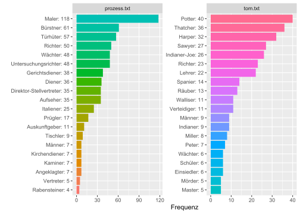
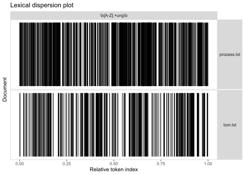
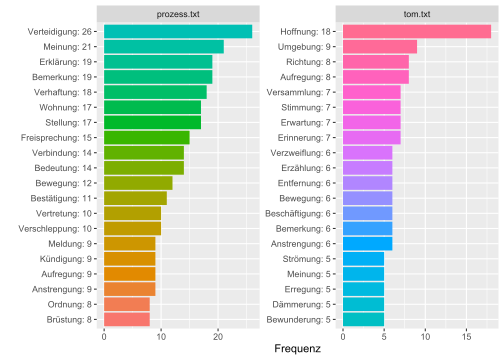

Kapitel 8 Regularni izrazi in quanteda
8.1 Programi
Najprej moramo zagnati programe, ki jih potrebujemo za načrtovano delo.
library(readtext)
library(quanteda)## Warning: package 'quanteda' was built under R version 4.1.1## Package version: 3.1.0
## Unicode version: 13.0
## ICU version: 69.1## Parallel computing: 12 of 12 threads used.## See https://quanteda.io for tutorials and examples.library(quanteda.textstats)
library(quanteda.textplots)
library(tidyverse)## -- Attaching packages --------------------------------------- tidyverse 1.3.1 --## v ggplot2 3.3.5 v purrr 0.3.4
## v tibble 3.1.3 v dplyr 1.0.7
## v tidyr 1.1.3 v stringr 1.4.0
## v readr 2.0.1 v forcats 0.5.1## Warning: package 'readr' was built under R version 4.1.1## -- Conflicts ------------------------------------------ tidyverse_conflicts() --
## x dplyr::filter() masks stats::filter()
## x dplyr::lag() masks stats::lag()library(tidytext)8.2 Preberemo besedila
txt = readtext("data/books/*.txt", encoding = "UTF-8")
txt## readtext object consisting of 2 documents and 0 docvars.
## # Description: df [2 x 2]
## doc_id text
## <chr> <chr>
## 1 prozess.txt "\"Der Prozes\"..."
## 2 tom.txt "\"Tom Sawyer\"..."8.3 Ustvarimo korpus
Ustvarimo korpus ali jezikovno gradivo. Ukaz v programu “quanteda” je corpus().
romane = corpus(txt)8.4 Tokenizacija
woerter = tokens(romane)8.5 Kwic
Za sestavo konkordanc ima program quanteda funkcijo kwic() (keyword in context).
Možno je iskati posamezne besede, besedne zveze, uporabljamo pa lahko tudi nadomestne znake (npr. *).
8.5.1 Frau, Mann
kwic(woerter, pattern = c("Frau", "Herr"))## Keyword-in-context with 226 matches.
## [prozess.txt, 23] 1 Verhaftung, Gespräch mit | Frau |
## [prozess.txt, 55] verhaftet. Die Köchin der | Frau |
## [prozess.txt, 97] seinem Kopfkissen aus die alte | Frau |
## [prozess.txt, 417] im Nebenzimmer sind und wie | Frau |
## [prozess.txt, 552] Es war das Wohnzimmer der | Frau |
## [prozess.txt, 675] erblickte man wieder die alte | Frau |
## [prozess.txt, 701] . » Ich will doch | Frau |
## [prozess.txt, 1648] gerade die gegenüberliegende Tür und | Frau |
## [prozess.txt, 2423] drüben sah er die alte | Frau |
## [prozess.txt, 2869] war, so konnte er | Frau |
## [prozess.txt, 5961] . Im Vorzimmer öffnete dann | Frau |
## [prozess.txt, 6558] in der ganzen Wohnung der | Frau |
## [prozess.txt, 6732] Sohn des Hausmeisters, gnädiger | Herr |
## [prozess.txt, 6773] . » Wünscht der gnädige | Herr |
## [prozess.txt, 6853] , aber da er mit | Frau |
## [prozess.txt, 6896] so spät komme, aber | Frau |
## [prozess.txt, 6995] hinaustragen können. Er sah | Frau |
## [prozess.txt, 7196] . Nur mit einer alten | Frau |
## [prozess.txt, 7292] vertraulich mit mir reden, | Herr |
## [prozess.txt, 7458] was Sie gesagt haben, | Frau |
## [prozess.txt, 7696] , das Urteil einer vernünftigen | Frau |
## [prozess.txt, 7751] dachte er und sah die | Frau |
## [prozess.txt, 7821] doch nicht so schwer, | Herr |
## [prozess.txt, 7865] das Wertlose aller Zustimmungen dieser | Frau |
## [prozess.txt, 7888] » Nein «, sagte | Frau |
## [prozess.txt, 8007] Das ist nicht nötig, | Herr |
## [prozess.txt, 8141] sagte K. und sah | Frau |
## [prozess.txt, 8161] Leute sind! « sagte | Frau |
## [prozess.txt, 8191] kann es «, sagte | Frau |
## [prozess.txt, 8201] sehr haben Sie recht, | Herr |
## [prozess.txt, 8288] Gott, nur Ihnen, | Herr |
## [prozess.txt, 8427] Gute Nacht. « » | Herr |
## [prozess.txt, 8433] K. «, sagte | Frau |
## [prozess.txt, 8625] einen Augenblick sogar daran, | Frau |
## [prozess.txt, 9087] vor. » Ach, | Herr |
## [prozess.txt, 11021] schläft hier ein Neffe von | Frau |
## [prozess.txt, 11199] Sie wissen, wie mich | Frau |
## [prozess.txt, 11273] , und verbürge mich, | Frau |
## [prozess.txt, 11316] überfallen habe, so wird | Frau |
## [prozess.txt, 11363] Boden. » Warum sollte | Frau |
## [prozess.txt, 12308] : » Eine Frage, | Herr |
## [prozess.txt, 13016] flüchtig der zerraufte Kopf einer | Frau |
## [prozess.txt, 13617] Hauptmann, der Neffe der | Frau |
## [prozess.txt, 13777] wohne. Meistens öffnete eine | Frau |
## [prozess.txt, 13800] Bett erhob. » Der | Herr |
## [prozess.txt, 14057] «, sagte eine junge | Frau |
## [prozess.txt, 14165] und sagte zu der jungen | Frau |
## [prozess.txt, 14194] Ja «, sagte die | Frau |
## [prozess.txt, 14215] nicht gefolgt, wenn die | Frau |
## [prozess.txt, 15343] . » Ihre Frage, | Herr |
## [prozess.txt, 15673] » auch Ihr Heftchen, | Herr |
## [prozess.txt, 15766] Sie darin ruhig weiter, | Herr |
## [prozess.txt, 16142] nicht erreichbar sein. Der | Herr |
## [prozess.txt, 16580] Sinne nennen, sie heißt | Frau |
## [prozess.txt, 16585] Frau Grubach -, selbst | Frau |
## [prozess.txt, 16685] gibt hier neben mir der | Herr |
## [prozess.txt, 18306] sich weiter nach der bekannten | Frau |
## [prozess.txt, 18330] Sitzung «, sagte die | Frau |
## [prozess.txt, 18350] nicht glauben. Aber die | Frau |
## [prozess.txt, 18430] Nein «, sagte die | Frau |
## [prozess.txt, 18499] sein «, sagte die | Frau |
## [prozess.txt, 18531] melden? « fragte die | Frau |
## [prozess.txt, 18548] Natürlich «, sagte die | Frau |
## [prozess.txt, 18585] eingerichtetes Wohnzimmer bildete. Die | Frau |
## [prozess.txt, 18672] störte? « fragte die | Frau |
## [prozess.txt, 18712] , daß Sie eine verheiratete | Frau |
## [prozess.txt, 18773] kennen «, sagte die | Frau |
## [prozess.txt, 18891] verbessern? « fragte die | Frau |
## [prozess.txt, 19147] das? « fragte die | Frau |
## [prozess.txt, 19171] gewiß «, rief die | Frau |
## [prozess.txt, 19219] . kopfschüttelnd, und die | Frau |
## [prozess.txt, 19258] . Ein Mann und eine | Frau |
## [prozess.txt, 19291] nur ein Mann und eine | Frau |
## [prozess.txt, 19392] helfen «, sagte die | Frau |
## [prozess.txt, 19438] helfen «, sagte die | Frau |
## [prozess.txt, 19644] laut ausgesprochen und dadurch der | Frau |
## [prozess.txt, 20285] Natürlich «, sagte die | Frau |
## [prozess.txt, 20950] seinem Barte zog, der | Frau |
## [prozess.txt, 20957] ging zum Fenster, die | Frau |
## [prozess.txt, 21089] Hand ins Leere. Die | Frau |
## [prozess.txt, 21119] Einwand, daß ihn die | Frau |
## [prozess.txt, 21204] als daß er ihnen diese | Frau |
## [prozess.txt, 21237] später Nacht das Bett der | Frau |
## [prozess.txt, 21253] . gehörte, weil diese | Frau |
## [prozess.txt, 21288] Weise die Bedenken gegen die | Frau |
## [prozess.txt, 21325] kurz über die Schulter der | Frau |
## [prozess.txt, 21345] sich sogar eng an die | Frau |
## [prozess.txt, 21400] Student nach den Klagen der | Frau |
## [prozess.txt, 21601] Platz machen und mit der | Frau |
## [prozess.txt, 21675] , als wolle er der | Frau |
## [prozess.txt, 21731] streckte die Hand nach der | Frau |
## [prozess.txt, 21823] freien Hand den Arm der | Frau |
## [prozess.txt, 21856] würgen, da sagte die | Frau |
## [prozess.txt, 21937] Nein! « rief die | Frau |
## [prozess.txt, 22215] wollte sehen, wohin die | Frau |
## [prozess.txt, 22278] Treppe trug der Student die | Frau |
## [prozess.txt, 22297] bisherige Laufen geschwächt. Die | Frau |
## [prozess.txt, 22388] annehmen, daß ihn die | Frau |
## [prozess.txt, 22688] sich auch vom Diener keine | Frau |
## [prozess.txt, 22756] hier nicht vor kurzem eine | Frau |
## [prozess.txt, 22885] vor einem Weilchen mit Ihrer | Frau |
## [prozess.txt, 23176] « » Hat denn Ihre | Frau |
## [prozess.txt, 23261] , hinausgeworfen worden. Meine | Frau |
## [prozess.txt, 23323] einmal, wenn er meine | Frau |
## [prozess.txt, 24232] und aufzumuntern: » Der | Herr |
## [prozess.txt, 25282] : » Was wünscht der | Herr |
## [prozess.txt, 26626] brauchen schien, » dieser | Herr |
## [prozess.txt, 26637] vorstellen? « ( der | Herr |
## [prozess.txt, 26648] Erlaubnis ) - » dieser | Herr |
## [prozess.txt, 26895] es «, sagte der | Herr |
## [prozess.txt, 28293] besonders da er auch bei | Frau |
## [prozess.txt, 28491] hinübergetragen werden mußte. Als | Frau |
## [prozess.txt, 28576] Obwohl K. nicht zu | Frau |
## [prozess.txt, 28614] Es wird nicht aufgeräumt, | Herr |
## [prozess.txt, 28701] Bürstner aufgegeben? « » | Herr |
## [prozess.txt, 28707] K. «, rief | Frau |
## [prozess.txt, 28762] doch schon lange genug, | Herr |
## [prozess.txt, 28795] verleumden! Und Sie, | Herr |
## [prozess.txt, 28838] Weinen Sie doch nicht, | Frau |
## [prozess.txt, 28889] sich ins Zimmer zurückwandte und | Frau |
## [prozess.txt, 28924] Freunden einmal geschehen. « | Frau |
## [prozess.txt, 28966] , nach dem Verhalten der | Frau |
## [prozess.txt, 29006] ist es ja eben, | Herr |
## [prozess.txt, 29012] K. «, sagte | Frau |
## [prozess.txt, 29045] immerfort: Warum nimmt sich | Herr |
## [prozess.txt, 29132] den Kaffee zu trinken und | Frau |
## [prozess.txt, 29180] » Ja «, sagte | Frau |
## [prozess.txt, 29275] » Nein «, sagte | Frau |
## [prozess.txt, 29389] nicht vertragen kann. « | Frau |
## [prozess.txt, 29401] . » Soll ich, | Herr |
## [prozess.txt, 29446] » Ja «, sagte | Frau |
## [prozess.txt, 29478] ihre Sachen hinübertragen. « | Frau |
## [prozess.txt, 29519] zu gehen und nahm dadurch | Frau |
## [prozess.txt, 29608] höhnischen Blick nach der erschrockenen | Frau |
## [prozess.txt, 29649] Sonntagvormittag von den Mietern der | Frau |
## [prozess.txt, 29683] und hatte als Antwort für | Frau |
## [prozess.txt, 29715] nichts angerührt «, sagte | Frau |
## [prozess.txt, 29954] doch schon längere Zeit bei | Frau |
## [prozess.txt, 30844] Berechnung, was er von | Frau |
## [prozess.txt, 30958] führte, die Stimme der | Frau |
## [prozess.txt, 31538] zwei anderen riefen: » | Herr |
## [prozess.txt, 31633] nicht benommen. « » | Herr |
## [prozess.txt, 31834] dir nicht, daß der | Herr |
## [prozess.txt, 32031] vor. Und jetzt, | Herr |
## [prozess.txt, 33033] « » Guten Abend, | Herr |
## [prozess.txt, 33920] klagen und riefen: » | Herr |
## [prozess.txt, 35014] sei ein guter und gerechter | Herr |
## [prozess.txt, 37497] Advokaten! « » Der | Herr |
## [prozess.txt, 37519] des kleinen Ganges stand ein | Herr |
## [prozess.txt, 37571] drohend, als sei der | Herr |
## [prozess.txt, 37588] geöffnet «, sagte der | Herr |
## [prozess.txt, 37688] Mädchen vorüberschob. » Der | Herr |
## [prozess.txt, 38396] » Sie sehen, der | Herr |
## [prozess.txt, 39760] Würde tat, » der | Herr |
## [prozess.txt, 39792] ., und hier der | Herr |
## [prozess.txt, 39796] der Herr Kanzleidirektor - der | Herr |
## [prozess.txt, 39824] welcher weiß, wie der | Herr |
## [prozess.txt, 39887] Fausthiebe, Albert, der | Herr |
## [prozess.txt, 39930] wieder zusammenrücken können. - | Herr |
## [prozess.txt, 41552] Fräulein Bürstner, dann die | Frau |
## [prozess.txt, 42582] vor allem, dieser große | Herr |
## [prozess.txt, 45272] , ein guter, stiller | Herr |
## [prozess.txt, 45477] , dann wurde der alte | Herr |
## [prozess.txt, 48536] war ein kleiner, munterer | Herr |
## [prozess.txt, 50598] nichts zum Lachen. » | Herr |
## [prozess.txt, 50699] : » Ich hätte, | Herr |
## [prozess.txt, 52109] Rücksicht mehr üben. » | Herr |
## [prozess.txt, 52367] Sie gehen jetzt weg, | Herr |
## [prozess.txt, 65656] kurz nach dem Tod meiner | Frau |
## [prozess.txt, 70009] leiser Stimme an: » | Herr |
## [prozess.txt, 73915] Sie aber trotzdem noch ein | Herr |
## [prozess.txt, 73923] dann bin ich ein ebensolcher | Herr |
## [prozess.txt, 74223] . zu beschweren: » | Herr |
## [prozess.txt, 76864] ein und meldete, der | Herr |
## [prozess.txt, 76875] um nachzusehen, ob der | Herr |
## [prozess.txt, 76897] ins Empfangszimmer hinüberkommen, der | Herr |
## [prozess.txt, 81676] . Zeig dem Untersuchungsrichter eine | Frau |
## [prozess.txt, 86178] ? « fragte der eine | Herr |
## [prozess.txt, 87428] unwillkürlich, worauf ihm der | Herr |
## [prozess.txt, 87494] ab, während der andere | Herr |
## [prozess.txt, 87515] er, und der andere | Herr |
## [prozess.txt, 87586] und unglaubwürdige. Der eine | Herr |
## [prozess.txt, 87636] . Dann öffnete der eine | Herr |
## [tom.txt, 10407] würdevollen Dame, zweifellos der | Frau |
## [tom.txt, 11609] Thomas, und sage: | Herr |
## [tom.txt, 11624] ,, Thomas Sawyer - | Herr |
## [tom.txt, 12124] , der Mayor und seine | Frau |
## [tom.txt, 17371] kritisch war.,, | Herr |
## [tom.txt, 23990] doch!",, | Herr |
## [tom.txt, 24103] , Tom, aber, | Herr |
## [tom.txt, 25221] vermied er.,, | Herr |
## [tom.txt, 33491] ,, Ganz recht, | Herr |
## [tom.txt, 33510] , Wohl, wohl, | Herr |
## [tom.txt, 33527] ,, Abgefallen ist, | Herr |
## [tom.txt, 33581] , Toppsegel und Klüversegel, | Herr |
## [tom.txt, 33615] , Ho, ho, | Herr |
## [tom.txt, 33640] , Ho, ho, | Herr |
## [tom.txt, 38292] !",, Der | Herr |
## [tom.txt, 38297] Herr hat's gegeben, der | Herr |
## [tom.txt, 49139] ich wäre die dankbarste alte | Frau |
## [tom.txt, 49649] . Ich hoffe, der | Herr |
## [tom.txt, 49655] - ich _weiß_, der | Herr |
## [tom.txt, 52107] zu hassen. Des Lehrers | Frau |
## [tom.txt, 56045] beständig herum; aber, | Herr |
## [tom.txt, 57054] Staatsanwalt:,, Der | Herr |
## [tom.txt, 57106] abermals:,, Der | Herr |
## [tom.txt, 57145] habe.,, Der | Herr |
## [tom.txt, 57346] waren bewegt, und manche | Frau |
## [tom.txt, 57612] ",, Ja, | Herr |
## [tom.txt, 57692] ",, Ja, | Herr |
## [tom.txt, 60683] achthaben.",, | Herr |
## [tom.txt, 65576] Ort.",, | Herr |
## [tom.txt, 72460] Ende war, ging die | Frau |
## [tom.txt, 72465] Frau des Richters Thatcher auf | Frau |
## [tom.txt, 72633] müssen mit ihm." | Frau |
## [tom.txt, 72656] gewesen," sagte unsicher | Frau |
## [tom.txt, 72799] in der Höhle stecken! | Frau |
## [tom.txt, 72924] Frauen besuchten Tante Polly und | Frau |
## [tom.txt, 72982] mehr Kerzen und Lebensmittel" | Frau |
## [tom.txt, 73291] dabei ein beschmutztes Band. | Frau |
## [tom.txt, 73646] ? Sonderbar, daß die | Frau |
## [tom.txt, 76300] Hälfte vergehen konnte, bevor | Frau |
## [tom.txt, 77434] endgültig aufgegeben werden müßten. | Frau |
## [tom.txt, 77650] sie zu küssen, drückte | Frau |
## [tom.txt, 77675] Pollys Seligkeit war vollkommen und | Frau |
## [tom.txt, 78457] ",, Gott, | Herr |
##
## Grubach, dann Fräulein Brüstner
## Grubach, seiner Zimmervermieterin,
## , die ihm gegenüber wohnte
## Grubach diese Störung mir gegenüber
## Grubach, vielleicht war in
## , die mit wahrhaft greisenhafter
## Grubach - «, sagte
## Grubach wollte dort eintreten.
## , die einen noch viel
## Grubach als Zeugin führen oder
## Grubach, die gar nicht
## Grubach verursacht worden sei und
## «, antwortete der Bursche
## etwas? Soll ich den
## Grubach sprechen wollte, klopfte
## Grubach war sehr freundlich und
## Grubach mit einer gewissen Dankbarkeit
## kann ich davon sprechen.
## K., kann ich
## Grubach, wenigstens bin auch
## , wollte ich hören und
## anders als früher, prüfend
## K. «, sagte
## einsehend. Bei der Tür
## Grubach und lächelte bei dieser
## K., Sie sind
## Grubach an, als trage
## Grubach entschuldigend. » Gewiß
## Grubach, » wie sehr
## K. Vielleicht sogar in
## K., aber es
## K. «, sagte
## Grubach bittend und eilte K
## Grubach zu bestrafen und Fräulein
## K.! « sagte
## Grubach, ein Hauptmann.
## Grubach, die in dieser
## Grubach dazu zu bringen,
## Grubach in diesem Sinne unterrichtet
## Grubach nicht glauben, daß
## K.: Möchten Sie
## erschien. Man rief einander
## Grubach, so hieß -
## , hörte die Frage an
## fragt, ob ein Tischler
## mit schwarzen, leuchtenden Augen
## , die ihn wahrscheinlich falsch
## , » gehen Sie,
## nicht auf ihn zugegangen wäre
## Untersuchungsrichter, ob ich Zimmermaler
## Untersuchungsrichter, bestätigt, was
## Untersuchungsrichter, vor diesem Schuldbuch
## Untersuchungsrichter spricht wahrscheinlich viel besser
## Grubach -, selbst Frau
## Grubach war verständig genug,
## Untersuchungsrichter jemandem von Ihnen ein
## umzusehen, die bei der
## . » Warum sollte keine
## überzeugte ihn, indem sie
## und schloß wieder die Tür
## , die ihn nicht genau
## . » Sie kennen ihn
## , » mein Mann ist
## bemerkte sein Staunen und sagte
## . » Natürlich «,
## sind. « » Es
## , » der, welcher
## langsam und prüfend, als
## . » Indem Sie mir
## und zog ihn eiligst hinter
## wischte mit ihrer Schürze,
## saßen nackt auf einem Kanapee
## zu sehen waren, die
## . » Wollen Sie?
## , » kommen Sie,
## sein Verhalten erklärt. »
## , » an den dachte
## und ging zum Fenster,
## beugte sich zu K.
## verlockte ihn wirklich, er
## für das Gericht einfange,
## entzog und an sich nahm
## leer fand. Und leer
## am Fenster, dieser üppige
## beseitigt hatte, wurde ihm
## hinweg nach K. hin
## und umfaßte sie. Sie
## über sie ausübte, stand
## weggehen. Sie werden übrigens
## eine Erklärung für K.s beleidigende
## aus, » kommen Sie
## streichelte und drückte. K
## : » Es hilft nichts
## und wehrte K. mit
## getragen wurde, der Student
## hinauf, schon sehr langsam
## grüßte mit der Hand zu
## nicht nur betrogen, sondern
## auf dem Arm ins Büro
## gesehen habe. » Sie
## gesprochen. Sie ist nicht
## gar keine Schuld dabei «
## ist allerdings die Schönste im
## anrühren will, so durchprügeln
## hier fragt ja nur,
## ? « Hinter ihr in
## - ich darf Sie doch
## gab mit einer Handbewegung die
## also ist der Auskunftgeber.
## spöttisch, » aber ich
## Grubach nichts veranlassen könnte,
## Grubach K. das Frühstück
## Grubach aufsah, bemerkte er
## K. «, sagte
## K. «, rief
## Grubach, die nur auf
## K., um davon
## K., glaubten es
## Grubach «, sagte K
## Grubach noch immer weinte.
## Grubach rückte die Schürze unter
## Grubach zu schließen, der
## K. «, sagte
## Grubach, es war ihr
## K. so sehr des
## Grubach ihre Überflüssigkeit fühlen zu
## Grubach und seufzte, »
## Grubach, » an und
## Grubach kam sich recht machtlos
## K., sagen,
## Grubach, sie verstand nicht
## Grubach nickte nur. Diese
## Grubach die Möglichkeit, sich
## Grubach um. Dieser Blick
## Grubach erfahren mußte. Er
## Grubach, welche leise über
## Grubach. » Ach,
## Grubach. « » Sie
## Grubach über Fräulein Bürstner erfahren
## Grubach. Die Gelegenheit schien
## ! Wir sollen geprügelt werden
## «, sagte Willem,
## unsere Bestrafung nicht verlangt hat
## , ist alles verloren,
## Prokurist! « rief es
## ! « Sofort warf K
## , aber er wisse nicht
## Advokat ist krank «,
## im Schlafrock und machte mit
## die Krankheit, auf ihn
## , zeigte auf die Tür
## Advokat ist krank «,
## ist so krank, er
## Kanzleidirektor - ach so,
## Kanzleidirektor - der Herr Kanzleidirektor
## Kanzleidirektor also war so freundlich
## Kanzleidirektor mit Arbeit überhäuft ist
## Kanzleidirektor rückte mit Sessel und
## Kanzleidirektor «, sagte er
## des Gerichtsdieners und endlich diese
## , der deine Sache in
## , hatte eine schwierige Gerichtssache
## , er war ja auch
## , ein Fabrikant, den
## Prokurist «, sagte der
## Prokurist, noch eine kleine
## Prokurist «, sagte schon
## Prokurist? « » Ja
## , und das ist schon
## Prokurist «, K.
## sind, dann bin ich
## , wenn nicht gar ein
## Advokat «, sagte er
## Direktor habe ihn geschickt,
## Prokurist schon hier sei;
## aus Italien sei schon da
## aus der Ferne, und
## mit zuckenden Mundwinkeln den anderen
## einen leichten, beruhigenden Schlag
## den Steinbruch nach irgendeiner passenden
## geleitete K. hin.
## bat daher den anderen,
## seinen Gehrock und nahm aus
## des letzteren. Die Dame
## ! Nicht vergessen, was
## !",, So
## - denn es gab einen
## !",, Komm
## Gott, Tom, sie
## Gott, ich bin halb
## Gott, Joe, wie
## !",, Tüchtig
## .",,'
## !" Wie sie so
## .",, Bramsegel
## !",, Marssegel
## !" Das Floß trieb
## hat's gegeben, der Herr
## hat's genommen, der Name
## auf der Welt, wenn
## - ich _weiß_, der
## wird ihm vergeben, denn
## wollte in wenigen Tagen zu
## Gott, das tun wir
## Verteidiger hat das Wort.
## Verteidiger hat das Wort.
## Verteidiger hat das Wort.
## verriet ihre Bewegung durch Tränen
## !",, Noch
## . Ich war da mit
## Gott!",,
## Gott, ich wag's nicht
## des Richters Thatcher auf Frau
## Harper zu, die mit
## Thatcher schüttelte schwach den Kopf
## Harper. In Tante Pollys
## Thatcher fiel in Ohnmacht,
## Thatcher, und versuchten,
## Thatcher war völlig verzweifelt,
## Thatcher erkannte das Band und
## da weinte. Solche trüben
## Thatcher erfuhr, daß Becky
## Thatcher war sehr krank und
## Thatchers Hand, suchte vergebens
## Thatchers beinahe. Vollkommen konnte
## Richter - in der HöhleKonkordanco bomo pretvorili v podatkovno zbirko, tj. data.frame ali tibble(). Prednost je npr., da tako pridobimo imena stolpcev (tj. spremenljivk).
kwic() ima več možnosti, npr. “case_insensitive = FALSE” razlikuje med velikimi in malimi črkami. Privzeta vrednost je “TRUE,” tj. da tega ne razlikuje (tako kot Excel).
(konkordanca = kwic(woerter, pattern = c("Frau", "Herr"), case_insensitive = FALSE) %>%
as_tibble()
)## # A tibble: 226 x 7
## docname from to pre keyword post pattern
## <chr> <int> <int> <chr> <chr> <chr> <fct>
## 1 prozess.txt 23 23 1 Verhaftung , Ge~ Frau Grubach , dann Fr~ Frau
## 2 prozess.txt 55 55 verhaftet . Die K~ Frau Grubach , seiner ~ Frau
## 3 prozess.txt 97 97 seinem Kopfkissen~ Frau , die ihm gegenüb~ Frau
## 4 prozess.txt 417 417 im Nebenzimmer si~ Frau Grubach diese Stö~ Frau
## 5 prozess.txt 552 552 Es war das Wohnzi~ Frau Grubach , viellei~ Frau
## 6 prozess.txt 675 675 erblickte man wie~ Frau , die mit wahrhaf~ Frau
## 7 prozess.txt 701 701 . » Ich will doch Frau Grubach - « , sag~ Frau
## 8 prozess.txt 1648 1648 gerade die gegenü~ Frau Grubach wollte do~ Frau
## 9 prozess.txt 2423 2423 drüben sah er die~ Frau , die einen noch ~ Frau
## 10 prozess.txt 2869 2869 war , so konnte er Frau Grubach als Zeugi~ Frau
## # ... with 216 more rowsZ ukazom count() lahko preštejemo, koliko pojavnic je kwic() našel v jezikovnem gradivu.
konkordanca %>%
count(keyword)## # A tibble: 2 x 2
## keyword n
## <chr> <int>
## 1 Frau 132
## 2 Herr 948.5.2 Pripona -in
Poiskati želimo besede s pripono “-in” za samostalnike, ki označujejo ženska osebna imena (npr. Ärztin, Köchin, …).
(konkordanca2 <- kwic(woerter, pattern = c("*in"), case_insensitive = FALSE) %>%
as_tibble()
)## # A tibble: 4,100 x 7
## docname from to pre keyword post pattern
## <chr> <int> <int> <chr> <chr> <chr> <fct>
## 1 prozess.txt 27 27 mit Frau Grubach , dann Fräulein Brüst~ *in
## 2 prozess.txt 53 53 eines Morgens verhaftet . Die Köchin der F~ *in
## 3 prozess.txt 59 59 der Frau Grubach , seiner Zimmerv~ , die~ *in
## 4 prozess.txt 87 87 . K . wartete noch ein Weilc~ *in
## 5 prozess.txt 130 130 . Sofort klopfte es und ein Mann ~ *in
## 6 prozess.txt 135 135 ein Mann , den er in diese~ *in
## 7 prozess.txt 144 144 niemals gesehen hatte , trat ein . Er ~ *in
## 8 prozess.txt 156 156 fest gebaut , er trug ein anlie~ *in
## 9 prozess.txt 293 293 zur Tür , die er ein wenig~ *in
## 10 prozess.txt 323 323 das Frühstück bringt . « Ein klein~ *in
## # ... with 4,090 more rowsMed ključnimi besedami (keywords) so tudi besedne oblike, ki jih nismo želeli (npr. ein, in, …). Na seznamu želimo imeti samo samostalnike s pripono -in (npr. Köchin, Zimmervermieterin, …).
Regularni izrazi (regular expressions, na kratko: regex) nam bodo pomagali izločiti nezaželene zadetke. Po navadi je to postopen proces, dokler ne najdemo najustreznejšega regularnega izraza.
\A na začetku črkovnega niza \Z na koncu črkovnega niza ^ na začetku črkovnega niza ali na začetku vrstice v večvrstičnem vzorcu $ na koncu vrstice
\b besedni rob \w beseda \< začetek besede \> konec besede
\s presledek \d števka [A-Z] samo abecedo (velike črke) [a-z] samo abecedo (male črke) [^Eae] teh znakov želimo izločiti
- nič ali več znakov
- en ali več znakov . poljuben znak (razen: nova vrstica )
(konkordanca2 = as_tibble(kwic(woerter, pattern = "\\b[A-Z].+[^ae]in\\b",
valuetype = "regex", case_insensitive = FALSE)) %>%
filter(keyword != "Immerhin",
keyword != "Darin",
keyword != "Termin",
keyword != "Worin",
keyword != "Robin",
keyword != "Medizin",
keyword != "Disziplin",
keyword != "Austin",
keyword != "Musselin",
keyword != "Benjamin",
keyword != "Franklin")
)## # A tibble: 46 x 7
## docname from to pre keyword post pattern
## <chr> <int> <int> <chr> <chr> <chr> <fct>
## 1 prozess.txt 53 53 eines Morgens verhaftet . Die Köchin der ~ "\\b[A~
## 2 prozess.txt 59 59 der Frau Grubach , seiner Zimmer~ , di~ "\\b[A~
## 3 prozess.txt 2872 2872 konnte er Frau Grubach als Zeugin führ~ "\\b[A~
## 4 prozess.txt 3590 3590 einem Fräulein Bürstner , einer Schrei~ , be~ "\\b[A~
## 5 prozess.txt 6475 6475 in den späten Morgen als Kellne~ in e~ "\\b[A~
## 6 prozess.txt 7349 7349 ich bin ja bloß die Vermie~ . Nu~ "\\b[A~
## 7 prozess.txt 15556 15556 Saalende öffnete , die junge Wäsche~ , di~ "\\b[A~
## 8 prozess.txt 16522 16522 sollten , ebenso wie meine Vermie~ und ~ "\\b[A~
## 9 prozess.txt 16561 16561 , gelungen , selbst meine Vermie~ , ei~ "\\b[A~
## 10 prozess.txt 28090 28090 diesen verwenden . 4 Die Freund~ des ~ "\\b[A~
## # ... with 36 more rowsOd 4100 zadetkov je ostalo le 46 zadetkov, ki vsebujejo samostalnik s pripono -in, ki označuje žensko. Večino napačnih besed smo s seznama odstranili z izbranim regularnim izrazom. Okrog deset smo morali posamično izločiti s funkcijo filter().
8.5.3 Pripona -er
V naslednji nalogi želimo poiskati samostalnike s pripono -er, ki se pogosto nanašajo na osebe moškega spola.
Glede na to, da se pripona -er uporablja v mnoge druge namene, bo najbolje, če - najprej odstranimo funkcijske in druge pogoste besede (seznam stopwords) - in šele potem poizvedujemo s funkcijo kwic()
wortformen = tokens_select(woerter, pattern = c(stopwords("de"), "bisher","immer"),
selection = "remove")Približno 500 besednih oblik manj, kot če ne bi izločili “stopwords.”
(nomen_er = as_tibble(kwic(wortformen, pattern = "\\b[A-Z].+er\\b",
valuetype = "regex", case_insensitive = FALSE))
)## # A tibble: 2,270 x 7
## docname from to pre keyword post pattern
## <chr> <int> <int> <chr> <chr> <chr> <fct>
## 1 prozess.txt 24 24 Gespräch Frau Gr~ Brüstner Jemand mußte J~ "\\b[A-Z~
## 2 prozess.txt 208 208 Frühstück bringt~ Gelächter Nebenzimmer fo~ "\\b[A-Z~
## 3 prozess.txt 209 209 bringt . « klein~ Nebenzim~ folgte , Klang~ "\\b[A-Z~
## 4 prozess.txt 261 261 . » sehen , Leute Nebenzim~ Frau Grubach S~ "\\b[A-Z~
## 5 prozess.txt 317 317 Fremde öffnete f~ Nebenzim~ , K . langsame~ "\\b[A-Z~
## 6 prozess.txt 333 333 fast genau Abend~ Wohnzimm~ Frau Grubach ,~ "\\b[A-Z~
## 7 prozess.txt 345 345 Decken , Porzell~ Zimmer heute wenig me~ "\\b[A-Z~
## 8 prozess.txt 363 363 Mannes bestand ,~ Fenster Buch saß , auf~ "\\b[A-Z~
## 9 prozess.txt 371 371 , aufblickte , »~ Zimmer bleiben sollen~ "\\b[A-Z~
## 10 prozess.txt 399 399 stehengeblieben ~ Fenster erblickte alte~ "\\b[A-Z~
## # ... with 2,260 more rows462 je besednih oblik, ki se konča na -er, vendar med njimi niso samo samostalniki, ki bi se nanašali na osebe moškega spola.
nomen_er %>%
count(keyword, sort = T)## # A tibble: 462 x 2
## keyword n
## <chr> <int>
## 1 Maler 118
## 2 Zimmer 107
## 3 Fenster 75
## 4 Richter 73
## 5 Bürstner 61
## 6 Türhüter 57
## 7 Wächter 54
## 8 Untersuchungsrichter 48
## 9 Wasser 44
## 10 Potter 40
## # ... with 452 more rowsŠe vedno je potrebno posamično filtriranje: bodisi zaradi pomena bodisi zaradi besedotvornega vzorca. Zaradi prej izločenih nezaželenih besed (stopwords) je filtrirni seznam nekoliko krajši.
(nomina_er = nomen_er %>%
filter(!str_detect(keyword,
c("[Z|z]immer|[P|p]apier|[F|f]inger|[W|w]asser|[H|h]äuser|[B|b]ücher|spritzer|[G|g]itter|[K|k]ammer|[W|w]etter")),
!keyword %in% c("Kinder","Messer","Blätter","Kleider","Bilder","Nummer","Koffer","Fenster",
"Feuer","Körper","Gesichter","Kummer","Abenteuer","Schulter","Tier",
"Theater","Fehler","Gelächter","Mutter","Seufzer","Vater","Wunder","Atelier",
"Geister","Mauer","Ufer","Bruder","Hunger","Lichter","Eimer","Lager",
"Meter","Trauer","Polster","Manier"))
)## # A tibble: 1,461 x 7
## docname from to pre keyword post pattern
## <chr> <int> <int> <chr> <chr> <chr> <fct>
## 1 prozess.txt 24 24 Gespräch Frau G~ Brüstner Jemand mußte Jo~ "\\b[A-Z]~
## 2 prozess.txt 508 508 freundlich . we~ Wächter , zuversichtlic~ "\\b[A-Z]~
## 3 prozess.txt 672 672 zweiten Wächter~ Wächter - förmlich freu~ "\\b[A-Z]~
## 4 prozess.txt 695 695 seitlich gedreh~ Wächter verständigte . ~ "\\b[A-Z]~
## 5 prozess.txt 782 782 lachen , mitlac~ Dienstm~ Straßenecke , s~ "\\b[A-Z]~
## 6 prozess.txt 976 976 öffnete , wurde~ Wächter aufgeschreckt ,~ "\\b[A-Z]~
## 7 prozess.txt 1004 1004 darf « , sagte ~ Wächter . » verhaftet .~ "\\b[A-Z]~
## 8 prozess.txt 1022 1022 » fangen « , sa~ Wächter tauchte Butterb~ "\\b[A-Z]~
## 9 prozess.txt 1054 1054 lieber Himmel !~ Wächter . » Lage fügen ~ "\\b[A-Z]~
## 10 prozess.txt 1124 1124 ? « rief schon ~ Wächter . » führen ärge~ "\\b[A-Z]~
## # ... with 1,451 more rowsnomina_er %>%
group_by(docname) %>%
count(keyword, sort = T)## # A tibble: 398 x 3
## # Groups: docname [2]
## docname keyword n
## <chr> <chr> <int>
## 1 prozess.txt Maler 118
## 2 prozess.txt Bürstner 61
## 3 prozess.txt Türhüter 57
## 4 prozess.txt Richter 50
## 5 prozess.txt Untersuchungsrichter 48
## 6 prozess.txt Wächter 48
## 7 tom.txt Potter 40
## 8 prozess.txt Gerichtsdiener 38
## 9 prozess.txt Diener 36
## 10 tom.txt Thatcher 36
## # ... with 388 more rowsZa grafični prikaz obdržimo samo po 20 najpogostnejših izrazov iz vsakega besedila.
nomina_er %>%
group_by(docname) %>%
count(keyword, sort = T) %>%
slice_head(n=20)## # A tibble: 40 x 3
## # Groups: docname [2]
## docname keyword n
## <chr> <chr> <int>
## 1 prozess.txt Maler 118
## 2 prozess.txt Bürstner 61
## 3 prozess.txt Türhüter 57
## 4 prozess.txt Richter 50
## 5 prozess.txt Untersuchungsrichter 48
## 6 prozess.txt Wächter 48
## 7 prozess.txt Gerichtsdiener 38
## 8 prozess.txt Diener 36
## 9 prozess.txt Aufseher 35
## 10 prozess.txt Direktor-Stellvertreter 35
## # ... with 30 more rowsV romanu Tom Sawyer so priimki na -er na vrhu lestvice, roman Prozess vsebuje bistvenih več splošnih samostalnikov, ki se končajo s pripono -er in se nanašajo na moške osebe. Edini Priimek je Bürstner.
library(tidytext)
nomina_er %>%
group_by(docname) %>%
count(keyword, sort = T) %>%
slice_head(n=20) %>%
mutate(keyword = reorder_within(keyword, n, n, sep = ": ")) %>%
ggplot(aes(n, keyword, fill = keyword)) +
geom_col() +
theme(legend.position = "none") +
facet_wrap(~ docname, scales = "free") +
labs(x = "Frequenz", y = "")
8.5.4 Pripona -ung
(nomen_ung = as_tibble(kwic(woerter, pattern = "\\b[A-Z].+ung\\b",
valuetype = "regex", case_insensitive = FALSE))
)## # A tibble: 1,025 x 7
## docname from to pre keyword post pattern
## <chr> <int> <int> <chr> <chr> <chr> <fct>
## 1 prozess.txt 19 19 Der Prozess Franz Kafka 1 Verhaft~ , Gespr~ "\\b[A-~
## 2 prozess.txt 137 137 , den er in dieser Wohnung noch ni~ "\\b[A-~
## 3 prozess.txt 231 231 , als müsse man seine Erschei~ hinnehm~ "\\b[A-~
## 4 prozess.txt 374 374 K . im Tone einer Meldung : » Es ~ "\\b[A-~
## 5 prozess.txt 420 420 und wie Frau Grubach diese Störung mir geg~ "\\b[A-~
## 6 prozess.txt 589 589 so weniger , als die Hauptve~ in der ~ "\\b[A-~
## 7 prozess.txt 712 712 K . , machte eine Bewegung , als r~ "\\b[A-~
## 8 prozess.txt 873 873 Glück haben wie bei der Bestimm~ Ihrer W~ "\\b[A-~
## 9 prozess.txt 1091 1091 , sondern die Höhe der Bestech~ , und w~ "\\b[A-~
## 10 prozess.txt 1265 1265 wagte , ihn in seiner Wohnung zu über~ "\\b[A-~
## # ... with 1,015 more rowsV romanu Prozess je število pojavnic samostalnikov na -ung skoraj enkrat večje kot v Tomu. Mnogi samostalniki s pripono -ung so abstraktni in težje razumljivi kot konkretni samostalniki.
nomen_ung %>%
group_by(docname) %>%
count(keyword, sort = T) %>%
summarise(Freq = sum(n))## # A tibble: 2 x 2
## docname Freq
## <chr> <int>
## 1 prozess.txt 672
## 2 tom.txt 353kwic_ung = kwic(woerter, pattern = "\\b[A-Z].+ung\\b",
valuetype = "regex", case_insensitive = FALSE)
textplot_xray(kwic_ung)
Najpogostnejši samostalniki s pripono -ung odražajo osrednjo tematiko obeh besedil. V romanu Prozess se pogosteje pojavljajo samostalniki s pripono -ung, ki spadajo v pomensko polje “(kriminalno) pravo,” v romanu Tom Sawyer pa je na vrhu lestvice več takih samostalnikov, ki se nanašajo na geografski prostor in razpoloženje.
library(tidytext)
(nomina_ung = nomen_ung %>%
group_by(docname) %>%
count(keyword, sort = T) %>%
slice_head(n=20) %>%
mutate(keyword = reorder_within(keyword, n, n, sep = ": "))
)## # A tibble: 40 x 3
## # Groups: docname [2]
## docname keyword n
## <chr> <fct> <int>
## 1 prozess.txt Verteidigung: 26 26
## 2 prozess.txt Meinung: 21 21
## 3 prozess.txt Bemerkung: 19 19
## 4 prozess.txt Erklärung: 19 19
## 5 prozess.txt Verhaftung: 18 18
## 6 prozess.txt Stellung: 17 17
## 7 prozess.txt Wohnung: 17 17
## 8 prozess.txt Freisprechung: 15 15
## 9 prozess.txt Bedeutung: 14 14
## 10 prozess.txt Verbindung: 14 14
## # ... with 30 more rowsnomina_ung %>%
ggplot(aes(n, keyword, fill = keyword)) +
geom_col() +
theme(legend.position = "none") +
facet_wrap(~ docname, scales = "free") +
labs(x = "Frequenz", y = "")
Iskanje besednih zvez s funkcijo kwic() in phrase() - funkcijske glagolske zveze (Funktionsverbgefüge) in frazemi:
(fvg1 = as_tibble(kwic(woerter, pattern = phrase(
c("zur|in .+ung (ge)komm.+|(ge)brach.+|bring.+")),
valuetype = "regex", case_insensitive = FALSE))
)## # A tibble: 9 x 7
## docname from to pre keyword post pattern
## <chr> <int> <int> <chr> <chr> <chr> <fct>
## 1 prozess.txt 7059 7061 ; wenn ich meine Sachen in Ordn~ will ~ zur|in~
## 2 prozess.txt 8040 8042 es ist auch schon alles in Ordn~ , seh~ zur|in~
## 3 prozess.txt 9424 9426 meine Schuld , ein wenig in Unor~ worde~ zur|in~
## 4 prozess.txt 10979 10981 , » ich werde alles in Ordn~ . Wer~ zur|in~
## 5 prozess.txt 14537 14539 führte , hatte Mühe , seine M~ . Zwe~ zur|in~
## 6 prozess.txt 25105 25107 zurückgehen , ich muß doch meine M~ und h~ zur|in~
## 7 prozess.txt 57526 57528 zum erstenmal mit den Richtern in Verb~ ? « f~ zur|in~
## 8 tom.txt 72134 72136 , mit den letzten Ereignissen in Verb~ zu we~ zur|in~
## 9 tom.txt 77725 77727 Abenteuer , hie und da kleine ~ ; er ~ zur|in~Če so med sestavnimi deli besedne zveze drugi izrazi, lahko tudi postopoma filtriramo:
phrase1 = "\\bstand.*|\\bsteh.*"
(fvg2 = as_tibble(kwic(woerter, pattern = phrase(phrase1), window = 10,
valuetype = "regex", case_insensitive = FALSE)) %>%
filter(str_detect(post, "zur")) %>%
filter(str_detect(post, ".+ung\\b"))
)## # A tibble: 1 x 7
## docname from to pre keyword post pattern
## <chr> <int> <int> <chr> <chr> <chr> <fct>
## 1 prozess.txt 6329 6329 aus dem Wagen ,~ stand mit seinem Grinse~ "\\bstand~8.6 tidytext
8.6.1 Besede
Pretvorba besedil v povedi s programom tidytext, funkcija unnest_tokens():
romantexte = txt %>%
as_tibble() %>%
unnest_tokens(sentence, text, token = "sentences")8.6.2 Besedne zveze
Izvleci samostalniške zveze:
np = "(der|die|das|des|dem|den) ([^ ]+)"
romantexte %>%
str_extract_all(np)## Warning in stri_extract_all_regex(string, pattern, simplify = simplify, :
## argument is not an atomic vector; coercing## [[1]]
## character(0)
##
## [[2]]
## [1] "der prozess" "der prozess"
## [3] "die köchin" "der frau"
## [5] "die ihm" "den tag"
## [7] "das frühstück" "das war"
## [9] "die alte" "die ihm"
## [11] "die ihn" "den er"
## [13] "des schwarzes" "das ,"
## [15] "den reiseanzügen" "der mann"
## [17] "die frage" "das frühstück"
## [19] "der mann" "die er"
## [21] "dem ," "der offenbar"
## [23] "der tür" "das frühstück"
## [25] "dem klang" "der fremde"
## [27] "das wäre" "dem bett"
## [29] "das nicht" "des fremden"
## [31] "der fremde" "der hierbleiben"
## [33] "den ," "der fremde"
## [35] "die tür" "das k."
## [37] "den ersten" "das wohnzimmer"
## [39] "der frau" "das nicht"
## [41] "die hauptveränderung" "der anwesenheit"
## [43] "der beim" "dem er"
## [45] "der neuen" "dem mit"
## [47] "der in" "der tür"
## [49] "der zurück" "das offene"
## [51] "der die" "die mit"
## [53] "dem jetzt" "den fenster"
## [55] "den zwei" "die aber"
## [57] "den ," "der mann"
## [59] "das buch" "das zu"
## [61] "das verfahren" "den alles"
## [63] "der ist" "der bestimmung"
## [65] "dem sessel" "den noch"
## [67] "das alles" "dem andern"
## [69] "der letztere" "die schulter"
## [71] "der zurückgeben" "den .\","
## [73] "die sachen" "dem verkauft"
## [75] "das betreffende" "der nicht"
## [77] "den erlös" "die höhe"
## [79] "des angebotes" "die höhe"
## [81] "der bestechung" "den .\","
## [83] "den kaum" "das verfügungsrecht"
## [85] "das er" "der stieß"
## [87] "der bauch" "des zweiten"
## [89] "des trockenes" "das sich"
## [91] "dem anderen" "das für"
## [93] "den aufrecht" "das schlimmste"
## [95] "des schlimmsten" "die zukunft"
## [97] "das aber" "das ganze"
## [99] "den ihm" "den ,"
## [101] "die kollegen" "der bank"
## [103] "den wächtern" "den mitlachen"
## [105] "der straßenecke" "dem war"
## [107] "dem ersten" "des wächters"
## [109] "den geringsten" "den er"
## [111] "der hand" "den ,"
## [113] "den mit" "das geringste"
## [115] "die möglichen" "das ergebnis"
## [117] "den war" "der geschehen"
## [119] "die ," "den wächtern"
## [121] "die schubladen" "des schreibtischs"
## [123] "die legitimationspapiere" "die er"
## [125] "der aufregung" "den .\","
## [127] "den wächtern" "das papier"
## [129] "den geburtsschein" "der in"
## [131] "das nebenzimmer" "die gegenüberliegende"
## [133] "die tür" "der mitte"
## [135] "des zimmers" "die tür"
## [137] "die sich" "der öffnete"
## [139] "der wächter" "die bei"
## [141] "dem tischchen" "der große"
## [143] "der an" "der wächter"
## [145] "den sie" "die ihrigen"
## [147] "den verhaftbefehl" "der wächter"
## [149] "die wir" "die kaffeetasse"
## [151] "die er" "der hand"
## [153] "der blicke" "die ?\","
## [155] "der große" "den wächtern"
## [157] "die sich" "die mit"
## [159] "den täglich" "den .\","
## [161] "das ist" "dem aber"
## [163] "die hohen" "den ,"
## [165] "die gründe" "der verhaftung"
## [167] "die person" "des verhafteten"
## [169] "die niedrigsten" "die schuld"
## [171] "der bevölkerung" "der schuld"
## [173] "das ist" "der wächter"
## [175] "die gedanken" "der wächter"
## [177] "den oder" "der wächter"
## [179] "den es" "das gesetz"
## [181] "der andere" "das geschwätz"
## [183] "den doch" "die sie"
## [185] "die ich" "den alles"
## [187] "die längsten" "den mit"
## [189] "dem freien" "des zimmers"
## [191] "die alte" "die einen"
## [193] "den sie" "der wächter"
## [195] "der willem" "den war"
## [197] "den wird" "den große"
## [199] "den .\"," "das ist"
## [201] "dem sind" "dem kaffeehaus"
## [203] "den ihn" "die beiden"
## [205] "die tür" "des folgenden"
## [207] "der gar" "die tür"
## [209] "des vorzimmers" "die einfachste"
## [211] "des ganzen" "die spitze"
## [213] "den sie" "die er"
## [215] "die sicherheit" "der lösung"
## [217] "der natürliche" "der von"
## [219] "der wächter" "den er"
## [221] "das frühstück" "das frühstück"
## [223] "dem schmutzigen" "das er"
## [225] "die gnade" "der wächter"
## [227] "der bank" "das war"
## [229] "der verhältnismäßig" "die er"
## [231] "die wirkliche" "der auch"
## [233] "die beiden" "die wohl"
## [235] "dem marsch" "den fenster"
## [237] "dem gedankengang" "der wächter"
## [239] "das zimmer" "die zwei"
## [241] "der sinnlosigkeit" "die geistige"
## [243] "der wächter" "der gleichen"
## [245] "dem er" "des frühstücks"
## [247] "das letztere" "den unwahrscheinlichen"
## [249] "dem nebenzimmer" "den zähnen"
## [251] "der aufseher" "das schreien"
## [253] "das ihn" "das er"
## [255] "dem wächter" "der befehl"
## [257] "den wandschrank" "den die"
## [259] "das selbstverständlich" "der in"
## [261] "den aufseher" "der schon"
## [263] "den .\"," "die wächter"
## [265] "die immer" "den und"
## [267] "der gewissermaßen" "den händen"
## [269] "dem urteil" "der wächter"
## [271] "die köpfe" "den rock"
## [273] "den und" "die hauptverhandlung"
## [275] "die wächter" "die sache"
## [277] "den kleiderkasten" "den vielen"
## [279] "das durch" "den bekannten"
## [281] "des ganzen" "die wächter"
## [283] "den ," "das fiel"
## [285] "der meldung" "das leere"
## [287] "das folgende" "den flügeln"
## [289] "die sehr" "die arbeit"
## [291] "der k." "die grußworte"
## [293] "das nachttischchen" "die mitte"
## [295] "des zimmers" "der aufseher"
## [297] "die beine" "die rückenlehne"
## [299] "des stuhles" "des zimmers"
## [301] "den drei" "die photographien"
## [303] "des fräulein" "die in"
## [305] "der wand" "der klinke"
## [307] "des offenen" "den fenster"
## [309] "der die" "der brust"
## [311] "der seinen" "den fingern"
## [313] "der aufseher" "die vorgänge"
## [315] "des heutigen" "der aufseher"
## [317] "den händen" "die wenigen"
## [319] "die auf" "dem nachttischchen"
## [321] "die kerze" "die er"
## [323] "das wohlgefühl" "der aufseher"
## [325] "die kerze" "die mitte"
## [327] "des tischchens" "die anderen"
## [329] "der aufseher" "der welt"
## [331] "den war" "die heutige"
## [333] "die heutige" "das ganze"
## [335] "die veranstaltungen" "die gemacht"
## [337] "den ," "der der"
## [339] "das ginge" "die grenzen"
## [341] "der aufseher" "der zündhölzchenschachtel"
## [343] "die drei" "den photographien"
## [345] "die sache" "das daraus"
## [347] "die geringste" "den kann"
## [349] "das ist" "die hauptfrage"
## [351] "das verfahren" "der den"
## [353] "den nehmen" "der aufseher"
## [355] "die zündhölzchenschachtel" "den tisch"
## [357] "der .\"," "den sich"
## [359] "die regelrechtesten" "der vielmehr"
## [361] "das ist" "die wächter"
## [363] "das ," "dem gefühl"
## [365] "den nicht" "den sie"
## [367] "den zurückhaltender" "dem war"
## [369] "den aufseher" "den grund"
## [371] "die brust" "den drei"
## [373] "der vor" "dem tisch"
## [375] "des aufsehers" "der staatsanwalt"
## [377] "der aufseher" "das haben"
## [379] "das es" "die herren"
## [381] "der stehen" "die hohe"
## [383] "der aufseher" "die hand"
## [385] "das telephon" "die gesellschaft"
## [387] "der ruhe" "des zuschauens"
## [389] "die alten" "der mann"
## [391] "dem aufseher" "dem zeigefinger"
## [393] "die drei" "die beiden"
## [395] "den mann" "der sie"
## [397] "die entfernung" "den sie"
## [399] "den augenblick" "dem sie"
## [401] "der dem" "der aufseher"
## [403] "den tisch" "die finger"
## [405] "die zwei" "die drei"
## [407] "die hände" "die hüften"
## [409] "der ansicht" "die berechtigung"
## [411] "der nichtberechtigung" "der sache"
## [413] "den tisch" "des aufsehers"
## [415] "die hand" "der aufseher"
## [417] "die augen" "den lippen"
## [419] "der aufseher" "den hut"
## [421] "der auf" "den händen"
## [423] "der anprobe" "der sache"
## [425] "das geht" "das hatte"
## [427] "den ," "den wohl"
## [429] "die bank" "die bank"
## [431] "den war" "dem der"
## [433] "den war" "die absicht"
## [435] "die bank" "der aufseher"
## [437] "der schon" "der tür"
## [439] "den .\"," "das soll"
## [441] "das verhaftetsein" "den aufseher"
## [443] "die mitteilung" "der verhaftung"
## [445] "die anderen" "der tür"
## [447] "der aufseher" "der aufseher"
## [449] "den nicht" "die bank"
## [451] "die bank" "das zu"
## [453] "der bank" "die drei"
## [455] "die er" "den photographien"
## [457] "der erinnerung" "das war"
## [459] "der allwissenheit" "des aufsehers"
## [461] "der bank" "das übersehen"
## [463] "dem aufseher" "den wächtern"
## [465] "den steifen" "die hände"
## [467] "den rabensteiner" "den blonden"
## [469] "den tiefliegenden" "dem unausstehlichen"
## [471] "den sich" "den herren"
## [473] "die hand" "den wir"
## [475] "die arbeit" "die herren"
## [477] "die ganze" "der in"
## [479] "der ," "die zwei"
## [481] "der letzte" "der gleichgültige"
## [483] "der bloß" "den hut"
## [485] "der bank" "die gar"
## [487] "der ganzen" "die wohnungstür"
## [489] "der ," "das so"
## [491] "die uhr" "der hand"
## [493] "die schon" "den wagen"
## [495] "die zwei" "das gegenüberliegende"
## [497] "dem eben" "der große"
## [499] "dem blonden" "die alten"
## [501] "der treppe" "den mann"
## [503] "den er" "den er"
## [505] "das automobil" "das weggehen"
## [507] "des aufsehers" "der wächter"
## [509] "der aufseher" "die drei"
## [511] "der die" "den aufseher"
## [513] "das nicht" "das hinterdeck"
## [515] "des automobils" "den aufseher"
## [517] "die wächter" "der zurück"
## [519] "die wagenecke" "den versuch"
## [521] "den zu" "den anschein"
## [523] "die herren" "dem wagen"
## [525] "das einen" "der die"
## [527] "die abende" "der weise"
## [529] "der arbeit" "der mit"
## [531] "der seine" "der zu"
## [533] "den wurde" "dem ging"
## [535] "der woche" "die während"
## [537] "der nacht" "den späten"
## [539] "des tages" "der tag"
## [541] "den und" "der tagesarbeit"
## [543] "die vorfälle" "des morgens"
## [545] "der ganzen" "der frau"
## [547] "den sei" "die ordnung"
## [549] "der auf" "den drei"
## [551] "der in" "die große"
## [553] "der bank" "dem hause"
## [555] "dem er" "der dort"
## [557] "den burschen" "des flurs"
## [559] "der sohn" "des hausmeisters"
## [561] "der bursche" "die pfeife"
## [563] "dem mund" "der sohn"
## [565] "des hausmeisters" "den boden"
## [567] "der gnädige" "den vater"
## [569] "des ," "der bursche"
## [571] "die treppe" "dem noch"
## [573] "der vollkommen" "das frühstücksgeschirr"
## [575] "das früh" "dem tischchen"
## [577] "den hatte" "das geschirr"
## [579] "der stelle" "die strümpfe"
## [581] "des tages" "den mietern"
## [583] "die abende" "die arbeit"
## [585] "die männer" "die heute"
## [587] "der in" "das hat"
## [589] "den strickstrumpf" "der vornahm"
## [591] "der vorkommen" "das kann"
## [593] "der vorkommen" "das ernstlich"
## [595] "der welt" "den ,"
## [597] "der tür" "die beiden"
## [599] "das liegt" "die vermieterin"
## [601] "das ich" "das man"
## [603] "das ganze" "das war"
## [605] "dem erwachen" "das ausbleiben"
## [607] "der anna" "den und"
## [609] "der mir" "den weg"
## [611] "der küche" "die kleidungsstücke"
## [613] "den wollte" "den .\","
## [615] "der bank" "das allgemeine"
## [617] "das bürotelephon" "dem tisch"
## [619] "dem aber" "der arbeit"
## [621] "den .\"," "das urteil"
## [623] "die hand" "den .\","
## [625] "die hand" "der aufseher"
## [627] "die hand" "die frau"
## [629] "den war" "der stimme"
## [631] "den handschlag" "das wertlose"
## [633] "der tür" "den .\","
## [635] "der nicht" "das ist"
## [637] "den gesenkten" "der tür"
## [639] "das ist" "das fräulein"
## [641] "dem frühen" "die tür"
## [643] "der offenen" "der mond"
## [645] "das dunkle" "die bluse"
## [647] "der fensterklinke" "die polster"
## [649] "das fräulein" "die verantwortung"
## [651] "das kann" "den ,"
## [653] "das alles" "der sein"
## [655] "den lassen" "dem fräulein"
## [657] "das einzige" "das sie"
## [659] "das fräulein" "den ,"
## [661] "dem fräulein" "das fräulein"
## [663] "die er" "dem fräulein"
## [665] "den ," "des mieters"
## [667] "die pension" "die reinheit"
## [669] "die spalte" "der tür"
## [671] "die pension" "die tür"
## [673] "den .\"," "die müden"
## [675] "den ," "das entsetzlich"
## [677] "den verdacht" "die wohnung"
## [679] "der vorfälle" "des hinausschauens"
## [681] "die leere" "den war"
## [683] "das kanapee" "dem er"
## [685] "die tür" "den ,"
## [687] "der die" "dem kanapee"
## [689] "die ankunft" "des fräulein"
## [691] "den und" "den abschluß"
## [693] "den für" "des konnte"
## [695] "das weinlokal" "dem elsa"
## [697] "der unterredung" "der ,"
## [699] "die gekommen" "die tür"
## [701] "das k." "das elektrische"
## [703] "dem dunklen" "den anschein"
## [705] "den türspalt" "die hand"
## [707] "das jetzt" "der anlaß"
## [709] "das ," "das wäre"
## [711] "der leute" "das licht"
## [713] "die ottomane" "der müdigkeit"
## [715] "der sie" "die beine"
## [717] "den vielleicht" "die sache"
## [719] "den ," "das erleichtert"
## [721] "den ," "des zimmers"
## [723] "der zum" "die augen"
## [725] "die art" "der es"
## [727] "das eigentlich" "den .\","
## [729] "die entschuldigung" "die sie"
## [731] "den kann" "die flachen"
## [733] "die hüften" "das zimmer"
## [735] "der matte" "den photographien"
## [737] "das ist" "den beamten"
## [739] "der seine" "den photographien"
## [741] "der sich" "die untersuchungskommission"
## [743] "der eine" "den ich"
## [745] "der bank" "die photographien"
## [747] "die hand" "das fräulein"
## [749] "den blick" "das fräulein"
## [751] "das fräulein" "das fräulein"
## [753] "dem man" "den leib"
## [755] "dem gefängnis" "die untersuchungskommission"
## [757] "der doch" "das kann"
## [759] "das habe" "das gericht"
## [761] "das ist" "den mir"
## [763] "das könnte" "der zumindest"
## [765] "dem halben" "dem sie"
## [767] "die sache" "das ist"
## [769] "der haken" "das weiß"
## [771] "den photographien" "den hatten"
## [773] "der ottomane" "der .\","
## [775] "des fräulein" "die das"
## [777] "der ellbogen" "dem kissen"
## [779] "der ottomane" "die andere"
## [781] "die hüfte" "das ist"
## [783] "das werden" "das nachttischchen"
## [785] "das dürfen" "den zu"
## [787] "das tischchen" "das tischchen"
## [789] "die mitte" "des zimmers"
## [791] "die verteilung" "der personen"
## [793] "der aufseher" "dem koffer"
## [795] "den photographien" "der fensterklinke"
## [797] "die wichtigste" "dem tischchen"
## [799] "der aufseher" "die beine"
## [801] "den arm" "die lehne"
## [803] "der aufseher" "der ,"
## [805] "den er" "die lachend"
## [807] "den zeigefinger" "den mund"
## [809] "der rolle" "der ruf"
## [811] "dem er" "die tür"
## [813] "des nebenzimmers" "die hand"
## [815] "die vorfälle" "des morgens"
## [817] "das mädchen" "dem er"
## [819] "das wohnzimmer" "dem niemand"
## [821] "das kissen" "der auf"
## [823] "der tür" "die andere"
## [825] "des zimmers" "die in"
## [827] "der hauptmann" "den ihrer"
## [829] "die erklärung" "der öffentlichkeit"
## [831] "den und" "das vertrauen"
## [833] "den boden" "den blick"
## [835] "den ," "das plötzliche"
## [837] "den ," "die folgen"
## [839] "die die" "des hauptmannes"
## [841] "der nähe" "der tür"
## [843] "die verantwortung" "dem .\","
## [845] "den guten" "die ich"
## [847] "den wenigen" "die sie"
## [849] "den .\"," "der hand"
## [851] "dem böse" "der nach"
## [853] "der tür" "den ,"
## [855] "die tür" "die tür"
## [857] "des hauptmanns" "der ein"
## [859] "den mund" "das ganze"
## [861] "der zunge" "das endlich"
## [863] "den hals" "die gurgel"
## [865] "die lippen" "dem zimmer"
## [867] "des hauptmanns" "die hand"
## [869] "dem einschlafen" "den ,"
## [871] "des hauptmanns" "den ,"
## [873] "den würde" "der folgen"
## [875] "den .\"," "den prozeß"
## [877] "die untersuchungen" "der hinsicht"
## [879] "der damit" "den ausweg"
## [881] "den ," "die bestimmung"
## [883] "des sonntags" "den sei"
## [885] "die untersuchungen" "der nacht"
## [887] "die nummer" "des hauses"
## [889] "dem er" "den solle"
## [891] "der k." "den hörer"
## [893] "der prozeß" "dem entgegenstellen"
## [895] "die letzte" "die stimme"
## [897] "des direktor-stellvertreters" "der telephonieren"
## [899] "dem aber" "den weg"
## [901] "der direktor-stellvertreter" "der direktor-stellvertreter"
## [903] "den hörer" "die telephonische"
## [905] "das hörrohr" "das vergnügen"
## [907] "der direktor-stellvertreter" "des direktor-stellvertreters"
## [909] "dem er" "der bank"
## [911] "den war" "der wenigstens"
## [913] "dem zweithöchsten" "der bank"
## [915] "des direktor-stellvertreters" "der telephonischen"
## [917] "das hörrohr" "der sonntag"
## [919] "der direktor-stellvertreter" "dem telephonischen"
## [921] "das gerade" "den war"
## [923] "die ganze" "dem apparat"
## [925] "der direktor-stellvertreter" "den ,"
## [927] "der direktor-stellvertreter" "der direktor-stellvertreter"
## [929] "die nacht" "die verschiedenen"
## [931] "die er" "der woche"
## [933] "die ihm" "die drei"
## [935] "die ersten" "der terrasse"
## [937] "die brüstung" "der k."
## [939] "der ," "der geringsten"
## [941] "den hilfe" "den in"
## [943] "die geringste" "der untersuchungskommission"
## [945] "das haus" "der ferne"
## [947] "das er" "der an"
## [949] "dem eingang" "die juliusstraße"
## [951] "der es" "den seiten"
## [953] "die meisten" "der hielten"
## [955] "der vorsichtig" "den fensterrand"
## [957] "dem flüchtig" "der zerraufte"
## [959] "der über" "die gasse"
## [961] "den sich" "der langen"
## [963] "dem straßenniveau" "den mit"
## [965] "der standen" "den stufen"
## [967] "der seine" "den fenstern"
## [969] "die gasse" "der als"
## [971] "der untersuchungsrichter" "den habe"
## [973] "das haus" "die toreinfahrt"
## [975] "die zu" "den verschiedenen"
## [977] "die jetzt" "den großen"
## [979] "dem bankgeschäft" "des hofes"
## [981] "das wasser" "des hofes"
## [983] "dem die" "die arbeit"
## [985] "der treppe" "der still"
## [987] "des hofes" "die lage"
## [989] "des zimmers" "der gleichgültigkeit"
## [991] "der man" "das sehr"
## [993] "die treppe" "den ausspruch"
## [995] "des wächters" "das gericht"
## [997] "der schuld" "das untersuchungszimmer"
## [999] "der treppe" "die k."
## [1001] "der ," "die auf"
## [1003] "der treppe" "der hergehen"
## [1005] "der zuckerwerk" "der den"
## [1007] "dem ersten" "den verzwickten"
## [1009] "den beinkleidern" "die eigentliche"
## [1011] "der untersuchungskommission" "der name"
## [1013] "der hauptmann" "der neffe"
## [1015] "der frau" "die möglichkeit"
## [1017] "die zimmer" "das meistens"
## [1019] "den offen" "die kinder"
## [1021] "der regel" "der freien"
## [1023] "dem herd" "den die"
## [1025] "der noch" "der leute"
## [1027] "die sich" "den wohnungen"
## [1029] "die frage" "dem ,"
## [1031] "der sich" "dem bett"
## [1033] "der herr" "der aus"
## [1035] "dem bett" "die untersuchungskommission"
## [1037] "den tischler" "den ,"
## [1039] "der aber" "der einen"
## [1041] "der mit" "der sie"
## [1043] "der begleiteten" "der wo"
## [1045] "der bessere" "die stockwerke"
## [1047] "der ihm" "dem fünften"
## [1049] "die suche" "der ihn"
## [1051] "der das" "die erste"
## [1053] "des fünften" "das erste"
## [1055] "dem kleinen" "die schon"
## [1057] "den augen" "die gerade"
## [1059] "der nassen" "die offene"
## [1061] "des nebenzimmers" "der verschiedensten"
## [1063] "den eintretenden" "das knapp"
## [1065] "der decke" "die gleichfalls"
## [1067] "die leute" "die decke"
## [1069] "dem die" "der hinaus"
## [1071] "der jungen" "die ihn"
## [1073] "den hatte" "die frau"
## [1075] "die frau" "die türklinke"
## [1077] "der hinein" "die sich"
## [1079] "der tür" "der eine"
## [1081] "den ," "den die"
## [1083] "des geldaufzählens" "der andere"
## [1085] "die augen" "dem durcheinanderwimmelnden"
## [1087] "der möglicherweise" "den ersten"
## [1089] "die rücken" "den und"
## [1091] "die meisten" "den feiertagsröcken"
## [1093] "das ganze" "des saales"
## [1095] "dem k." "der quere"
## [1097] "des podiums" "der mann"
## [1099] "der sich" "den ellbogen"
## [1101] "die sessellehne" "die beine"
## [1103] "den arm" "die luft"
## [1105] "den .\"," "der junge"
## [1107] "der k." "den fußspitzen"
## [1109] "dem mann" "den zu"
## [1111] "der leute" "dem podium"
## [1113] "den jungen" "der mann"
## [1115] "der mann" "der rechten"
## [1117] "der mann" "den saal"
## [1119] "das murren" "der mann"
## [1121] "die leute" "der galerie"
## [1123] "dem halbdunkel" "den konnte"
## [1125] "die unten" "die sie"
## [1127] "den kopf" "die zimmerdecke"
## [1129] "den ," "die verteidigung"
## [1131] "der aus" "der rechten"
## [1133] "die stille" "der linken"
## [1135] "die gerade" "der sich"
## [1137] "der ," "das nicht"
## [1139] "die anderen" "der mann"
## [1141] "der das" "der mann"
## [1143] "dem er" "den leuten"
## [1145] "der hand" "den er"
## [1147] "den tisch" "das gedränge"
## [1149] "den tisch" "des untersuchungsrichters"
## [1151] "der untersuchungsrichter" "dem er"
## [1153] "dem mann" "des wort"
## [1155] "dem einzigen" "der form"
## [1157] "der untersuchungsrichter" "dem heft"
## [1159] "der rechten" "das so"
## [1161] "die leute" "den händen"
## [1163] "der galerie" "der ganz"
## [1165] "der wahrscheinlich" "die leute"
## [1167] "der galerie" "der galerie"
## [1169] "den augenbrauen" "die linke"
## [1171] "die leute" "den dort"
## [1173] "dem podium" "den worten"
## [1175] "die oben" "den ,"
## [1177] "dem lärm" "der anderen"
## [1179] "der anderen" "die leute"
## [1181] "der linken" "die übrigens"
## [1183] "die der" "die ruhe"
## [1185] "den begann" "den kopf"
## [1187] "die ganze" "des verfahrens"
## [1189] "das gegen" "den ,"
## [1191] "den augenblick" "den saal"
## [1193] "der dort" "das folgende"
## [1195] "der stille" "der allem"
## [1197] "die tür" "die junge"
## [1199] "die ihre" "die sie"
## [1201] "der untersuchungsrichter" "den worten"
## [1203] "den .\"," "den ,"
## [1205] "die galerie" "der pause"
## [1207] "den .\"," "der das"
## [1209] "den damit" "der fremden"
## [1211] "das heft" "dem untersuchungsrichter"
## [1213] "den fingerspitzen" "die engbeschriebenen"
## [1215] "das sind" "die akten"
## [1217] "des untersuchungsrichters" "das heft"
## [1219] "den tisch" "die hand"
## [1221] "der es" "den ,"
## [1223] "der untersuchungsrichter" "dem heftchen"
## [1225] "den tisch" "der vornahm"
## [1227] "die gesichter" "der leute"
## [1229] "der ersten" "die entscheidenden"
## [1231] "die die" "die demütigung"
## [1233] "des untersuchungsrichters" "der regungslosigkeit"
## [1235] "der die" "der ersten"
## [1237] "das zeichen" "den und"
## [1239] "der bravo" "die in"
## [1241] "der ersten" "des ausrufs"
## [1243] "die allgemeinheit" "die sache"
## [1245] "der herr" "die öffentliche"
## [1247] "des .\"," "den ,"
## [1249] "die tatsache" "der verhaftung"
## [1251] "das gehört" "dem ,"
## [1253] "der untersuchungsrichter" "den befehl"
## [1255] "der ebenso" "das nebenzimmer"
## [1257] "die ohren" "der herauslocken"
## [1259] "dem sie" "den aufseher"
## [1261] "das zimmer" "die ich"
## [1263] "die anwesenheit" "der wächter"
## [1265] "des aufsehers" "den aufseher"
## [1267] "den ich" "dem sessel"
## [1269] "der erwähnten" "des stumpfsinnigsten"
## [1271] "den .\"," "das zimmer"
## [1273] "die sich" "der dame"
## [1275] "die anwesenheit" "die nachricht"
## [1277] "der bank" "dem sinne"
## [1279] "den nicht" "der gasse"
## [1281] "das ganze" "den ärger"
## [1283] "dem stillen" "dem in"
## [1285] "der menge" "der herr"
## [1287] "dem von" "die von"
## [1289] "den .\"," "das zeichen"
## [1291] "der beifall" "die sache"
## [1293] "die bedeutung" "des zeichens"
## [1295] "den herrn" "dem er"
## [1297] "das nächste" "der ungeduld"
## [1299] "der untersuchungsrichter" "der mann"
## [1301] "dem er" "der zu"
## [1303] "der um" "die leute"
## [1305] "die zwei" "die früher"
## [1307] "dem finger" "den untersuchungsrichter"
## [1309] "der neblige" "der fernerstehenden"
## [1311] "die galeriebesucher" "dem untersuchungsrichter"
## [1313] "die versammlungsteilnehmer" "die antworten"
## [1315] "den im" "der vorgehaltenen"
## [1317] "den war" "der faust"
## [1319] "den tisch" "die köpfe"
## [1321] "des untersuchungsrichters" "der :"
## [1323] "die ganze" "die versammlung"
## [1325] "der wie" "der auf"
## [1327] "dem nächsten" "das angespannte"
## [1329] "der ganzen" "das aufreizender"
## [1331] "der verzückteste" "der verhaftung"
## [1333] "der heutigen" "die nicht"
## [1335] "die günstigsten" "den sind"
## [1337] "die weiterhin" "des unterhält"
## [1339] "dem zahllosen" "dem wort"
## [1341] "der sinn" "den und"
## [1343] "des ganzen" "die schlimmste"
## [1345] "der beamtenschaft" "den ?\","
## [1347] "das ist" "das brächte"
## [1349] "der höchste" "die wächter"
## [1351] "den verhafteten" "die kleider"
## [1353] "den .\"," "die wächter"
## [1355] "die man" "das eigentum"
## [1357] "der verhafteten" "das mühsam"
## [1359] "der verhafteten" "die augen"
## [1361] "das trübe" "den dunst"
## [1363] "die waschfrau" "die k."
## [1365] "der nicht" "der tür"
## [1367] "der mann" "den mund"
## [1369] "die galeriebesucher" "der nähe"
## [1371] "der ernst" "den k."
## [1373] "die versammlung" "dem ersten"
## [1375] "das paar" "dem saal"
## [1377] "die ersten" "den arm"
## [1379] "das paar" "der verhaftung"
## [1381] "dem gedränge" "die leute"
## [1383] "den schlußfolgerungen" "die verstellung"
## [1385] "die wangen" "die langen"
## [1387] "den bärten" "das war"
## [1389] "die eigentliche" "die k."
## [1391] "der ," "die scheinbaren"
## [1393] "die gleichen" "des untersuchungsrichters"
## [1395] "der ," "die hände"
## [1397] "die arme" "die höhe"
## [1399] "die plötzliche" "die korrupte"
## [1401] "die ich" "der habt"
## [1403] "die verteidigung" "der unschuld"
## [1405] "der aber" "der ich"
## [1407] "den greis" "der sich"
## [1409] "der aber" "der am"
## [1411] "des tisches" "der stille"
## [1413] "der untersuchungsrichter" "der tür"
## [1415] "den untersuchungsrichter" "die tür"
## [1417] "der untersuchungsrichter" "des vorteils"
## [1419] "den ein" "den verhafteten"
## [1421] "dem falle" "die tür"
## [1423] "die tür" "die treppe"
## [1425] "der lärm" "der wieder"
## [1427] "die vorfälle" "den zu"
## [1429] "der student" "die kanzleien"
## [1431] "der nächsten" "die erwartete"
## [1433] "das gleiche" "die gleiche"
## [1435] "der vorgeladen" "der hin"
## [1437] "die sich" "den mehr"
## [1439] "der richtigen" "der bekannten"
## [1441] "die bei" "der tür"
## [1443] "die frau" "die frau"
## [1445] "dem sie" "die tür"
## [1447] "des nebenzimmers" "dem tisch"
## [1449] "der unverändert" "dem podium"
## [1451] "die bücher" "die frau"
## [1453] "der die" "das ist"
## [1455] "die bücher" "dem untersuchungsrichter"
## [1457] "die bücher" "der art"
## [1459] "die frau" "die ihn"
## [1461] "den hatte" "der «"
## [1463] "dem untersuchungsrichter" "den ?\","
## [1465] "die frau" "die frau"
## [1467] "das zimmer" "dem letzthin"
## [1469] "den war" "die frau"
## [1471] "das zimmer" "die stellung"
## [1473] "das zimmer" "den vorfall"
## [1475] "der letzten" "den ich"
## [1477] "die frau" "das nicht"
## [1479] "die mich" "die frau"
## [1481] "der ," "den ;"
## [1483] "den ," "die frau"
## [1485] "das schon" "die mir"
## [1487] "den anfang" "des schlusses"
## [1489] "dem studenten" "dem boden"
## [1491] "den .\"," "dem untersuchungsrichter"
## [1493] "den sie" "der bestraft"
## [1495] "den .\"," "die verbesserungsbedürftigkeit"
## [1497] "den ," "dem deshalb"
## [1499] "das ?\"," "die frau"
## [1501] "dem sie" "die bücher"
## [1503] "dem tisch" "die frau"
## [1505] "der mitte" "die stücke"
## [1507] "die frau" "den büchern"
## [1509] "den staub" "das oberste"
## [1511] "die gemeine" "des zeichners"
## [1513] "die allzu" "dem bilde"
## [1515] "der zuwendeten" "das titelblatt"
## [1517] "des zweiten" "dem titel"
## [1519] "die plagen" "den hatte"
## [1521] "das sind" "die gesetzbücher"
## [1523] "die hier" "den «"
## [1525] "den .\"," "die frau"
## [1527] "das wirklich" "dem will"
## [1529] "die frau" "den sie"
## [1531] "die gefahr" "das podium"
## [1533] "die stufe" "dem sie"
## [1535] "der grund" "das ist"
## [1537] "die gerichtsbeamten" "den beliebigen"
## [1539] "den mit" "der frau"
## [1541] "die niedrigen" "die sich"
## [1543] "das bezweifle" "das größte"
## [1545] "den endgültigen" "des prozesses"
## [1547] "das will" "das nicht"
## [1549] "der gesellschaft" "die ich"
## [1551] "den sich" "den studenten"
## [1553] "das konnte" "die er"
## [1555] "den gefallen" "der erwartung"
## [1557] "dem ," "das muß"
## [1559] "des prozesses" "des prozesses"
## [1561] "das verfahren" "der vergeßlichkeit"
## [1563] "der vielleicht" "der beamtenschaft"
## [1565] "der in" "der nächsten"
## [1567] "den wird" "den prozeß"
## [1569] "den .\"," "die sie"
## [1571] "dem untersuchungsrichter" "der irgend"
## [1573] "dem sonst" "der wichtige"
## [1575] "die herren" "das können"
## [1577] "den herren" "den ,"
## [1579] "die ich" "die anderen"
## [1581] "den untersuchungsrichter" "die frau"
## [1583] "den dachte" "dem glaube"
## [1585] "der bericht" "den er"
## [1587] "die beamten" "die sitzung"
## [1589] "der untersuchungsrichter" "den und"
## [1591] "der an" "die möbel"
## [1593] "der unser" "den untersuchungsrichter"
## [1595] "der nacht" "der nacht"
## [1597] "dem bett" "der untersuchungsrichter"
## [1599] "die lampe" "der hand"
## [1601] "das licht" "der untersuchungsrichter"
## [1603] "die lampe" "den anblick"
## [1605] "den habe" "dem allem"
## [1607] "der untersuchungsrichter" "der hauptgegenstände"
## [1609] "der sonntäglichen" "dem aber"
## [1611] "dem vorfall" "der untersuchungsrichter"
## [1613] "der ersten" "den studenten"
## [1615] "dem er" "der sein"
## [1617] "das sitzungszimmer" "das ist"
## [1619] "die beine" "die röcke"
## [1621] "die strümpfe" "den blick"
## [1623] "der tür" "des sitzungszimmers"
## [1625] "dem er" "die finger"
## [1627] "der erste" "der unbekannten"
## [1629] "dem er" "der wahrscheinlich"
## [1631] "der student" "den er"
## [1633] "der frau" "die frau"
## [1635] "die frau" "der verlockung"
## [1637] "den flüchtigen" "die frau"
## [1639] "das gericht" "das ganze"
## [1641] "dem untersuchungsrichter" "der fall"
## [1643] "der untersuchungsrichter" "das bett"
## [1645] "der frau" "dem er"
## [1647] "die bedenken" "die frau"
## [1649] "das leise" "den knöcheln"
## [1651] "das podium" "der faust"
## [1653] "der student" "die schulter"
## [1655] "der frau" "die frau"
## [1657] "den kopf" "den hals"
## [1659] "den wesentlich" "die tyrannei"
## [1661] "die der" "den klagen"
## [1663] "der frau" "dem studenten"
## [1665] "der student" "das schon"
## [1667] "der hochmut" "des künftigen"
## [1669] "der zu" "das ist"
## [1671] "der frau" "den übrigens"
## [1673] "den .\"," "den allein"
## [1675] "die sie" "der student"
## [1677] "der frau" "dem untersuchungsrichter"
## [1679] "den verhören" "der untersuchungsrichter"
## [1681] "den «" "die hand"
## [1683] "der frau" "der student"
## [1685] "die bekommen" "die man"
## [1687] "dem wagte" "dem er"
## [1689] "der freien" "den arm"
## [1691] "der frau" "die frau"
## [1693] "der untersuchungsrichter" "dem studenten"
## [1695] "der hand" "den !\","
## [1697] "die hand" "die schulter"
## [1699] "des studenten" "der mit"
## [1701] "den zähnen" "die frau"
## [1703] "den händen" "das nicht"
## [1705] "das wäre" "den befehl"
## [1707] "des untersuchungsrichters" "dem studenten"
## [1709] "den rücken" "das die"
## [1711] "die er" "die niederlage"
## [1713] "den kampf" "dem dieser"
## [1715] "den mit" "die allerlächerlichste"
## [1717] "die es" "den um"
## [1719] "den studenten" "die frau"
## [1721] "der student" "die straßen"
## [1723] "dem arm" "der weg"
## [1725] "der wohnung" "den ,"
## [1727] "der student" "die frau"
## [1729] "das bisherige" "die frau"
## [1731] "der hand" "der schultern"
## [1733] "der entführung" "der verraten"
## [1735] "die enttäuschung" "den könne"
## [1737] "die zwei" "den ,"
## [1739] "der tür" "die frau"
## [1741] "der angabe" "der untersuchungsrichter"
## [1743] "dem dachboden" "die holztreppe"
## [1745] "dem aufgang" "den gerichtskanzleien"
## [1747] "dem dachboden" "die gerichtskanzleien"
## [1749] "das war" "die viel"
## [1751] "den ," "die mietsparteien"
## [1753] "die schon" "den ärmsten"
## [1755] "die beamtenschaft" "das war"
## [1757] "den bisherigen" "des gerichtes"
## [1759] "der ," "die armut"
## [1761] "des gerichtes" "den angeklagten"
## [1763] "den dachboden" "den und"
## [1765] "dem richter" "der auf"
## [1767] "dem dachboden" "der bank"
## [1769] "den belebten" "der unterschlagungen"
## [1771] "dem arm" "dem anschlagzettel"
## [1773] "die treppe" "die offene"
## [1775] "dem man" "das sitzungszimmer"
## [1777] "der gerichtsdiener" "der mann"
## [1779] "der angeklagte" "der es"
## [1781] "die hand" "der gerichtsdiener"
## [1783] "den zivilrock" "des gerichtsdieners"
## [1785] "der als" "die von"
## [1787] "der student" "der gerichtsdiener"
## [1789] "die hoffnung" "dem amt"
## [1791] "dem ich" "den türspalt"
## [1793] "den haben" "der zurück"
## [1795] "der student" "die bodentreppe"
## [1797] "den studenten" "der wand"
## [1799] "dem anschlagzettel" "dem fußboden"
## [1801] "die arme" "die finger"
## [1803] "die krummen" "der gerichtsdiener"
## [1805] "die eifersucht" "der gerichtsdiener"
## [1807] "die größte" "die er"
## [1809] "den .\"," "die schönste"
## [1811] "der gerichtsdiener" "den studenten"
## [1813] "der ein" "den gefallen"
## [1815] "der gerichtsdiener" "den ausgang"
## [1817] "des prozesses" "die voruntersuchung"
## [1819] "der gerichtsdiener" "die ansicht"
## [1821] "den aber" "der regel"
## [1823] "das soll" "den studenten"
## [1825] "der gerichtsdiener" "die erfüllbarkeit"
## [1827] "den vielleicht" "das gleiche"
## [1829] "der gerichtsdiener" "das gespräch"
## [1831] "den zu" "dem er"
## [1833] "der kanzlei" "den .\","
## [1835] "die kanzleien" "der gerichtsdiener"
## [1837] "der gerichtsdiener" "die treppe"
## [1839] "der tür" "das publikum"
## [1841] "der gerichtsdiener" "das wartezimmer"
## [1843] "dem aus" "den einzelnen"
## [1845] "des dachbodens" "den gang"
## [1847] "die einiges" "die man"
## [1849] "der geradezu" "den und"
## [1851] "die lücken" "die leute"
## [1853] "dem gang" "dem gang"
## [1855] "der saßen" "den zwei"
## [1857] "die zu" "den seiten"
## [1859] "des ganges" "die meisten"
## [1861] "dem gesichtsausdruck" "der haltung"
## [1863] "der barttracht" "den kleinen"
## [1865] "den höheren" "den waren"
## [1867] "die hüte" "dem beispiel"
## [1869] "des anderen" "die bank"
## [1871] "die ," "der tür"
## [1873] "den gerichtsdiener" "das die"
## [1875] "den sahen" "der beiden"
## [1877] "den niemals" "der rücken"
## [1879] "die knie" "den wie"
## [1881] "den ein" "den gerichtsdiener"
## [1883] "die sein" "der gerichtsdiener"
## [1885] "die sie" "den nächsten"
## [1887] "die unerwartete" "den mann"
## [1889] "der anderswo" "die überlegenheit"
## [1891] "die er" "die anderen"
## [1893] "der gerichtsdiener" "den mann"
## [1895] "der herr" "die ihm"
## [1897] "des gerichtsdieners" "die fragestellung"
## [1899] "die fortsetzung" "der wartenden"
## [1901] "den die" "der gerichtsdiener"
## [1903] "den gang" "der gefragte"
## [1905] "die erledigung" "der mann"
## [1907] "der denkt" "den will"
## [1909] "der einen" "das für"
## [1911] "der mann" "der in"
## [1913] "der mann" "der antwort"
## [1915] "das demütige" "des mannes"
## [1917] "dem schrie" "der mann"
## [1919] "den zange" "die bank"
## [1921] "die meisten" "der gerichtsdiener"
## [1923] "den um" "den mann"
## [1925] "der schon" "den zwischenfall"
## [1927] "der hauptsächlich" "der farbe"
## [1929] "der hand" "der wächter"
## [1931] "der wegen" "des schreiens"
## [1933] "dem vorgefallenen" "der gerichtsdiener"
## [1935] "der wächter" "die gesellschaft"
## [1937] "dem gang" "der hälfte"
## [1939] "des ganges" "die möglichkeit"
## [1941] "dem gerichtsdiener" "das der"
## [1943] "der gerichtsdiener" "der zwei"
## [1945] "dem gerichtsdiener" "den anschein"
## [1947] "den gerichtsdiener" "der zurück"
## [1949] "der gerichtsdiener" "der sich"
## [1951] "der gerichtsdiener" "den gang"
## [1953] "den weg" "der einzige"
## [1955] "der gerichtsdiener" "der mit"
## [1957] "den gerichtsdiener" "der gerichtsdiener"
## [1959] "der warten" "der zurückgehen"
## [1961] "dem raum" "dem er"
## [1963] "der vielen" "die ringsherum"
## [1965] "den ," "das wohl"
## [1967] "der herr" "der ferne"
## [1969] "den gerichtsdiener" "die beamtenschaft"
## [1971] "die einzig" "die ,"
## [1973] "das datum" "des nächsten"
## [1975] "der ," "dem verlangen"
## [1977] "das innere" "dem ,"
## [1979] "der verfassung" "der tür"
## [1981] "dem gerichtsdiener" "der allein"
## [1983] "das mädchen" "der gerichtsdiener"
## [1985] "der nächsten" "die sie"
## [1987] "der türöffnung" "der mann"
## [1989] "den k." "der ferne"
## [1991] "der niedrigen" "den fußspitzen"
## [1993] "das mädchen" "das benehmen"
## [1995] "die ellbogen" "die lehnen"
## [1997] "den strengen" "das ist"
## [1999] "der bekommt" "das ist"
## [2001] "die sonne" "das dachgerüst"
## [2003] "das heiße" "die luft"
## [2005] "der ort" "die luft"
## [2007] "das ist" "der tag"
## [2009] "den mietern" "den sie"
## [2011] "die luft" "der drittenmal"
## [2013] "den sie" "das drückende"
## [2015] "den leuten" "die ursachen"
## [2017] "das mädchen" "die an"
## [2019] "der wand" "die gerade"
## [2021] "das mädchen" "die luke"
## [2023] "der zuziehen" "die hände"
## [2025] "das selbst" "das mußte"
## [2027] "das mädchen" "den verkehr"
## [2029] "den blicken" "dem mann"
## [2031] "der tür" "der auch"
## [2033] "das wollte" "den ,"
## [2035] "den ," "den .\","
## [2037] "das bequeme" "der nieder"
## [2039] "den gerichtsdiener" "der ihn"
## [2041] "der schien" "dem mädchen"
## [2043] "dem mann" "die vor"
## [2045] "den ," "den gerichtsdiener"
## [2047] "den .\"," "der mann"
## [2049] "der übrigens" "die in"
## [2051] "das unwohlsein" "des herrn"
## [2053] "die atmosphäre" "den kanzleien"
## [2055] "das ist" "die rede"
## [2057] "des mannes" "den ,"
## [2059] "den achseln" "die stufen"
## [2061] "die freundlichkeit" "die schultern"
## [2063] "den beiden" "die arme"
## [2065] "der mann" "der aufforderung"
## [2067] "die hände" "den hosentaschen"
## [2069] "dem mädchen" "das richtige"
## [2071] "dem herrn" "das mädchen"
## [2073] "dem mann" "den fingerspitzen"
## [2075] "den arm" "der mann"
## [2077] "den herrn" "das mädchen"
## [2079] "dem sie" "dem lachen"
## [2081] "das mädchen" "der ,"
## [2083] "der traurig" "den ,"
## [2085] "der herr" "die erlaubnis"
## [2087] "der auskunftgeber" "den wartenden"
## [2089] "die sie" "der bevölkerung"
## [2091] "den viele" "das ist"
## [2093] "die elegante" "das heißt"
## [2095] "die beamtenschaft" "den auskunftgeber"
## [2097] "der immerfort" "des würdigen"
## [2099] "der sehr" "die kleidung"
## [2101] "den ," "den kanzleien"
## [2103] "den auskunftgeber" "die in"
## [2105] "der und" "die leute"
## [2107] "der herr" "dem herrn"
## [2109] "der besser" "die absicht"
## [2111] "des mädchens" "der ihm"
## [2113] "die möglichkeit" "das mittel"
## [2115] "das mädchen" "die zwei"
## [2117] "die hand" "des auskunftgebers"
## [2119] "die hand" "des mädchens"
## [2121] "der auskunftgeber" "den vielmals"
## [2123] "die fremden" "die stellen"
## [2125] "die stütze" "das mädchen"
## [2127] "dem gang" "den auskunftgeber"
## [2129] "die wahrheit" "den anschein"
## [2131] "dem helfen" "der auskunftgeber"
## [2133] "dem angeklagten" "den k."
## [2135] "den ," "der auskunftgeber"
## [2137] "den gespreizten" "die frisur"
## [2139] "die haare" "die schweißbedeckte"
## [2141] "der angeklagte" "dem auskunftgeber"
## [2143] "der über" "die erledigung"
## [2145] "den kann" "das nicht"
## [2147] "der auskunftgeber" "den platz"
## [2149] "dem ," "den gang"
## [2151] "die ihre" "den parteien"
## [2153] "den versteht" "das mädchen"
## [2155] "der auskunftgeber" "der fragte"
## [2157] "das mit" "das sich"
## [2159] "das wasser" "die holzwände"
## [2161] "der tiefe" "des ganges"
## [2163] "dem wasser" "der gang"
## [2165] "der quere" "den die"
## [2167] "den parteien" "den seiten"
## [2169] "die ruhe" "des mädchens"
## [2171] "des mannes" "die ihn"
## [2173] "den lärm" "der alles"
## [2175] "den hindurch" "die wand"
## [2177] "der ausgang" "der ausgangstür"
## [2179] "die das" "der freiheit"
## [2181] "die sich" "den wiederholt"
## [2183] "die hände" "die kanzleiluft"
## [2185] "die verhältnismäßig" "die von"
## [2187] "der treppe" "das mädchen"
## [2189] "die tür" "das haar"
## [2191] "der auf" "dem nächsten"
## [2193] "der auskunftgeber" "die treppe"
## [2195] "den alten" "den gedanken"
## [2197] "den .\"," "die freundin"
## [2199] "des fräulein" "der nächsten"
## [2201] "die verschiedenste" "dem büro"
## [2203] "das licht" "dem kanapee"
## [2205] "das vorzimmer" "das dienstmädchen"
## [2207] "die tür" "des scheinbar"
## [2209] "der .\"," "des morgens"
## [2211] "die wohnung" "der genugtuung"
## [2213] "die grenzen" "die sie"
## [2215] "die möglichkeit" "den nächsten"
## [2217] "des ganzen" "das ihm"
## [2219] "die erfüllung" "der das"
## [2221] "die bitte" "die briefe"
## [2223] "das schlüsselloch" "die sich"
## [2225] "des französischen" "des mädchen"
## [2227] "das bisher" "das zimmer"
## [2229] "des fräulein" "das vorzimmer"
## [2231] "der ein" "der ein"
## [2233] "das besonders" "die neue"
## [2235] "den mußte" "das frühstück"
## [2237] "dem sie" "die geringste"
## [2239] "dem dienstmädchen" "den kaffee"
## [2241] "das nicht" "den ?\","
## [2243] "den ?\"," "der als"
## [2245] "der verzeihung" "den .\","
## [2247] "die probe" "den kaffee"
## [2249] "dem löffel" "die nur"
## [2251] "der irgend" "die letzten"
## [2253] "den !\"," "der letzte"
## [2255] "die schürze" "des mädchen"
## [2257] "der gegenseitig" "den .\","
## [2259] "das kann" "den einmal"
## [2261] "die schürze" "die augen"
## [2263] "dem verhalten" "der frau"
## [2265] "der hauptmann" "den mädchens"
## [2267] "den könnte" "das ist"
## [2269] "des fräulein" "des böse"
## [2271] "den schlaf" "das fräulein"
## [2273] "dem ersten" "dem zimmer"
## [2275] "das wollte" "den kaffee"
## [2277] "der den" "den schritt"
## [2279] "des fräulein" "das ganze"
## [2281] "der hand" "der tür"
## [2283] "das muß" "die zuckerreste"
## [2285] "der tasse" "den ?\","
## [2287] "den hauptmann" "den letzten"
## [2289] "des fräulein" "der zurück"
## [2291] "den restlichen" "der übersiedlung"
## [2293] "die äußerlich" "die möglichkeit"
## [2295] "der bis" "das dienstmädchen"
## [2297] "das dienstmädchen" "der erschrockenen"
## [2299] "des fräulein" "der quälerei"
## [2301] "die er" "den mietern"
## [2303] "der frau" "das dienstmädchen"
## [2305] "der antwort" "den rock"
## [2307] "die lästige" "die bitte"
## [2309] "das frühstücksgeschirr" "das vorzimmer"
## [2311] "der geschlossenen" "den ,"
## [2313] "das eßzimmer" "den ,"
## [2315] "den ecken" "der türseite"
## [2317] "der übrige" "dem langen"
## [2319] "der in" "der nähe"
## [2321] "der tür" "den war"
## [2323] "der tisch" "der einen"
## [2325] "des tisches" "der stumm"
## [2327] "den kopf" "die pension"
## [2329] "des tisches" "der gegenüber"
## [2331] "der auf" "dem fensterbrett"
## [2333] "das ganze" "das handtäschchen"
## [2335] "der zurückkam" "der dessen"
## [2337] "die augen" "des fräulein"
## [2339] "die persönliche" "die ich"
## [2341] "das ist" "der vielmehr"
## [2343] "den doch" "der bewilligt"
## [2345] "das gegenteil" "den .\","
## [2347] "der mündlich" "den ,"
## [2349] "die ich" "dem nutzen"
## [2351] "die unterredung" "der unterredung"
## [2353] "den selbst" "die sinnlosigkeit"
## [2355] "des ganzen" "das richtig"
## [2357] "die kleinste" "der geringfügigsten"
## [2359] "den tisch" "dem fenster"
## [2361] "das gegenüberliegende" "der sonne"
## [2363] "der tür" "der hauptmann"
## [2365] "der nähe" "die auch"
## [2367] "die hand" "der behandlung"
## [2369] "die sie" "dem schien"
## [2371] "dem hauptmann" "den ,"
## [2373] "der dem" "der handkuß"
## [2375] "den ," "die ihn"
## [2377] "dem anschein" "das zu"
## [2379] "die bedeutung" "der beziehung"
## [2381] "die bedeutung" "der erbetenen"
## [2383] "den ," "der alles"
## [2385] "das ihm" "das alles"
## [2387] "das zimmer" "des fräulein"
## [2389] "das er" "dem eßzimmer"
## [2391] "den gedanken" "den ,"
## [2393] "dem hauptmann" "der umliegenden"
## [2395] "die unterhaltung" "dem eßzimmer"
## [2397] "dem gang" "der zur"
## [2399] "die stimme" "der frau"
## [2401] "die gelegenheit" "der war"
## [2403] "der verleugnete" "der so"
## [2405] "das klopfen" "das gefühl"
## [2407] "die tür" "das zimmer"
## [2409] "der wand" "der aufgestellt"
## [2411] "der nähe" "der tür"
## [2413] "die tür" "der schloß"
## [2415] "der offenen" "des eßzimmers"
## [2417] "den hauptmann" "den dort"
## [2419] "dem k." "die tür"
## [2421] "den jeden" "den blicken"
## [2423] "der wand" "der prügler"
## [2425] "der nächsten" "den korridor"
## [2427] "der sein" "der haupttreppe"
## [2429] "der letzte" "der expedition"
## [2431] "der er" "der seufzer"
## [2433] "der diener" "die tür"
## [2435] "der schwelle" "der kammer"
## [2437] "den drei" "dem niedrigen"
## [2439] "der eine" "der die"
## [2441] "den blick" "die den"
## [2443] "die ganzen" "die zwei"
## [2445] "den ," "die wächter"
## [2447] "der dritte" "der hand"
## [2449] "dem dritten" "die angestrengteste"
## [2451] "den wächtern" "die wäsche"
## [2453] "den wächtern" "den ,"
## [2455] "den ?\"," "die strafe"
## [2457] "der herr" "den müssen"
## [2459] "den rühren" "der dritte"
## [2461] "die strafe" "die hand"
## [2463] "die er" "den mund"
## [2465] "den nur" "das gerechtigkeit"
## [2467] "der behörde" "den wie"
## [2469] "der eben" "das glück"
## [2471] "dem angezeigt" "den zu"
## [2473] "den noch" "der wachdienst"
## [2475] "die rute" "die rute"
## [2477] "die der" "den uns"
## [2479] "den prügler" "des ,"
## [2481] "den beiden" "die prügel"
## [2483] "der prügler" "den kopf"
## [2485] "den wächtern" "die angst"
## [2487] "den prügeln" "den .\","
## [2489] "die ersten" "den überhaupt"
## [2491] "den ist" "die gewohnheit"
## [2493] "das frühstück" "den ,"
## [2495] "das ist" "der gerade"
## [2497] "der prügler" "der rute"
## [2499] "den hals" "den prügler"
## [2501] "den beiderseits" "der prügler"
## [2503] "den bestraft" "den ,"
## [2505] "die tür" "das aber"
## [2507] "den sollen" "der auch"
## [2509] "den können" "die organisation"
## [2511] "die hohen" "die wächter"
## [2513] "die rute" "die sich"
## [2515] "der erheben" "der ,"
## [2517] "die gute" "der prügler"
## [2519] "der wächter" "der vielleicht"
## [2521] "des eingreifens" "den hosen"
## [2523] "der hinsicht" "den ,"
## [2525] "der im" "der bank"
## [2527] "den ausgang" "der prügler"
## [2529] "die rute" "den händen"
## [2531] "der schrei" "den franz"
## [2533] "der ganze" "das ganze"
## [2535] "die richtung" "der die"
## [2537] "der besinnungslose" "den händen"
## [2539] "den boden" "den schlägen"
## [2541] "die rute" "der erde"
## [2543] "der ferne" "die tür"
## [2545] "der hoffenster" "das schreien"
## [2547] "die diener" "dem hof"
## [2549] "die diener" "den dienern"
## [2551] "dem fenster" "der in"
## [2553] "den korridor" "die rumpelkammer"
## [2555] "den er" "die obersten"
## [2557] "des mondes" "den blicken"
## [2559] "das dunkel" "dem einige"
## [2561] "das prügeln" "den augenblick"
## [2563] "den ," "den prügler"
## [2565] "den .\"," "die ganze"
## [2567] "der prügler" "der das"
## [2569] "der banknote" "die augen"
## [2571] "dem prügeln" "die bestechungssumme"
## [2573] "die wächter" "die verderbnis"
## [2575] "dem augenblick" "die diener"
## [2577] "der gesellschaft" "der rumpelkammer"
## [2579] "das zu" "dem prügler"
## [2581] "die wächter" "der prügler"
## [2583] "des gerichts" "die tür"
## [2585] "der ferne" "die schritte"
## [2587] "der diener" "den ,"
## [2589] "das fenster" "der richtung"
## [2591] "der tür" "der mann"
## [2593] "die wächter" "die hand"
## [2595] "der klinke" "der zurück"
## [2597] "dem mehr" "die diener"
## [2599] "die sache" "die wirklich"
## [2601] "die hohen" "die freitreppe"
## [2603] "der bank" "der weiteren"
## [2605] "das auf" "den gewartet"
## [2607] "die bemerkung" "die nur"
## [2609] "den zweck" "die wächter"
## [2611] "dem sinn" "der arbeit"
## [2613] "dem nachhausewege" "der an"
## [2615] "der rumpelkammer" "dem ,"
## [2617] "des erwarteten" "der tür"
## [2619] "den hatte" "die drucksorten"
## [2621] "der schwelle" "der prügler"
## [2623] "der rute" "die noch"
## [2625] "die kerze" "dem regal"
## [2627] "die wächter" "die tür"
## [2629] "den fäusten" "den dienern"
## [2631] "die ruhig" "den kopiermaschinen"
## [2633] "die rumpelkammer" "die diener"
## [2635] "der arbeit" "die diener"
## [2637] "der nähe" "der ,"
## [2639] "den anschein" "die diener"
## [2641] "den ," "der onkel"
## [2643] "dem postabschluß" "die schriftstücke"
## [2645] "dem anblick" "der vorstellung"
## [2647] "des onkels" "der onkel"
## [2649] "das stand" "den eingedrückten"
## [2651] "der linken" "die rechte"
## [2653] "den schreibtisch" "der onkel"
## [2655] "dem unglücklichen" "der hauptstadt"
## [2657] "des gespräch" "der geschäft"
## [2659] "der vergnügen" "der ihm"
## [2661] "dem bei" "das gespenst"
## [2663] "der begrüßung" "den fauteuil"
## [2665] "die diener" "dem zimmer"
## [2667] "der weisung" "der onkel"
## [2669] "den tisch" "der anstrengenden"
## [2671] "das fenster" "die gegenüberliegende"
## [2673] "der von" "dem fenster"
## [2675] "der onkel" "der onkel"
## [2677] "die wahrheit" "der onkel"
## [2679] "der onkel" "der nicht"
## [2681] "dem hat" "den brief"
## [2683] "der grund" "die briefstelle"
## [2685] "die dich" "den brief"
## [2687] "der brieftasche" "der bank"
## [2689] "den .\"," "der pension"
## [2691] "den ist" "der bank"
## [2693] "dem ich" "die verhandlung"
## [2695] "das dürfte" "den prozeß"
## [2697] "der gegen" "den herrn"
## [2699] "das für" "dem herrn"
## [2701] "den .\"," "der laune"
## [2703] "des herrn" "den natürlich"
## [2705] "den einfältigen" "das ganze"
## [2707] "dem wäre" "der sache"
## [2709] "das wahrscheinlichste" "der onkel"
## [2711] "die vorlesung" "den augen"
## [2713] "der verschiedenen" "der letzten"
## [2715] "die geschichte" "der schokolade"
## [2717] "dem zweck" "den ,"
## [2719] "den theaterkarten" "die er"
## [2721] "der pension" "der onkel"
## [2723] "der durch" "den brief"
## [2725] "der onkel" "dem halse"
## [2727] "der onkel" "der immer"
## [2729] "den ausgang" "das kann"
## [2731] "der onkel" "den .\","
## [2733] "der noch" "die bank"
## [2735] "der diener" "der tür"
## [2737] "das ist" "der familie"
## [2739] "der onkel" "der in"
## [2741] "der onkel" "der hand"
## [2743] "der vor" "dem schreibtisch"
## [2745] "dem jungen" "der kühl"
## [2747] "den müsse" "der onkel"
## [2749] "dem er" "der anschein"
## [2751] "dem fenster" "der vor"
## [2753] "der »" "den !\","
## [2755] "der junge" "dem er"
## [2757] "dem onkel" "der ihm"
## [2759] "den rücken" "dem fenster"
## [2761] "den die" "die tür"
## [2763] "der onkel" "der hampelmann"
## [2765] "der kein" "den onkel"
## [2767] "der vorhalle" "den und"
## [2769] "die gerade" "der direktor-stellvertreter"
## [2771] "die fragen" "des prozesses"
## [2773] "der onkel" "die verbeugungen"
## [2775] "der umstehenden" "der treppe"
## [2777] "dem onkel" "den leuten"
## [2779] "den wollen" "der onkel"
## [2781] "dem gewöhnlichen" "das ist"
## [2783] "der onkel" "den onkel"
## [2785] "das schlimm" "der onkel"
## [2787] "den auf" "der freitreppe"
## [2789] "die zur" "der portier"
## [2791] "den onkel" "der lebhafte"
## [2793] "der onkel" "der sich"
## [2795] "dem prozeß" "der onkel"
## [2797] "die hinter" "den leute"
## [2799] "der prozeß" "dem land"
## [2801] "das wird" "dem aber"
## [2803] "dem gericht" "die sie"
## [2805] "den ;" "das land"
## [2807] "der nur" "das schwächt"
## [2809] "die wirkung" "den die"
## [2811] "des onkels" "das tun"
## [2813] "den «" "der onkel"
## [2815] "der verlust" "den sie"
## [2817] "den .\"," "den onkel"
## [2819] "dem ganzen" "der onkel"
## [2821] "den ," "den prozeß"
## [2823] "das bedeutet" "das bedeutet"
## [2825] "die ganze" "der wenigstens"
## [2827] "den boden" "den verstand"
## [2829] "dem sprichwort" "die aufregung"
## [2831] "die prozesse" "die familie"
## [2833] "den prozeß" "das ist"
## [2835] "den landaufenthalt" "das würde"
## [2837] "die sache" "der onkel"
## [2839] "der näher" "den vorschlag"
## [2841] "die sache" "die sache"
## [2843] "der onkel" "dem lande"
## [2845] "der spürsinn" "die sich"
## [2847] "dem land" "das weißt"
## [2849] "das ist" "das wichtigste"
## [2851] "den fußspitzen" "dem wagenlenker"
## [2853] "den wagen" "den namen"
## [2855] "das ist" "den ruf"
## [2857] "die eilige" "der der"
## [2859] "die angelegenheit" "der onkel"
## [2861] "das ist" "die sache"
## [2863] "der einzige" "den er"
## [2865] "des onkels" "der prozeß"
## [2867] "das beeinträchtigte" "die offenheit"
## [2869] "dem prozeß" "dem fenster"
## [2871] "der die" "den onkel"
## [2873] "der aber" "das zusammentreffen"
## [2875] "der wagen" "der onkel"
## [2877] "der ersten" "der tür"
## [2879] "die zwei" "den ;"
## [2881] "die tür" "der onkel"
## [2883] "der gegenseitig" "die tatsache"
## [2885] "die zwei" "das sich"
## [2887] "den fürchtet" "der onkel"
## [2889] "der erschienen" "die augen"
## [2891] "das aber" "die offene"
## [2893] "die nahe" "den köpfen"
## [2895] "der onkel" "der faust"
## [2897] "die tür" "des herrn"
## [2899] "der herr" "des kleinen"
## [2901] "der onkel" "der schon"
## [2903] "des langen" "der herr"
## [2905] "die krankheit" "der herr"
## [2907] "die tür" "des advokaten"
## [2909] "die tür" "den ,"
## [2911] "die dunklen" "der hand"
## [2913] "der onkel" "das mädchen"
## [2915] "der sich" "dem mädchen"
## [2917] "der herr" "das mädchen"
## [2919] "der onkel" "das mädchen"
## [2921] "die wohnungstür" "der zu"
## [2923] "die bleichen" "das kinn"
## [2925] "die schläfen" "die stirnränder"
## [2927] "der onkel" "der ,"
## [2929] "das mädchen" "das herzleiden"
## [2931] "das mädchen" "den ,"
## [2933] "der kerze" "die zimmertür"
## [2935] "des zimmers" "das kerzenlicht"
## [2937] "der advokat" "der ,"
## [2939] "die kerze" "die gäste"
## [2941] "der onkel" "der advokat"
## [2943] "die kissen" "der onkel"
## [2945] "den bettrand" "die früheren"
## [2947] "der advokat" "der onkel"
## [2949] "den panamahut" "das sind"
## [2951] "die richtige" "der sie"
## [2953] "das mädchen" "der kerze"
## [2955] "der tür" "den onkel"
## [2957] "den er" "die nähe"
## [2959] "des mädchens" "der advokat"
## [2961] "den onkel" "das aber"
## [2963] "die pflegerin" "dem kranken"
## [2965] "die pflegerin" "die kerze"
## [2967] "das nachttischchen" "den kranken"
## [2969] "der kissen" "die rücksicht"
## [2971] "den kranken" "der pflegerin"
## [2973] "den röcken" "die krankheit"
## [2975] "des advokaten" "dem eifer"
## [2977] "den der" "die ablenkung"
## [2979] "die dieser" "der onkel"
## [2981] "der absicht" "die pflegerin"
## [2983] "die pflegerin" "die noch"
## [2985] "den kranken" "das leintuch"
## [2987] "der wand" "den kopf"
## [2989] "den unterschied" "den vor"
## [2991] "den und" "der überfließenden"
## [2993] "den des" "der herr"
## [2995] "die worte" "des onkels"
## [2997] "den ," "der onkel"
## [2999] "der aufregung" "den onkel"
## [3001] "der bestimmten" "den händen"
## [3003] "den mund" "dem mädchen"
## [3005] "der kranke" "der onkel"
## [3007] "den verstand" "das ,"
## [3009] "die pflegerin" "dem onkel"
## [3011] "der einen" "die hand"
## [3013] "des advokaten" "der kranke"
## [3015] "den bitte" "der onkel"
## [3017] "der advokat" "der stimme"
## [3019] "der zurück" "der onkel"
## [3021] "der kranke" "die hand"
## [3023] "der pflegerin" "die sich"
## [3025] "die hand" "der ,"
## [3027] "die vorstellung" "den advokaten"
## [3029] "der an" "der mitte"
## [3031] "der aus" "der onkel"
## [3033] "der tür" "der onkel"
## [3035] "der advokat" "die pflegerin"
## [3037] "die angelegenheit" "den anderen"
## [3039] "die sache" "den ,"
## [3041] "den onkel" "den ,"
## [3043] "der kerze" "der hand"
## [3045] "dem nachttischchen" "dem bereits"
## [3047] "den teppich" "der advokat"
## [3049] "den und" "der aufforderung"
## [3051] "der onkel" "dem advokaten"
## [3053] "dem prozeß" "das war"
## [3055] "den ?\"," "der advokat"
## [3057] "der onkel" "der advokat"
## [3059] "den neffen" "des betrifft"
## [3061] "das ist" "der onkel"
## [3063] "der advokat" "der onkel"
## [3065] "der advokat" "dem gericht"
## [3067] "dem auf" "dem dachboden"
## [3069] "den ," "der advokat"
## [3071] "den .\"," "dem besuch"
## [3073] "den vom" "die in"
## [3075] "den ganzen" "der ersten"
## [3077] "das licht" "der kleinen"
## [3079] "den wand" "der ecke"
## [3081] "der kerze" "die der"
## [3083] "den damit" "den händen"
## [3085] "die er" "die anderen"
## [3087] "der um" "die versetzung"
## [3089] "das vergessen" "das konnte"
## [3091] "der advokat" "dem herrn"
## [3093] "der herr" "der herr"
## [3095] "der herr" "den wert"
## [3097] "der eingeweihte" "der herr"
## [3099] "dem ," "der herr"
## [3101] "den winkel" "das heißt"
## [3103] "der wunsch" "der zusammenrücken"
## [3105] "der nähe" "des bettes"
## [3107] "der nur" "der kanzleidirektor"
## [3109] "den lehnstuhl" "die uhr"
## [3111] "die geschäfte" "die gelegenheit"
## [3113] "des kennenzulernen" "den kopf"
## [3115] "den onkel" "der von"
## [3117] "der neuen" "der ergebenheit"
## [3119] "die worte" "des kanzleidirektors"
## [3121] "der kanzleidirektor" "die herrschaft"
## [3123] "das gespräch" "der advokat"
## [3125] "den neuen" "die hand"
## [3127] "der onkel" "die kerze"
## [3129] "der advokat" "der art"
## [3131] "der rede" "des kanzleidirektors"
## [3133] "den sanften" "der am"
## [3135] "den alten" "die rede"
## [3137] "die pflegerin" "die schlechte"
## [3139] "die sie" "den kanzleidirektor"
## [3141] "der versammlung" "der kanzleidirektor"
## [3143] "den versammlungsteilnehmern" "der ersten"
## [3145] "den alten" "den schütteren"
## [3147] "dem vorzimmer" "dem porzellan"
## [3149] "den anderen" "den ,"
## [3151] "die hand" "der er"
## [3153] "die tür" "die tür"
## [3155] "die pflegerin" "die hier"
## [3157] "die mauer" "die pflegerin"
## [3159] "die pflegerin" "das arbeitszimmer"
## [3161] "des advokaten" "das jetzt"
## [3163] "des fußbodens" "dem der"
## [3165] "die pflegerin" "die kundschaft"
## [3167] "des armenadvokaten" "die kleinen"
## [3169] "die besucher" "dem gewaltigen"
## [3171] "die pflegerin" "die ganz"
## [3173] "die seitenlehne" "den von"
## [3175] "den .\"," "die merkwürdigkeit"
## [3177] "das geschwätz" "der alten"
## [3179] "das ist" "den arm"
## [3181] "die lehne" "das dunkel"
## [3183] "der einrichtung" "den .\","
## [3185] "das rechts" "der tür"
## [3187] "dem bilde" "das ungewöhnliche"
## [3189] "den linken" "den rechten"
## [3191] "der hand" "die seitenlehne"
## [3193] "des zu" "der gar"
## [3195] "das urteil" "den .\","
## [3197] "der angeklagte" "der treppe"
## [3199] "dem bilde" "das mein"
## [3201] "das bild" "das bild"
## [3203] "dem bilde" "dem hat"
## [3205] "dem bild" "die länge"
## [3207] "den damit" "die letzte"
## [3209] "den kopf" "dem übrigen"
## [3211] "der er" "der nur"
## [3213] "die hohen" "das ist"
## [3215] "das gesicht" "dem eine"
## [3217] "das ist" "der fehler"
## [3219] "den sie" "das gesagt"
## [3221] "das sagte" "das geständnis"
## [3223] "das geständnis" "die möglichkeit"
## [3225] "das ist" "die will"
## [3227] "den betrügereien" "die hier"
## [3229] "dem sie" "den rock"
## [3231] "die bluse" "den händen"
## [3233] "das geständnis" "die frau"
## [3235] "des gerichtsdieners" "die ein"
## [3237] "den kopf" "das bild"
## [3239] "dem weinlokal" "der drehung"
## [3241] "die hände" "die festen"
## [3243] "dem bild" "die stelle"
## [3245] "dem bilde" "der sanft"
## [3247] "der das" "das andere"
## [3249] "das bild" "den sie"
## [3251] "der für" "das wäre"
## [3253] "den suchen" "das ist"
## [3255] "den mut" "den mittelund"
## [3257] "der ," "das verbindungshäutchen"
## [3259] "der kurzen" "die ganze"
## [3261] "der ihre" "den knien"
## [3263] "der geruch" "den teppich"
## [3265] "den hausschlüssel" "den rücken"
## [3267] "dem haustor" "die mitte"
## [3269] "der straße" "das vor"
## [3271] "dem hause" "das k."
## [3273] "der onkel" "den armen"
## [3275] "das haustor" "das tun"
## [3277] "die auf" "das überdies"
## [3279] "die geliebte" "des advokaten"
## [3281] "der onkel" "der sich"
## [3283] "der advokat" "der für"
## [3285] "den soll" "der kanzleidirektor"
## [3287] "der deine" "den advokaten"
## [3289] "der den" "den ,"
## [3291] "der sache" "den können"
## [3293] "der kanzleidirektor" "der viel"
## [3295] "der tür" "die luft"
## [3297] "den kranken" "der gute"
## [3299] "den tod" "den du"
## [3301] "der frühen" "den unteren"
## [3303] "dem diener" "den auftrag"
## [3305] "den von" "dem tisch"
## [3307] "den ganzen" "der tischplatte"
## [3309] "der gedanke" "den prozeß"
## [3311] "dem irgendwie" "den er"
## [3313] "der zu" "der jenes"
## [3315] "die vorteile" "der bloßen"
## [3317] "den übrigens" "der advokat"
## [3319] "der früheren" "den eindruck"
## [3321] "die hauptsache" "das gefühl"
## [3323] "der advokat" "der saß"
## [3325] "den schreibtisch" "den teppich"
## [3327] "der ," "die stelle"
## [3329] "den ," "die k."
## [3331] "der schlußabrechnung" "dem der"
## [3333] "der ein" "der teilweise"
## [3335] "die ," "der schublade"
## [3337] "des tisches" "die schriften"
## [3339] "der nicht" "dem komme"
## [3341] "die große" "die er"
## [3343] "die erste" "der erste"
## [3345] "den die" "die ganze"
## [3347] "des verfahrens" "der ,"
## [3349] "die ersten" "den .\","
## [3351] "den akten" "die einvernahme"
## [3353] "des angeklagten" "der petent"
## [3355] "der entscheidung" "der sei"
## [3357] "die erste" "der gehe"
## [3359] "der advokat" "das alles"
## [3361] "das verfahren" "das gericht"
## [3363] "den ," "das gesetz"
## [3365] "die schriften" "des gerichts"
## [3367] "die anklageschrift" "dem angeklagten"
## [3369] "der wenigstens" "die erste"
## [3371] "die sache" "der einvernahmen"
## [3373] "des angeklagten" "die einzelnen"
## [3375] "der erraten" "den können"
## [3377] "die verteidigung" "das ist"
## [3379] "die verteidigung" "das gesetz"
## [3381] "der betreffenden" "den soll"
## [3383] "die vor" "das wirkt"
## [3385] "den ganzen" "die gerichtskanzleien"
## [3387] "das einmal" "das advokatenzimmer"
## [3389] "der gesellschaft" "die dort"
## [3391] "die ihnen" "die verachtung"
## [3393] "die das" "die kammer"
## [3395] "die so" "der rauch"
## [3397] "die nase" "das gesicht"
## [3399] "der einen" "den rücken"
## [3401] "den dieser" "das advokatenzimmer"
## [3403] "dem zweiten" "den ;"
## [3405] "das bein" "den ersten"
## [3407] "den hinunter" "den gang"
## [3409] "die parteien" "den an"
## [3411] "die verwaltung" "den geringsten"
## [3413] "den advokaten" "das strengste"
## [3415] "dem zimmer" "der advokaten"
## [3417] "die verteidigung" "den angeklagten"
## [3419] "die advokaten" "den angeklagten"
## [3421] "das verfahren" "der öffentlichkeit"
## [3423] "dem angeklagten" "der angeklagte"
## [3425] "die gerichtsschriften" "den verhören"
## [3427] "die ihnen" "den schriften"
## [3429] "den angeklagten" "der doch"
## [3431] "die ihn" "die verteidigung"
## [3433] "den verhören" "den verhören"
## [3435] "der tür" "des untersuchungszimmers"
## [3437] "den angeklagten" "das verhör"
## [3439] "das für" "die verteidigung"
## [3441] "das wichtigste" "das wichtigste"
## [3443] "dem die" "des advokaten"
## [3445] "der hauptwert" "der verteidigung"
## [3447] "die allerunterste" "des gerichtes"
## [3449] "die strenge" "des gerichtes"
## [3451] "die mehrzahl" "der advokaten"
## [3453] "den augenblick" "den angeklagten"
## [3455] "den weiteren" "des prozesses"
## [3457] "der nichts" "der nichts"
## [3459] "der unteren" "der fortgang"
## [3461] "des prozesses" "den .\","
## [3463] "das können" "die wahl"
## [3465] "der zwei" "die gesellschaft"
## [3467] "die verbindung" "den gerichtsbeamten"
## [3469] "den vorzimmern" "der untersuchungsrichter"
## [3471] "der auch" "die beamten"
## [3473] "der wenigstens" "den nächsten"
## [3475] "der prozesse" "die fremde"
## [3477] "die verteidigung" "den nächsten"
## [3479] "der gerade" "das entgegengesetzte"
## [3481] "den angeklagten" "der sie"
## [3483] "das ," "die verteidigung"
## [3485] "die gunst" "der herren"
## [3487] "die herren" "der aus"
## [3489] "der verteidigung" "der nachteil"
## [3491] "die selbst" "das geheime"
## [3493] "den beamten" "der zusammenhang"
## [3495] "der bevölkerung" "die gewöhnlichen"
## [3497] "den ganz" "den besonders"
## [3499] "den richtigen" "das entbehren"
## [3501] "die akten" "die sonst"
## [3503] "die gasse" "der advokat"
## [3505] "die akten" "die herren"
## [3507] "die sie" "die rangordnung"
## [3509] "des gerichtes" "den eingeweihten"
## [3511] "das verfahren" "den gerichtshöfen"
## [3513] "die unteren" "die angelegenheiten"
## [3515] "die sie" "die gerichtssache"
## [3517] "die belehrung" "die man"
## [3519] "dem studium" "der einzelnen"
## [3521] "der schließlichen" "des prozesses"
## [3523] "der vom" "dem weiteren"
## [3525] "den ergebnissen" "die verteidigung"
## [3527] "die doch" "der regel"
## [3529] "des prozesses" "dem angeklagten"
## [3531] "der verteidigung" "die gereiztheit"
## [3533] "der beamten" "die sich"
## [3535] "den parteien" "der mache"
## [3537] "der weise" "die kleinen"
## [3539] "den .\"," "die sehr"
## [3541] "den anschein" "der wahrheit"
## [3543] "die eingaben" "des advokaten"
## [3545] "den war" "den advokaten"
## [3547] "der eintreten" "die treppe"
## [3549] "die advokaten" "dem treppenabsatz"
## [3551] "den ," "den beamten"
## [3553] "die beamtenschaft" "der nicht"
## [3555] "den alten" "den wollten"
## [3557] "der wurde" "der die"
## [3559] "den kollegen" "das dauerte"
## [3561] "der alte" "der nachtarbeit"
## [3563] "die unten" "der hinter"
## [3565] "der tür" "den advokaten"
## [3567] "der kleinste" "die verhältnisse"
## [3569] "der durchsetzen" "der angeklagte"
## [3571] "den prozeß" "den ,"
## [3573] "die anders" "den könnten"
## [3575] "das einzig" "den vorhandenen"
## [3577] "den .\"," "die besondere"
## [3579] "der immer" "den sinn"
## [3581] "der schwebe" "den boden"
## [3583] "den füßen" "der große"
## [3585] "die kleine" "die arbeit"
## [3587] "dem advokaten" "den ,"
## [3589] "das verhalten" "dem kanzleidirektor"
## [3591] "der liste" "des prozesses"
## [3593] "die beamten" "der .\","
## [3595] "die allerdings" "der nicht"
## [3597] "den ," "den zu"
## [3599] "den aufhören" "den ,"
## [3601] "den man" "den ,"
## [3603] "der hat" "das geringste"
## [3605] "die von" "die man"
## [3607] "die mithilfe" "das ist"
## [3609] "das einzige" "das dann"
## [3611] "den sie" "der hand"
## [3613] "das ist" "das ärgste"
## [3615] "das einem" "den angeklagten"
## [3617] "der prozeß" "das geschieht"
## [3619] "der einmal" "das geschieht"
## [3621] "der prozeß" "der advokat"
## [3623] "der prozeß" "der angeklagte"
## [3625] "dem advokaten" "die besten"
## [3627] "den beamten" "der prozeß"
## [3629] "den darf" "der angeklagte"
## [3631] "den advokaten" "die vielen"
## [3633] "die man" "den schönsten"
## [3635] "den ," "das neue"
## [3637] "den dürfen" "der prozeß"
## [3639] "der grund" "dem prozeß"
## [3641] "die eingabe" "das eile"
## [3643] "die einleitenden" "den beamten"
## [3645] "die hätten" "den .\","
## [3647] "den werden" "die k."
## [3649] "der allzu" "den könnte"
## [3651] "das ergebnis" "die weitere"
## [3653] "den wert" "den kanzleidirektor"
## [3655] "das ganze" "die chirurgen"
## [3657] "das folgende" "den war"
## [3659] "der advokat" "dem besuch"
## [3661] "die art" "den .\","
## [3663] "der ersten" "die letzte"
## [3665] "die übergabe" "den reden"
## [3667] "den advokaten" "das hatte"
## [3669] "der versäumt" "die einzige"
## [3671] "die es" "dem advokaten"
## [3673] "den tee" "der advokat"
## [3675] "den tee" "der advokat"
## [3677] "der advokat" "dem er"
## [3679] "das geschirr" "der advokat"
## [3681] "den mund" "den .\","
## [3683] "der verzweiflung" "der advokat"
## [3685] "den war" "der advokat"
## [3687] "den vordergrund" "die unaufhörlich"
## [3689] "den beamten" "den ?\","
## [3691] "der advokat" "der prozesse"
## [3693] "den advokaten" "den angeklagten"
## [3695] "das nicht" "dem prozeß"
## [3697] "das war" "der prozesse"
## [3699] "dem advokaten" "den sie"
## [3701] "der ," "der advokat"
## [3703] "den .\"," "die erste"
## [3705] "der prozeß" "den angaben"
## [3707] "des advokaten" "den anfängen"
## [3709] "den angeklagten" "der entscheidung"
## [3711] "der wenigstens" "der bekanntmachung"
## [3713] "die zu" "die höheren"
## [3715] "den weitergegeben" "den großer"
## [3717] "den kopf" "die verachtung"
## [3719] "die er" "den prozeß"
## [3721] "der welt" "den prozeß"
## [3723] "der prozeß" "den wäre"
## [3725] "der onkel" "dem verlauf"
## [3727] "des prozesses" "den prozeß"
## [3729] "das verhältnis" "dem prozeß"
## [3731] "die wahl" "den prozeß"
## [3733] "der abzulehnen" "den ,"
## [3735] "der bank" "die ihm"
## [3737] "das ermöglicht" "dem prozeß"
## [3739] "den ," "den sollte"
## [3741] "den gedanken" "der prozeß"
## [3743] "die bank" "das die"
## [3745] "die eben" "den mußten"
## [3747] "den gedanken" "den eigenen"
## [3749] "dem advokaten" "die vertretung"
## [3751] "des ," "den ,"
## [3753] "dem prozeß" "die vielleicht"
## [3755] "der advokat" "die eingabe"
## [3757] "den tag" "den ,"
## [3759] "die anderen" "den hut"
## [3761] "die bank" "der die"
## [3763] "der andere" "die beamten"
## [3765] "das gitter" "den gang"
## [3767] "den ," "das gericht"
## [3769] "der sein" "die schwierigkeit"
## [3771] "der abfassung" "der eingabe"
## [3773] "der scham" "den schreibblock"
## [3775] "den gedankengang" "dem schwerfälligen"
## [3777] "die tür" "des direktionszimmers"
## [3779] "der direktor-stellvertreter" "der direktor-stellvertreter"
## [3781] "die eingabe" "der er"
## [3783] "den er" "der zum"
## [3785] "die nun" "der direktor-stellvertreter"
## [3787] "den er" "der hand"
## [3789] "dem schreibblock" "der für"
## [3791] "die eingabe" "die eingabe"
## [3793] "den .\"," "den nächten"
## [3795] "den auch" "die nächte"
## [3797] "das war" "das unsinnigste"
## [3799] "die eingabe" "dem glauben"
## [3801] "die eingabe" "der hinterlist"
## [3803] "die den" "der fertigstellung"
## [3805] "der vorhandenen" "das ganze"
## [3807] "den kleinsten" "die erinnerung"
## [3809] "den mußte" "der pensionierung"
## [3811] "den kindisch" "die langen"
## [3813] "den direktor-stellvertreter" "die kurzen"
## [3815] "der verfassung" "der ging"
## [3817] "dem ein" "dem finger"
## [3819] "dem knopf" "der elektrischen"
## [3821] "die ins" "den ,"
## [3823] "die zeit" "die wertvoll"
## [3825] "die diener" "die schon"
## [3827] "der bank" "die man"
## [3829] "der die" "der geschlossenen"
## [3831] "der fleißige" "die beste"
## [3833] "dem vorhergegangenen" "das folgende"
## [3835] "den ersten" "den k."
## [3837] "den fabrikanten" "der fabrikant"
## [3839] "der geschäftssache" "der ihm"
## [3841] "das er" "das geschäft"
## [3843] "die rede" "des fabrikanten"
## [3845] "der gedanke" "das wichtige"
## [3847] "der nicht" "die dauer"
## [3849] "den lauteren" "des fabrikanten"
## [3851] "dem kopf" "das unterlassen"
## [3853] "den kahlen" "die papiere"
## [3855] "der fabrikant" "dem eingeständnis"
## [3857] "dem gespannten" "des offenbar"
## [3859] "die geschäftliche" "den müsse"
## [3861] "den kopf" "dem bleistift"
## [3863] "den papieren" "der fabrikant"
## [3865] "die ziffern" "das entscheidende"
## [3867] "der fabrikant" "die papiere"
## [3869] "der hand" "des geschäftes"
## [3871] "die lippen" "die papiere"
## [3873] "das einzig" "die seitenlehne"
## [3875] "die tür" "des direktionszimmers"
## [3877] "der direktor-stellvertreter" "die unmittelbare"
## [3879] "die für" "der fabrikant"
## [3881] "dem direktor-stellvertreter" "der direktor-stellvertreter"
## [3883] "der verschwinden" "die herren"
## [3885] "der ," "der die"
## [3887] "der fabrikant" "das geschäft"
## [3889] "den habe" "der sich"
## [3891] "dem blick" "des direktor-stellvertreters"
## [3893] "der über" "die papiere"
## [3895] "die beiden" "den schreibtisch"
## [3897] "der fabrikant" "den direktor-stellvertreter"
## [3899] "der papiere" "die flache"
## [3901] "den herren" "dem gefühl"
## [3903] "die große" "die ihn"
## [3905] "der direktor-stellvertreter" "der sich"
## [3907] "dem gespräch" "das papier"
## [3909] "dem prokuristen" "der auf"
## [3911] "den tisch" "der seite"
## [3913] "der direktor-stellvertreter" "der wurde"
## [3915] "den fabrikanten" "der er"
## [3917] "dem er" "die angelegenheit"
## [3919] "dem fabrikanten" "das vollständig"
## [3921] "dem herrn" "die sache"
## [3923] "dem fabrikanten" "den ,"
## [3925] "den händen" "den schreibtisch"
## [3927] "dem pult" "die zwei"
## [3929] "den die" "den .\","
## [3931] "der tür" "der fabrikant"
## [3933] "dem herrn" "den erfolg"
## [3935] "der besprechung" "die leute"
## [3937] "dem glauben" "dem fabrikanten"
## [3939] "der diener" "die brüstung"
## [3941] "der hand" "der klinke"
## [3943] "den platz" "der schnee"
## [3945] "die schulter" "der entschluß"
## [3947] "die hand" "der dar"
## [3949] "die verteidigung" "den advokaten"
## [3951] "der ferne" "den können"
## [3953] "den kopf" "der zurückziehen"
## [3955] "den augenblick" "dem gericht"
## [3957] "der erfolg" "das heutige"
## [3959] "dem direktor-stellvertreter" "dem fabrikanten"
## [3961] "den ?\"," "den ihm"
## [3963] "den weg" "den ,"
## [3965] "der durch" "die notwendigkeit"
## [3967] "das glücklich" "die durchführung"
## [3969] "der bank" "die eingabe"
## [3971] "die ein" "die bitte"
## [3973] "den !\"," "die bank"
## [3975] "den schreibtisch" "dem dachboden"
## [3977] "die gerichtsbeamten" "den schriften"
## [3979] "die geschäfte" "der bank"
## [3981] "die ," "dem prozeß"
## [3983] "der bank" "der beurteilung"
## [3985] "das gerücht" "der direktor"
## [3987] "das gegengewicht" "das k."
## [3989] "den anfing" "dem einfluß"
## [3991] "des direktor-stellvertreters" "der außerdem"
## [3993] "den leidenden" "des direktors"
## [3995] "der eigenen" "das fenster"
## [3997] "den händen" "die klinke"
## [3999] "das fenster" "der mit"
## [4001] "das zimmer" "den hereingeweht"
## [4003] "der fabrikant" "der vom"
## [4005] "die aktentasche" "des fabrikanten"
## [4007] "der dieser" "die papiere"
## [4009] "das ergebnis" "der verhandlungen"
## [4011] "dem direktor-stellvertreter" "der fabrikant"
## [4013] "den geschäftsabschluß" "der tasche"
## [4015] "der mensch" "der verdächtig"
## [4017] "der fabrikant" "die papier"
## [4019] "der bemerkung" "des fabrikanten"
## [4021] "der fabrikant" "den wohl"
## [4023] "dem wetter" "der hand"
## [4025] "die schläfe" "der fabrikant"
## [4027] "der ein" "den ruhig"
## [4029] "der hat" "die tür"
## [4031] "den fabrikanten" "der letzten"
## [4033] "das wäre" "der fabrikant"
## [4035] "dem fingerknöchel" "das hat"
## [4037] "der direktor-stellvertreter" "der fabrikant"
## [4039] "der direktor-stellvertreter" "dem gericht"
## [4041] "der fabrikant" "das betrifft"
## [4043] "die mitteilung" "die ich"
## [4045] "dem gericht" "den fabrikanten"
## [4047] "der wie" "der fabrikant"
## [4049] "der nicht" "das geringste"
## [4051] "dem drängt" "den .\","
## [4053] "der heutigen" "der fabrikant"
## [4055] "die aktentasche" "die achsel"
## [4057] "der mit" "die ich"
## [4059] "der ," "das porträtmalen"
## [4061] "das gericht" "dem gericht"
## [4063] "den sich" "dem höre"
## [4065] "dem seiner" "die sache"
## [4067] "der unter" "den eigenen"
## [4069] "das nur" "den sie"
## [4071] "das will" "das empfehlungsschreiben"
## [4073] "die adresse" "den brief"
## [4075] "die tasche" "der vorteil"
## [4077] "den ihm" "die empfehlung"
## [4079] "der schaden" "der darin"
## [4081] "der fabrikant" "der maler"
## [4083] "die nachricht" "dem fabrikanten"
## [4085] "der schon" "dem weg"
## [4087] "der tür" "der ihm"
## [4089] "der fabrikant" "den besten"
## [4091] "den würden" "den wollen"
## [4093] "die bank" "den ,"
## [4095] "den prozeß" "der hand"
## [4097] "den fabrikanten" "das vorzimmer"
## [4099] "dem fabrikanten" "die empfehlung"
## [4101] "die möglichkeiten" "die gefahren"
## [4103] "die das" "die bemerkung"
## [4105] "des fabrikanten" "die bank"
## [4107] "der in" "die schwierigkeiten"
## [4109] "die er" "die bank"
## [4111] "den wollen" "den kopf"
## [4113] "der diener" "die hier"
## [4115] "den .\"," "der diener"
## [4117] "den ," "der wollte"
## [4119] "den anderen" "der bank"
## [4121] "der eine" "den winterrock"
## [4123] "des dieners" "der keine"
## [4125] "den geschäftsgang" "der wann"
## [4127] "der wollen" "die sachen"
## [4129] "der wollen" "die herren"
## [4131] "die nun" "der stumm"
## [4133] "der sich" "dem diener"
## [4135] "der ihm" "den hut"
## [4137] "die offene" "der schneefall"
## [4139] "den mantelkragen" "die höhe"
## [4141] "dem halse" "dem nebenzimmer"
## [4143] "der direktor-stellvertreter" "den herren"
## [4145] "der direktor-stellvertreter" "den herren"
## [4147] "die herren" "die herren"
## [4149] "den müßten" "der direktor-stellvertreter"
## [4151] "der den" "der hand"
## [4153] "die verhandlungen" "des herren"
## [4155] "den .\"," "die zeit"
## [4157] "die tür" "die zu"
## [4159] "dem vorzimmer" "der direktor-stellvertreter"
## [4161] "den winterrock" "der auszuziehen"
## [4163] "die zwei" "die ja"
## [4165] "den direktor-stellvertreter" "der ,"
## [4167] "der tür" "der zu"
## [4169] "die sich" "der vertreter"
## [4171] "der firma" "den soll"
## [4173] "der direktor-stellvertreter" "den «"
## [4175] "das nicht" "die vertragsabschrift"
## [4177] "der in" "den ,"
## [4179] "der erste" "der es"
## [4181] "dem diener" "der schon"
## [4183] "die tür" "den auftrag"
## [4185] "dem direktor" "die meldung"
## [4187] "die bank" "der in"
## [4189] "die jener" "die gerichtskanzleien"
## [4191] "den ," "die häuser"
## [4193] "die gassen" "der auf"
## [4195] "dem zerflossenen" "dem der"
## [4197] "des großen" "den anderen"
## [4199] "der mauer" "der gerade"
## [4201] "der sich" "den nahen"
## [4203] "der treppe" "der erde"
## [4205] "des alles" "den lärms"
## [4207] "der aus" "der anderen"
## [4209] "des torganges" "die tür"
## [4211] "der werkstätte" "den im"
## [4213] "das sie" "den hämmern"
## [4215] "die an" "der wand"
## [4217] "das zwischen" "die gesichter"
## [4219] "den ," "den maler"
## [4221] "der in" "die bank"
## [4223] "den kleinsten" "das auf"
## [4225] "der bank" "die treppen"
## [4227] "die stockwerke" "der maler"
## [4229] "die luft" "die enge"
## [4231] "den seiten" "die treppe"
## [4233] "der mädchen" "das gestolpert"
## [4235] "den anderen" "der weiterstiegen"
## [4237] "das mädchen" "dem ellbogen"
## [4239] "der seite" "der ihre"
## [4241] "dem blicke" "den maler"
## [4243] "den mund" "der hand"
## [4245] "des oder" "den händen"
## [4247] "den andern" "der höhe"
## [4249] "der nächsten" "der treppe"
## [4251] "der alle" "der buckligen"
## [4253] "den und" "den zu"
## [4255] "den seiten" "der treppe"
## [4257] "die mauer" "der hand"
## [4259] "der spitze" "der mädchen"
## [4261] "die sich" "die bucklige"
## [4263] "die führung" "den richtigen"
## [4265] "der treppe" "die treppe"
## [4267] "die zu" "die durch"
## [4269] "die der" "der mitte"
## [4271] "der treppe" "das geräusch"
## [4273] "der vielen" "die tür"
## [4275] "der türspalte" "die menge"
## [4277] "die bucklige" "die hände"
## [4279] "die übrigen" "der maler"
## [4281] "die tür" "die mädchen"
## [4283] "der buckligen" "der maler"
## [4285] "den röcken" "die tür"
## [4287] "den anderen" "die es"
## [4289] "der maler" "die schwelle"
## [4291] "das ganze" "den anschein"
## [4293] "die mädchen" "der tür"
## [4295] "dem anderen" "die hälse"
## [4297] "die höhe" "dem maler"
## [4299] "die k." "der maler"
## [4301] "die bucklige" "die tür"
## [4303] "die hand" "die tür"
## [4305] "der die" "die fratzen"
## [4307] "der maler" "die mit"
## [4309] "dem verfolgen" "den sie"
## [4311] "der verleihen" "das ist"
## [4313] "die ich" "die tür"
## [4315] "die bucklige" "dem pinsel"
## [4317] "die lippen" "die sie"
## [4319] "das zimmer" "der ich"
## [4321] "die unordnung" "das bett"
## [4323] "der so" "der tür"
## [4325] "der maler" "der .\","
## [4327] "der maler" "den gedanken"
## [4329] "der länge" "den ,"
## [4331] "den balken" "der wand"
## [4333] "das bett" "das mit"
## [4335] "den war" "der mitte"
## [4337] "des zimmers" "das mit"
## [4339] "den baumelten" "das fenster"
## [4341] "das man" "das mit"
## [4343] "des nachbarhauses" "das umdrehen"
## [4345] "des schlüssels" "den brief"
## [4347] "des fabrikanten" "der tasche"
## [4349] "dem maler" "der maler"
## [4351] "den brief" "der fabrikant"
## [4353] "das bestimmteste" "der auf"
## [4355] "den fabrikanten" "der wisse"
## [4357] "der maler" "der kaufen"
## [4359] "der sich" "den maler"
## [4361] "dem brief" "der fabrikant"
## [4363] "dem brief" "den maler"
## [4365] "dem maler" "die staffelei"
## [4367] "der maler" "das hemd"
## [4369] "das über" "der staffelei"
## [4371] "dem brief" "das bett"
## [4373] "der zufall" "die möglichkeit"
## [4375] "den ," "das porträt"
## [4377] "dem bild" "des advokaten"
## [4379] "der seitlich" "die wangen"
## [4381] "der richter" "das ist"
## [4383] "dem bild" "den einzelheiten"
## [4385] "die in" "der mitte"
## [4387] "der rückenlehne" "des thronsessels"
## [4389] "den maler" "den ,"
## [4391] "der maler" "den rändern"
## [4393] "der figur" "die gerechtigkeit"
## [4395] "der maler" "die binde"
## [4397] "die augen" "die waage"
## [4399] "den fersen" "der maler"
## [4401] "die gerechtigkeit" "die siegesgöttin"
## [4403] "das ist" "die gerechtigkeit"
## [4405] "die waage" "der maler"
## [4407] "der mit" "den hatte"
## [4409] "die figur" "dem thronsessel"
## [4411] "der maler" "der die"
## [4413] "den thronsessel" "das alles"
## [4415] "den maler" "der auf"
## [4417] "dem richterstuhl" "der maler"
## [4419] "die herren" "der maler"
## [4421] "die höhere" "dem ist"
## [4423] "der gerade" "die einzelheiten"
## [4425] "der tracht" "des sitzes"
## [4427] "die pastellfarben" "der richter"
## [4429] "der maler" "der anblick"
## [4431] "des bildes" "die hemdärmel"
## [4433] "die hand" "den zitternden"
## [4435] "der stifte" "den kopf"
## [4437] "des richters" "der strahlenförmig"
## [4439] "den rand" "des bildes"
## [4441] "des schattens" "den kopf"
## [4443] "der eine" "die figur"
## [4445] "der gerechtigkeit" "die figur"
## [4447] "die göttin" "der gerechtigkeit"
## [4449] "die des" "die göttin"
## [4451] "der jagd" "die arbeit"
## [4453] "des malers" "das darf"
## [4455] "der maler" "den er"
## [4457] "das für" "des gerichtes"
## [4459] "der maler" "die stifte"
## [4461] "die hände" "der und"
## [4463] "der wahrheit" "das gericht"
## [4465] "der gesprochen" "das nicht"
## [4467] "das bei" "den wollte"
## [4469] "des gerichtes" "den .\","
## [4471] "der hinter" "der tür"
## [4473] "die mädchen" "das schlüsselloch"
## [4475] "die ritzen" "den maler"
## [4477] "der maler" "das eine"
## [4479] "der maler" "die weitere"
## [4481] "die anerkannten" "das ist"
## [4483] "der fall" "der maler"
## [4485] "dem fabrikanten" "der mann"
## [4487] "die sache" "des malers"
## [4489] "die luft" "den ,"
## [4491] "der ecke" "die schwüle"
## [4493] "den winterrock" "den rock"
## [4495] "der maler" "das zimmer"
## [4497] "die wärme" "die ihm"
## [4499] "die dumpfe" "das atmen"
## [4501] "das zimmer" "der maler"
## [4503] "das bett" "den einzigen"
## [4505] "des zimmers" "der staffelei"
## [4507] "dem schien" "der maler"
## [4509] "die betten" "der zu"
## [4511] "die erste" "die k."
## [4513] "die beantwortung" "der maler"
## [4515] "den kopf" "der den"
## [4517] "die sache" "des gerichtes"
## [4519] "des kind" "die sache"
## [4521] "den kopf" "das gericht"
## [4523] "der maler" "das ist"
## [4525] "die hauptsache" "der maler"
## [4527] "der nur" "das zunächst"
## [4529] "das gericht" "den und"
## [4531] "das gericht" "der schuld"
## [4533] "des angeklagten" "den kann"
## [4535] "der maler" "die höhe"
## [4537] "das gericht" "der auf"
## [4539] "den sich" "den sie"
## [4541] "dem wirklichen" "den maler"
## [4543] "der begann" "der tür"
## [4545] "der maler" "dem herrn"
## [4547] "das mädchen" "den ,"
## [4549] "der maler" "der unverständlicher"
## [4551] "der zurufe" "der maler"
## [4553] "die bittend" "der mädchen"
## [4555] "die treppe" "die stufen"
## [4557] "der auf" "die stufen"
## [4559] "der maler" "der zurückkehrte"
## [4561] "dem maler" "der maler"
## [4563] "den ," "dem kopf"
## [4565] "den maler" "der auf"
## [4567] "das habe" "die allgemeine"
## [4569] "des malers" "dem hinweis"
## [4571] "die mädchen" "dem sah"
## [4573] "der die" "den stufen"
## [4575] "den balken" "das gericht"
## [4577] "der maler" "die beine"
## [4579] "den fußspitzen" "den boden"
## [4581] "den sie" "das tun"
## [4583] "das gericht" "die man"
## [4585] "dem gericht" "der maler"
## [4587] "den zeigefinger" "dem öffentlichen"
## [4589] "den beratungszimmern" "den korridoren"
## [4591] "der zum" "der maler"
## [4593] "dem ," "die richter"
## [4595] "der advokat" "die beziehungen"
## [4597] "des malers" "den eitlen"
## [4599] "der maler" "den kreis"
## [4601] "die k." "der bank"
## [4603] "das äußerste" "der maler"
## [4605] "die wirkung" "die seine"
## [4607] "der ununterbrochene" "den herren"
## [4609] "der mich" "der künstlerische"
## [4611] "den richtern" "das vertrauen"
## [4613] "des malers" "das war"
## [4615] "der maler" "das eine"
## [4617] "die sich" "das malen"
## [4619] "der verschiedenen" "den .\","
## [4621] "der schublade" "die aufzeichnungen"
## [4623] "die ich" "dem zeige"
## [4625] "die ich" "der richter"
## [4627] "den ," "die alten"
## [4629] "den sind" "das kann"
## [4631] "das ist" "der an"
## [4633] "der bank" "der maler"
## [4635] "die achseln" "der einen"
## [4637] "das ?\"," "den der"
## [4639] "der maler" "des unternehmen"
## [4641] "die wiederholte" "der maler"
## [4643] "des prozesses" "die dadurch"
## [4645] "den maler" "die hilfe"
## [4647] "des malers" "die des"
## [4649] "der maler" "der befreiung"
## [4651] "die wirkliche" "die scheinbare"
## [4653] "die verschleppung" "die wirkliche"
## [4655] "das beste" "den geringsten"
## [4657] "der lösung" "die auf"
## [4659] "die wirkliche" "die unschuld"
## [4661] "des angeklagten" "der mich"
## [4663] "der maler" "der maler"
## [4665] "das gefühl" "den worten"
## [4667] "des malers" "dem gerichtsverfahren"
## [4669] "dem wich" "die bemerkung"
## [4671] "das gericht" "das öffentliche"
## [4673] "der unschuldige" "dem gericht"
## [4675] "dem aber" "die richter"
## [4677] "die wirkliche" "der zweite"
## [4679] "der maler" "die rede"
## [4681] "dem ," "dem ,"
## [4683] "das dürfen" "der unschuldige"
## [4685] "die richter" "den können"
## [4687] "das gegenteil" "den war"
## [4689] "das nicht" "dem vater"
## [4691] "die richter" "die in"
## [4693] "die möglichkeit" "das bestätigt"
## [4695] "die meinung" "die ich"
## [4697] "dem gericht" "das ganze"
## [4699] "der maler" "den ,"
## [4701] "das genügt" "der haben"
## [4703] "der maler" "das festzustellen"
## [4705] "die abschließenden" "des gerichts"
## [4707] "den nicht" "den richtern"
## [4709] "den erhalten" "der mehrzahl"
## [4711] "dem muß" "der gemalt"
## [4713] "die solche" "den zum"
## [4715] "den ändern" "den nicht"
## [4717] "der maler" "das kann"
## [4719] "den «" "des malers"
## [4721] "die zeit" "der maler"
## [4723] "die wahrheit" "der gar"
## [4725] "das äußerste" "den maler"
## [4727] "den weise" "der wirklichen"
## [4729] "die scheinbare" "die verschleppung"
## [4731] "die allein" "der maler"
## [4733] "den ," "den rock"
## [4735] "der bisher" "die erklärungen"
## [4737] "des malers" "dem aber"
## [4739] "die hitze" "den war"
## [4741] "der stirn" "der maler"
## [4743] "das fenster" "der maler"
## [4745] "die ganze" "der maler"
## [4747] "der er" "den nebel"
## [4749] "das gefühl" "der luft"
## [4751] "der hand" "das federbett"
## [4753] "das ist" "der maler"
## [4755] "den kann" "die wärme"
## [4757] "die balkenritzen" "der sogar"
## [4759] "die zweite" "den .\","
## [4761] "der maler" "das und"
## [4763] "das bett" "die kleine"
## [4765] "der wand" "der maler"
## [4767] "das bett" "der tür"
## [4769] "der richter" "den ich"
## [4771] "die tür" "dem tiefsten"
## [4773] "dem bett" "die tür"
## [4775] "den jede" "den richtern"
## [4777] "die flüche" "den schlüssel"
## [4779] "den .\"," "der geringsten"
## [4781] "den angeln" "den rock"
## [4783] "den rock" "die knie"
## [4785] "die besprechung" "der anziehen"
## [4787] "den rock" "der mädchen"
## [4789] "den rock" "den ritzen"
## [4791] "das schauspiel" "die mädchen"
## [4793] "der maler" "die zwei"
## [4795] "die ausdrücke" "der vergessen"
## [4797] "die scheinbare" "die verschleppung"
## [4799] "der maler" "des ist"
## [4801] "der unterschied" "der ,"
## [4803] "die scheinbare" "die verschleppung"
## [4805] "die scheinbare" "der text"
## [4807] "den mir" "dem richter"
## [4809] "den ich" "die bestätigung"
## [4811] "die bestätigung" "das ist"
## [4813] "den blicken" "des malers"
## [4815] "die last" "das wäre"
## [4817] "der richter" "dem nicht"
## [4819] "der maler" "der mir"
## [4821] "die sache" "dem betreffenden"
## [4823] "den richtern" "die mich"
## [4825] "das wird" "das aber"
## [4827] "den ausschlag" "der richter"
## [4829] "dem richter" "der ihren"
## [4831] "den angeklagten" "die zeit"
## [4833] "der höchsten" "die leute"
## [4835] "dem freispruch" "der richter"
## [4837] "der bestätigung" "die bürgschaft"
## [4839] "dem gericht" "der maler"
## [4841] "der ," "die untersten"
## [4843] "das recht" "das oberste"
## [4845] "das große" "der anklage"
## [4847] "das recht" "der anklage"
## [4849] "das heißt" "den ,"
## [4851] "den augenblick" "der anklage"
## [4853] "der höhere" "dem gericht"
## [4855] "den vorschriften" "die gerichtskanzleien"
## [4857] "der unterschied" "der wirklichen"
## [4859] "der scheinbaren" "die prozeßakten"
## [4861] "den ," "den gänzlich"
## [4863] "dem verfahren" "die anklage"
## [4865] "der prozeß" "der freispruch"
## [4867] "dem akt" "die bestätigung"
## [4869] "der unschuld" "den freispruch"
## [4871] "die begründung" "des freispruchs"
## [4873] "den ist" "der ununterbrochene"
## [4875] "der gerichtskanzleien" "den höheren"
## [4877] "den niedrigeren" "den anschein"
## [4879] "der akt" "der freispruch"
## [4881] "das nicht" "den akt"
## [4883] "die hand" "die anklage"
## [4885] "die sofortige" "dem scheinbaren"
## [4887] "der neuen" "das ist"
## [4889] "der freigesprochene" "der zu"
## [4891] "das freie" "der prozeß"
## [4893] "der maler" "der prozeß"
## [4895] "der die" "der alle"
## [4897] "das letztere" "der maler"
## [4899] "dem eindruck" "den k."
## [4901] "der ein" "des malers"
## [4903] "die erwirkung" "die des"
## [4905] "der maler" "die richter"
## [4907] "die zweite" "des angeklagten"
## [4909] "den ?\"," "das ist"
## [4911] "der fall" "die richter"
## [4913] "den die" "der richter"
## [4915] "des falles" "den sein"
## [4917] "die bemühungen" "den zweiten"
## [4919] "den veränderten" "den angepaßt"
## [4921] "den und" "die vor"
## [4923] "dem ersten" "der nicht"
## [4925] "den kopf" "der maler"
## [4927] "dem zweiten" "die dritte"
## [4929] "dem dritten" "die vierte"
## [4931] "das liegt" "des scheinbaren"
## [4933] "der scheinbare" "der maler"
## [4935] "die verschleppung" "das wesen"
## [4937] "der verschleppung" "der maler"
## [4939] "das nachthemd" "der er"
## [4941] "die brust" "die seiten"
## [4943] "die verschleppung" "der maler"
## [4945] "die verschleppung" "der prozeß"
## [4947] "der angeklagte" "der helfer"
## [4949] "der helfer" "dem gericht"
## [4951] "der erreichung" "den prozeß"
## [4953] "den augen" "dem betreffenden"
## [4955] "dem bei" "dem richter"
## [4957] "die unmittelbaren" "der bestimmtheit"
## [4959] "der prozeß" "der prozeß"
## [4961] "der angeklagte" "dem scheinbaren"
## [4963] "die verschleppung" "den vorteil"
## [4965] "die zukunft" "des angeklagten"
## [4967] "dem schrecken" "der plötzlichen"
## [4969] "die anstrengungen" "der erreichung"
## [4971] "des scheinbaren" "den sind"
## [4973] "die verschleppung" "den angeklagten"
## [4975] "die man" "der angeklagte"
## [4977] "das ist" "der scheinbaren"
## [4979] "der prozeß" "den ,"
## [4981] "der angeklagte" "den ,"
## [4983] "den und" "der prozeß"
## [4985] "dem kleinen" "den er"
## [4987] "den ist" "den .\","
## [4989] "das bringt" "den angeklagten"
## [4991] "die sie" "die verhöre"
## [4993] "der keine" "die anordnungen"
## [4995] "der letzten" "den rock"
## [4997] "den arm" "den .\","
## [4999] "der tür" "der maler"
## [5001] "der auch" "den war"
## [5003] "die luft" "die sie"
## [5005] "dem von" "der anstrengung"
## [5007] "der er" "der kopf"
## [5009] "der maler" "den heimweg"
## [5011] "den haben" "das gemeinsame"
## [5013] "des angeklagten" "die wirkliche"
## [5015] "das erkannt" "den kern"
## [5017] "der sache" "der maler"
## [5019] "die hand" "den rock"
## [5021] "die frische" "die mädchen"
## [5023] "der schon" "dem maler"
## [5025] "den .\"," "das .\","
## [5027] "den .\"," "die vorteile"
## [5029] "der in" "den rock"
## [5031] "den mantel" "die schulter"
## [5033] "der jetzt" "die mädchen"
## [5035] "die schreienden" "die tür"
## [5037] "der maler" "der ihm"
## [5039] "die bank" "die tür"
## [5041] "der klinke" "die die"
## [5043] "dem gegendruck" "den mädchen"
## [5045] "den ?\"," "der maler"
## [5047] "die tür" "dem bett"
## [5049] "den und" "die tür"
## [5051] "der maler" "das bett"
## [5053] "das ich" "der maler"
## [5055] "der vergeßlichkeit" "die entlohnung"
## [5057] "die hilfe" "den ,"
## [5059] "das bild" "dem atelier"
## [5061] "der maler" "dem bett"
## [5063] "der hervor" "die so"
## [5065] "der maler" "den augen"
## [5067] "der maler" "das bild"
## [5069] "die weit" "der entfernt"
## [5071] "den .\"," "der maler"
## [5073] "den aufhob" "der maler"
## [5075] "der geringste" "dem ersten"
## [5077] "die bäume" "das gras"
## [5079] "der sonnenuntergang" "das motiv"
## [5081] "der maler" "die völlig"
## [5083] "der maler" "der zu"
## [5085] "die drei" "der ?\","
## [5087] "den wir" "der maler"
## [5089] "die bilder" "der mitgeben"
## [5091] "die ich" "der ab"
## [5093] "das düstere" "die beruflichen"
## [5095] "des bettelmalers" "der ein"
## [5097] "dem maler" "die rede"
## [5099] "der maler" "den ihnen"
## [5101] "der gleich" "das bett"
## [5103] "die tür" "das bett"
## [5105] "der maler" "das tut"
## [5107] "der ," "der hier"
## [5109] "das federbett" "die offene"
## [5111] "den fuß" "der zurück"
## [5113] "das ?\"," "den maler"
## [5115] "die gerichtskanzleien" "dem dachboden"
## [5117] "den gerichtskanzleien" "das gericht"
## [5119] "den hatte" "das verhalten"
## [5121] "der richter" "der .\","
## [5123] "dem eine" "der verglichen"
## [5125] "die luft" "den seiten"
## [5127] "des ganges" "der kanzlei"
## [5129] "die für" "die einrichtung"
## [5131] "der parteienverkehr" "das gesicht"
## [5133] "der bank" "des ganges"
## [5135] "das bett" "der maler"
## [5137] "den bildern" "dem goldknopf"
## [5139] "den diese" "den gewöhnlichen"
## [5141] "der maler" "den auftrag"
## [5143] "den bildern" "das taschentuch"
## [5145] "den mund" "die mädchen"
## [5147] "die also" "die zweite"
## [5149] "des ateliers" "den war"
## [5151] "den umweg" "der maler"
## [5153] "dem andrang" "der mädchen"
## [5155] "der gasse" "den ersten"
## [5157] "der ihm" "den weg"
## [5159] "den diener" "den ,"
## [5161] "die augen" "den auffiel"
## [5163] "der diener" "den kutschbock"
## [5165] "der bank" "die bilder"
## [5167] "den ," "dem maler"
## [5169] "die unterste" "die allernächsten"
## [5171] "den blicken" "des direktor-stellvertreters"
## [5173] "des advokaten" "dem advokaten"
## [5175] "die überzeugung" "der notwendigkeit"
## [5177] "die entschließung" "dem tage"
## [5179] "dem er" "der tür"
## [5181] "des advokaten" "dem advokaten"
## [5183] "der brieflich" "die persönliche"
## [5185] "den .\"," "dem wollte"
## [5187] "der anderen" "der kündigung"
## [5189] "der mit" "den ,"
## [5191] "der advokat" "die kündigung"
## [5193] "der nicht" "des advokaten"
## [5195] "der advokat" "der kündigung"
## [5197] "der advokat" "dem advokaten"
## [5199] "die verteidigung" "das erste"
## [5201] "der tür" "des advokaten"
## [5203] "die andere" "der mann"
## [5205] "der sonst" "den knopf"
## [5207] "der anderen" "dem guckfenster"
## [5209] "der tür" "des advokaten"
## [5211] "die tür" "die wohnung"
## [5213] "die tür" "der tür"
## [5215] "der anderen" "der schlüssel"
## [5217] "die tür" "den gang"
## [5219] "der zwischen" "den zimmern"
## [5221] "der warnungsruf" "des türöffners"
## [5223] "dem türöffner" "der hand"
## [5225] "der mann" "der advokat"
## [5227] "die mangelhafte" "des mannes"
## [5229] "der mann" "der kerze"
## [5231] "die beine" "die hände"
## [5233] "den hut" "den besitz"
## [5235] "dem mageren" "der und"
## [5237] "die eine" "das gesicht"
## [5239] "dem hut" "dem weg"
## [5241] "der kleine" "das ihr"
## [5243] "die antwort" "der fremde"
## [5245] "den interessen" "der anderen"
## [5247] "der tür" "des arbeitszimmers"
## [5249] "des advokaten" "dem kaufmann"
## [5251] "der folgsam" "den kaufmann"
## [5253] "das zimmer" "dem bild"
## [5255] "des richters" "den kaufmann"
## [5257] "den hosenträgern" "den ?\","
## [5259] "dem zeigefinger" "die höhe"
## [5261] "der kaufmann" "die kerze"
## [5263] "den kaufmann" "den eindruck"
## [5265] "den das" "der kaufmann"
## [5267] "den niedrigen" "der niedrigste"
## [5269] "der kaufmann" "die kerze"
## [5271] "der kaufmann" "den händen"
## [5273] "dem gang" "der kaufmann"
## [5275] "der küche" "dem advokaten"
## [5277] "das nicht" "der zurückgerufen"
## [5279] "der kaufmann" "die widersprechenden"
## [5281] "der küche" "der herd"
## [5283] "dem übrigen" "die küche"
## [5285] "die beim" "der auf"
## [5287] "den sessel" "den sich"
## [5289] "der kaufmann" "der mann"
## [5291] "die andere" "die suppe"
## [5293] "der kaufmann" "dem sessel"
## [5295] "den ihn" "die kerze"
## [5297] "den fingern" "den docht"
## [5299] "den rauch" "der hand"
## [5301] "der dem" "dem suppentopf"
## [5303] "den hände" "die augen"
## [5305] "den kaufmann" "die kerze"
## [5307] "den kaufmann" "die unaufmerksamkeit"
## [5309] "des advokaten" "dem advokaten"
## [5311] "der advokat" "den prozeß"
## [5313] "den hut" "den sachen"
## [5315] "der zurück" "der suppe"
## [5317] "den oder" "die suppe"
## [5319] "die fragliche" "die anwesenheit"
## [5321] "des kaufmanns" "die lust"
## [5323] "die schon" "dem gang"
## [5325] "der zurück" "die suppe"
## [5327] "die unterredung" "des advokaten"
## [5329] "der kaufmann" "das ?\","
## [5331] "die suppe" "die suppe"
## [5333] "dem essen" "das ,"
## [5335] "dem advokaten" "den ,"
## [5337] "die ausgesprochenen" "der tasse"
## [5339] "die suppe" "der tür"
## [5341] "der tasse" "der advokat"
## [5343] "den genügenden" "das ganze"
## [5345] "der kündigung" "den wurde"
## [5347] "der kaufmann" "das der"
## [5349] "des advokaten" "der kaufmann"
## [5351] "der kaufmann" "der advokat"
## [5353] "das geschäft" "den sie"
## [5355] "die genauen" "dem tod"
## [5357] "das ist" "der advokat"
## [5359] "der gerichte" "der kaufmann"
## [5361] "den anderen" "das gesagte"
## [5363] "die schulter" "den schenkel"
## [5365] "der kaufmann" "der kaufmann"
## [5367] "der kaufmann" "der kaufmann"
## [5369] "dem advokaten" "das sie"
## [5371] "dem advokaten" "der kaufmann"
## [5373] "das ist" "der kaufmann"
## [5375] "der noch" "das habe"
## [5377] "die zahl" "der kaufmann"
## [5379] "der kaufmann" "das nicht"
## [5381] "der kaufmann" "das ist"
## [5383] "die hoffnung" "den prozeß"
## [5385] "die büroräume" "die entziehung"
## [5387] "des geldes" "die entziehung"
## [5389] "der kaufmann" "der davon"
## [5391] "das bloße" "die schwere"
## [5393] "den kanzleien" "das ist"
## [5395] "die frühere" "des kaufmanns"
## [5397] "der kaufmann" "den tag"
## [5399] "den wie" "den auf"
## [5401] "der kaufmann" "den gerichtsdiener"
## [5403] "das wußten" "das wußten"
## [5405] "der kaufmann" "das sind"
## [5407] "der kaufmann" "die leute"
## [5409] "den es" "der viele"
## [5411] "die der" "den aberglauben"
## [5413] "den anderen" "dem gesicht"
## [5415] "des angeklagten" "der zeichnung"
## [5417] "der lippen" "den ausgang"
## [5419] "des prozesses" "den ,"
## [5421] "den .\"," "den meisten"
## [5423] "die tatsachen" "der anblick"
## [5425] "das zeichen" "der kaufmann"
## [5427] "der kaufmann" "der und"
## [5429] "der «" "der kaufmann"
## [5431] "das wäre" "der glaube"
## [5433] "das gericht" "der fall"
## [5435] "das sorgfältigste" "die anderen"
## [5437] "den wartezimmern" "die abergläubischen"
## [5439] "die herren" "das warten"
## [5441] "der kaufmann" "das selbständige"
## [5443] "die sache" "das wäre"
## [5445] "das wohl" "den kaufmann"
## [5447] "den zu" "die hand"
## [5449] "den ," "der kaufmann"
## [5451] "das selbstverständlichste" "der welt"
## [5453] "die angelegenheiten" "des kaufmanns"
## [5455] "den .\"," "der kaufmann"
## [5457] "den kopf" "dem kaufmann"
## [5459] "den ," "der suppe"
## [5461] "die zeit" "der kaufmann"
## [5463] "der ," "den .\","
## [5465] "dem kopf" "den kaufmann"
## [5467] "der kaufmann" "den zwar"
## [5469] "der ," "der zum"
## [5471] "der kaufmann" "das ist"
## [5473] "der ersten" "die eingabe"
## [5475] "der kaufmann" "das entgegenkommen"
## [5477] "das ich" "des gerichtes"
## [5479] "die zwar" "die aber"
## [5481] "des advokaten" "dem gericht"
## [5483] "die dem" "die arbeit"
## [5485] "des advokaten" "die eingabe"
## [5487] "die ich" "der kaufmann"
## [5489] "das nicht" "das ganze"
## [5491] "der wenigstens" "den regelrechten"
## [5493] "die meist" "den gleichen"
## [5495] "die antworten" "der woche"
## [5497] "der wo" "das war"
## [5499] "der telephonische" "den ,"
## [5501] "das geringste" "die erste"
## [5503] "der nächsten" "den würde"
## [5505] "den ab" "die festsetzung"
## [5507] "der verhandlung" "der kann"
## [5509] "die festsetzung" "der hauptverhandlung"
## [5511] "der durchgesetzt" "dem ich"
## [5513] "die winkeladvokaten" "das sind"
## [5515] "den ich" "die advokaten"
## [5517] "das ist" "der gerichtsgebrauch"
## [5519] "den winkeladvokaten" "die kleinen"
## [5521] "die großen" "die ich"
## [5523] "den kleinen" "den verachteten"
## [5525] "die großen" "die ?\","
## [5527] "der kaufmann" "der nicht"
## [5529] "dem er" "die großen"
## [5531] "dem sich" "das nicht"
## [5533] "den ," "den sie"
## [5535] "die sache" "das niedrige"
## [5537] "die besprechungen" "den anderen"
## [5539] "das wäre" "der das"
## [5541] "die großen" "der kaufmann"
## [5543] "der ," "der nicht"
## [5545] "die nacht" "den winkeladvokaten"
## [5547] "der sitzt" "die mit"
## [5549] "der tasse" "der tür"
## [5551] "der kleinsten" "den köpfen"
## [5553] "der kaufmann" "der ,"
## [5555] "den rücken" "der hand"
## [5557] "die er" "des kaufmanns"
## [5559] "der kaufmann" "dem kaufmann"
## [5561] "das nicht" "der mann"
## [5563] "die er" "dem kaufmann"
## [5565] "die kerze" "die er"
## [5567] "die ganze" "die hand"
## [5569] "das von" "der kerze"
## [5571] "den winkeladvokaten" "den winkeladvokaten"
## [5573] "der kaufmann" "die stirn"
## [5575] "den winkeladvokaten" "der kaufmann"
## [5577] "das weitere" "den ,"
## [5579] "den kaufmann" "den sprach"
## [5581] "der antwortete" "der kaufmann"
## [5583] "die unterredung" "dem advokaten"
## [5585] "den sie" "der wird"
## [5587] "der advokat" "das ,"
## [5589] "der zumindest" "den kopf"
## [5591] "dem sagte" "dem schritt"
## [5593] "den kaufmann" "der abwesende"
## [5595] "den kaufmann" "die unhöflichkeit"
## [5597] "der advokat" "den .\","
## [5599] "der meine" "dem aber"
## [5601] "den anfängen" "der advokat"
## [5603] "das anders" "den .\","
## [5605] "den kaufmann" "der advokat"
## [5607] "den ," "das zu"
## [5609] "der zeit" "den .\","
## [5611] "der nacht" "der nacht"
## [5613] "der ," "der advokat"
## [5615] "den hat" "der schwelle"
## [5617] "den niedrigen" "der von"
## [5619] "den bettpfosten" "des bettes"
## [5621] "der mauer" "den ,"
## [5623] "der sowie" "der kaufmann"
## [5625] "der erste" "den er"
## [5627] "dem kaufmann" "der richtige"
## [5629] "den anblick" "des kaufmanns"
## [5631] "die ihn" "die kündigung"
## [5633] "dem kaufmann" "der kaufmann"
## [5635] "der kaufmann" "die ihn"
## [5637] "der kaufmann" "der küche"
## [5639] "der rief" "den advokaten"
## [5641] "der kaufmann" "den weg"
## [5643] "den fäusten" "den zu"
## [5645] "den lief" "der aber"
## [5647] "das zimmer" "des advokaten"
## [5649] "die tür" "die mit"
## [5651] "dem fuß" "den türflügel"
## [5653] "die tür" "dem schlüssel"
## [5655] "der advokat" "das er"
## [5657] "das nachttischchen" "der er"
## [5659] "der weg.\"," "der advokat"
## [5661] "das kommt" "der advokat"
## [5663] "die tür" "der advokat"
## [5665] "die absicht" "den zu"
## [5667] "der advokat" "der zudringlich"
## [5669] "der advokat" "dem dieser"
## [5671] "der zu" "die hand"
## [5673] "die dieser" "das nachttischchen"
## [5675] "die er" "dem nicht"
## [5677] "der advokat" "die ich"
## [5679] "der ich" "den würde"
## [5681] "die tür" "die meisten"
## [5683] "den ;" "das ganze"
## [5685] "den richtigen" "die angeklagten"
## [5687] "das allerdings" "der anklage"
## [5689] "des aussehens" "die meisten"
## [5691] "den ," "der für"
## [5693] "den prozeß" "dem sind"
## [5695] "der größten" "die angeklagten"
## [5697] "den sie" "die angeklagten"
## [5699] "die schönsten" "die schuld"
## [5701] "die sie" "die richtige"
## [5703] "die sie" "den doch"
## [5705] "dem gegen" "das ihnen"
## [5707] "den schönen" "der advokat"
## [5709] "den letzten" "die bestätigung"
## [5711] "der advokat" "die nicht"
## [5713] "der hauptfrage" "der advokat"
## [5715] "die möglichkeit" "der hand"
## [5717] "die kerze" "den advokaten"
## [5719] "dem heutigen" "der advokat"
## [5721] "die kissen" "der straff"
## [5723] "der lauer" "der advokat"
## [5725] "der advokat" "dem nichts"
## [5727] "das wort" "die absicht"
## [5729] "der entschluß" "der advokat"
## [5731] "das federbett" "den bettrand"
## [5733] "die decke" "der anlaß"
## [5735] "der advokat" "dem federbett"
## [5737] "den oberkörper" "die beine"
## [5739] "die decke" "der zeit"
## [5741] "den .\"," "das offen"
## [5743] "den des" "die er"
## [5745] "den hätte" "dem ,"
## [5747] "der letzten" "die überzeugung"
## [5749] "das nicht" "die sache"
## [5751] "den prozeß" "der advokat"
## [5753] "dem prozeß" "der prozeß"
## [5755] "dem advokaten" "die vertretung"
## [5757] "die last" "des prozesses"
## [5759] "das gegenteil" "des prozesses"
## [5761] "der zeit" "dem sie"
## [5763] "das gericht" "die ich"
## [5765] "dem sonst" "das kann"
## [5767] "der prozeß" "den leib"
## [5769] "den sessel" "die hände"
## [5771] "den rocktaschen" "der praxis"
## [5773] "der advokat" "der prozesse"
## [5775] "den und" "das widerlegt"
## [5777] "der advokat" "den anderen"
## [5779] "das gerichtswesen" "der advokat"
## [5781] "die standesehre" "die gewiß"
## [5783] "das ?\"," "dem anschein"
## [5785] "der an" "dem verdienstentgang"
## [5787] "dem verlust" "dem war"
## [5789] "dem hielt" "den onkel"
## [5791] "der sah" "der für"
## [5793] "die freunde" "die wirkung"
## [5795] "das schweigen" "den bemerkt"
## [5797] "das war" "der änderung"
## [5799] "dem ich" "der art"
## [5801] "der ihrigen" "der immer"
## [5803] "die ich" "dem überlassen"
## [5805] "der aufgabe" "die ich"
## [5807] "der entschluß" "die natürlichen"
## [5809] "die mir" "der nähe"
## [5811] "die sich" "den brocken"
## [5813] "den ich" "dem wurde"
## [5815] "dem bereue" "den übernommenen"
## [5817] "die erfolge" "den unterschied"
## [5819] "den ," "der zwischen"
## [5821] "der vertretung" "der vertretung"
## [5823] "der advokat" "den bis"
## [5825] "der andere" "die schultern"
## [5827] "den mehr" "dem tonfall"
## [5829] "des advokaten" "der würden"
## [5831] "die hinweise" "die fortschreitende"
## [5833] "die gebesserte" "der gerichtsbeamten"
## [5835] "die großen" "die sich"
## [5837] "der arbeit" "das bis"
## [5839] "den ," "der mit"
## [5841] "das mußte" "den ,"
## [5843] "die vertretung" "der advokat"
## [5845] "den frage" "dem ,"
## [5847] "des weitere" "der advokat"
## [5849] "das ," "die vermutung"
## [5851] "der falschen" "des ,"
## [5853] "den ," "der ,"
## [5855] "den ," "die tür"
## [5857] "den nachttisch" "der advokat"
## [5859] "den fall" "der advokat"
## [5861] "der ins" "das federbett"
## [5863] "der wand" "dem glockenzeichen"
## [5865] "des advokaten" "der sie"
## [5867] "der advokat" "die tür"
## [5869] "der advokat" "dem sie"
## [5871] "die sessellehne" "der mit"
## [5873] "den händen" "dem er"
## [5875] "die sie" "den anruf"
## [5877] "der tür" "die augenbrauen"
## [5879] "den kopf" "der befehl"
## [5881] "dem advokaten" "der wohnung"
## [5883] "den fußspitzen" "das gesicht"
## [5885] "die hände" "dem rücken"
## [5887] "die tür" "das hohe"
## [5889] "dem der" "die wand"
## [5891] "der schon" "die brust"
## [5893] "den rücken" "der advokat"
## [5895] "den advokaten" "die hände"
## [5897] "der advokat" "dem kommst"
## [5899] "dem der" "das bett"
## [5901] "der anblick" "des sprechers"
## [5903] "das zuhören" "der advokat"
## [5905] "die wand" "der advokat"
## [5907] "der advokat" "der advokat"
## [5909] "das gespräch" "der advokat"
## [5911] "die bitte" "dem ausruf"
## [5913] "der druck" "der liebe"
## [5915] "dem er" "die hände"
## [5917] "den .\"," "der advokat"
## [5919] "der advokat" "dem sonst"
## [5921] "der advokat" "das vollständig"
## [5923] "den kopf" "den wollen"
## [5925] "den sessel" "der oder"
## [5927] "den fäusten" "der nähe"
## [5929] "des advokaten" "den ,"
## [5931] "das ist" "dem herrn"
## [5933] "dem noch" "den ,"
## [5935] "den alten" "den verdächtigen"
## [5937] "der ," "den gewogen"
## [5939] "den .\"," "der letzten"
## [5941] "der prozeß" "der ihn"
## [5943] "der advokat" "das zu"
## [5945] "der wenn" "den advokaten"
## [5947] "der so" "der so"
## [5949] "den advokaten" "des advokaten"
## [5951] "die stunden" "der fünfjahre"
## [5953] "der ich" "den «"
## [5955] "der advokat" "der .\","
## [5957] "der advokat" "das federbett"
## [5959] "der stille" "die jetzt"
## [5961] "dem sie" "den befreite"
## [5963] "den bettrand" "die mitteilungen"
## [5965] "des advokaten" "dem zweck"
## [5967] "dem advokaten" "die hand"
## [5969] "des advokaten" "die lippen"
## [5971] "den handkuß" "der advokat"
## [5973] "den advokaten" "der schöne"
## [5975] "das zwang" "der advokat"
## [5977] "den kopf" "des druckes"
## [5979] "den .\"," "das gefühl"
## [5981] "das sich" "das sich"
## [5983] "das nur" "der advokat"
## [5985] "die hände" "der rieb"
## [5987] "den augen" "der advokat"
## [5989] "den zuseher" "die methode"
## [5991] "des advokaten" "der klient"
## [5993] "die ganze" "des prozesses"
## [5995] "das war" "das war"
## [5997] "der hund" "des advokaten"
## [5999] "das bett" "die anzeige"
## [6001] "des ganzen" "der advokat"
## [6003] "der arbeit" "dem dienstmädchenzimmer"
## [6005] "die lücke" "dem bett"
## [6007] "die schriften" "die du"
## [6009] "dem fensterbrett" "das hat"
## [6011] "das fenster" "dem las"
## [6013] "das zu" "der advokat"
## [6015] "die lippen" "die antworten"
## [6017] "die er" "den ganzen"
## [6019] "die gleiche" "den finger"
## [6021] "die zeilen" "das lesen"
## [6023] "die schriften" "die du"
## [6025] "der advokat" "das sind"
## [6027] "der kampf" "den ich"
## [6029] "das bedeutet" "die luke"
## [6031] "des von" "den knien"
## [6033] "den folgenden" "des advokaten"
## [6035] "der advokat" "das macht"
## [6037] "den .\"," "der richter"
## [6039] "der über" "das möglich"
## [6041] "die fähigkeit" "die längst"
## [6043] "des richters" "den .\","
## [6045] "der advokat" "den sie"
## [6047] "dem laufenden" "den prozeß"
## [6049] "das glockenzeichen" "des prozesses"
## [6051] "der advokat" "das erstemal"
## [6053] "der advokat" "den augen"
## [6055] "der unter" "der langsam"
## [6057] "die knie" "des richters"
## [6059] "der advokat" "dem wort"
## [6061] "das wiederholt" "das vertrauen"
## [6063] "das er" "das endurteil"
## [6065] "das allerdings" "des notwendigen"
## [6067] "die äußerung" "die verschiedenen"
## [6069] "das verfahren" "den anfang"
## [6071] "des verfahrens" "des prozesses"
## [6073] "der ansicht" "der prozeß"
## [6075] "den fingern" "das fell"
## [6077] "des bettvorlegers" "die angst"
## [6079] "des ausspruchs" "des richters"
## [6081] "die eigene" "dem advokaten"
## [6083] "die worte" "des richters"
## [6085] "dem ton" "die höhe"
## [6087] "das fell" "dem advokaten"
## [6089] "den auftrag" "der bank"
## [6091] "der für" "den er"
## [6093] "den er" "der bank"
## [6095] "die er" "dem büro"
## [6097] "die bürozeit" "den nur"
## [6099] "dem notdürftigsten" "der direktor-stellvertreter"
## [6101] "der ja" "der lauer"
## [6103] "der arbeit" "die er"
## [6105] "den konnte" "der weise"
## [6107] "der gar" "der letzten"
## [6109] "die vermutung" "dem büro"
## [6111] "der wenigstens" "die meisten"
## [6113] "die ablehnung" "des auftrags"
## [6115] "der gefahr" "das gerade"
## [6117] "der reise" "den .\","
## [6119] "den kopfschmerzen" "den italienischen"
## [6121] "die verlockung" "das ,"
## [6123] "dem geschäft" "die erfüllung"
## [6125] "dem geschäftsfreund" "der wohl"
## [6127] "das nicht" "dem bereich"
## [6129] "der arbeit" "den ,"
## [6131] "die furcht" "den ,"
## [6133] "die er" "die ihn"
## [6135] "den .\"," "des italienischen"
## [6137] "das entscheidende" "der bank"
## [6139] "den war" "den ,"
## [6141] "des vereins" "der städtischen"
## [6143] "der italiener" "die wahl"
## [6145] "den tag" "der ihm"
## [6147] "der besuch" "die halbe"
## [6149] "dem studium" "das fenster"
## [6151] "dem er" "der letzten"
## [6153] "der schreibtisch" "der trat"
## [6155] "der diener" "der herr"
## [6157] "der herr" "der herr"
## [6159] "die tasche" "der städtischen"
## [6161] "das er" "den fremden"
## [6163] "den arm" "das büro"
## [6165] "des direktor-stellvertreters" "das direktionszimmer"
## [6167] "das büro" "des direktor-stellvertreters"
## [6169] "der diener" "die zwei"
## [6171] "den tiefen" "der direktor"
## [6173] "die vorstellung" "der italiener"
## [6175] "die hand" "den einen"
## [6177] "die der" "der lachend"
## [6179] "des gespräch" "den italiener"
## [6181] "das waren" "die rede"
## [6183] "dem mund" "den kopf"
## [6185] "den aber" "der für"
## [6187] "den aber" "der direktor"
## [6189] "der italiener" "der direktor"
## [6191] "die möglichkeit" "dem italiener"
## [6193] "der bart" "die lippenbewegungen"
## [6195] "den italiener" "der gegenwart"
## [6197] "des direktors" "der ihn"
## [6199] "dem fauteuil" "den gelenken"
## [6201] "den irgend" "das k."
## [6203] "die hände" "den augen"
## [6205] "der sonst" "den blicken"
## [6207] "dem hin" "der reden"
## [6209] "die frühere" "der zerstreutheit"
## [6211] "der italiener" "die uhr"
## [6213] "dem er" "der direktor"
## [6215] "der gewiß" "die not"
## [6217] "der er" "das gespräch"
## [6219] "den anschein" "der italiener"
## [6221] "die rede" "der italiener"
## [6223] "der auch" "die entscheidung"
## [6225] "den dom" "der mit"
## [6227] "den italiener" "die worte"
## [6229] "des direktors" "die stunde"
## [6231] "den ," "den .\","
## [6233] "der italiener" "dem direktor"
## [6235] "dem direktor" "die hand"
## [6237] "den gefolgt" "den aber"
## [6239] "dem direktor" "der heute"
## [6241] "den vertraulich" "dem italiener"
## [6243] "den italiener" "das verständnis"
## [6245] "den italiener" "den zu"
## [6247] "den .\"," "der sache"
## [6249] "den .\"," "die zeit"
## [6251] "die ihm" "die er"
## [6253] "dem wörterbuch" "die post"
## [6255] "der tür" "der direktor-stellvertreter"
## [6257] "das wörterbuch" "der hand"
## [6259] "die tür" "des vorzimmers"
## [6261] "das alles" "die wörter"
## [6263] "die er" "den italiener"
## [6265] "der ihm" "das wörterbuch"
## [6267] "der festen" "dem italiener"
## [6269] "den kunstwerken" "das wörterbuch"
## [6271] "der hervor" "den ,"
## [6273] "den dom" "den dom"
## [6275] "den dom" "den dom"
## [6277] "das er" "den hörer"
## [6279] "dem fernen" "das es"
## [6281] "die gefahr" "das album"
## [6283] "das er" "den hatte"
## [6285] "das er" "der ganzen"
## [6287] "der regen" "den ,"
## [6289] "des langen" "den kalten"
## [6291] "der domplatz" "den häusern"
## [6293] "dem heutigen" "dem ein"
## [6295] "das ," "den diener"
## [6297] "den .\"," "der italiener"
## [6299] "den dom" "der italiener"
## [6301] "den .\"," "der direktor"
## [6303] "die zeitangabe" "den haben"
## [6305] "der in" "den dom"
## [6307] "der fußspitze" "den kragen"
## [6309] "die höhe" "das album"
## [6311] "dem nahen" "den konnte"
## [6313] "der ferne" "dem hauptaltar"
## [6315] "den .\"," "die kirchendiener"
## [6317] "das war" "der altarbilder"
## [6319] "die meistens" "der finsternis"
## [6321] "der seitenaltäre" "das gänzlich"
## [6323] "die finsternis" "der zollweise"
## [6325] "der lampe" "das altarbild"
## [6327] "das ewige" "das erste"
## [6329] "der am" "des bildes"
## [6331] "das er" "den kahlen"
## [6333] "den vor" "der sich"
## [6335] "der schon" "der gesehen"
## [6337] "den ritter" "den augen"
## [6339] "das grüne" "der lampe"
## [6341] "das licht" "den übrigen"
## [6343] "des bildes" "die lampe"
## [6345] "der zu" "den italiener"
## [6347] "der regen" "die große"
## [6349] "den dach" "die einander"
## [6351] "die außenwand" "der brüstung"
## [6353] "der übergang" "den säule"
## [6355] "das kleine" "die kanzel"
## [6357] "die bearbeitung" "des steines"
## [6359] "das tiefe" "dem laubwerk"
## [6361] "den stein" "dem dasein"
## [6363] "der nächsten" "der dort"
## [6365] "den ," "der linken"
## [6367] "der mann" "der kirchendiener"
## [6369] "der rechten" "der kirchendiener"
## [6371] "der hand" "die geldtasche"
## [6373] "die nächste" "dem mann"
## [6375] "der hand" "die schultern"
## [6377] "das reiten" "den nachzuahmen"
## [6379] "dem alten" "das ganze"
## [6381] "des hauptaltars" "der alte"
## [6383] "das zeigen" "der spur"
## [6385] "des alten" "die erscheinung"
## [6387] "den fall" "der italiener"
## [6389] "das hauptschiff" "dem er"
## [6391] "das album" "die bänke"
## [6393] "des altarchors" "der ferne"
## [6395] "die für" "die aufnahme"
## [6397] "der prediger" "der brüstung"
## [6399] "dem begann" "die steinerne"
## [6401] "der kanzel" "den schmuck"
## [6403] "die höhe" "die brüstung"
## [6405] "das ganze" "des predigers"
## [6407] "die andere" "den ?\","
## [6409] "der leeren" "der treppe"
## [6411] "die an" "die säule"
## [6413] "der säule" "der kanzel"
## [6415] "der geistliche" "die hand"
## [6417] "der ," "dem kopf"
## [6419] "der geistliche" "die kanzel"
## [6421] "der kirchendiener" "dem prediger"
## [6423] "der leeren" "das auch"
## [6425] "der orgel" "die blieb"
## [6427] "der finsternis" "der predigt"
## [6429] "den italiener" "den ?\","
## [6431] "die gemeinde" "der gewesen"
## [6433] "der nur" "die kirche"
## [6435] "den sollte" "der geistliche"
## [6437] "die lampe" "die irrtümlich"
## [6439] "den war" "der geistliche"
## [6441] "das licht" "der brüstung"
## [6443] "die er" "der kantigen"
## [6445] "den händen" "den kopf"
## [6447] "den ellbogen" "der vordersten"
## [6449] "den ort" "den kirchendiener"
## [6451] "die absicht" "die pflicht"
## [6453] "des geistlichen" "die umstände"
## [6455] "die anwesenheit" "die wirkung"
## [6457] "den fußspitzen" "der bank"
## [6459] "den breiten" "der steinerne"
## [6461] "den unter" "dem leisesten"
## [6463] "die wölbungen" "den leeren"
## [6465] "die größe" "des doms"
## [6467] "der grenze" "des für"
## [6469] "dem dort" "das gebiet"
## [6471] "der bänke" "dem freien"
## [6473] "der zwischen" "dem ausgang"
## [6475] "die stimme" "des geistlichen"
## [6477] "den zu" "die gemeinde"
## [6479] "die der" "den boden"
## [6481] "der drei" "die nicht"
## [6483] "den hatte" "der daß"
## [6485] "den hatte" "das geständnis"
## [6487] "den hatte" "der angerufene"
## [6489] "der geistliche" "den kopf"
## [6491] "der geistliche" "der kanzel"
## [6493] "des fingers" "die angelegenheit"
## [6495] "den schritten" "der kanzel"
## [6497] "den ersten" "dem geistlichen"
## [6499] "die entfernung" "die hand"
## [6501] "dem scharf" "der kanzel"
## [6503] "den kopfschon" "den geistlichen"
## [6505] "der geistliche" "der brüstung"
## [6507] "den .\"," "der geistliche"
## [6509] "der ," "den ich"
## [6511] "der geistliche" "der gefängniskaplan"
## [6513] "der geistliche" "den dom"
## [6515] "das nebensächliche" "der geistliche"
## [6517] "der hand" "der städtischen"
## [6519] "der hand" "der geistliche"
## [6521] "den boden" "der geistliche"
## [6523] "die eingabe" "das ende"
## [6525] "der geistliche" "den «"
## [6527] "den wird" "der geistliche"
## [6529] "den .\"," "der andere"
## [6531] "das ist" "der geistliche"
## [6533] "die schuldigen" "den .\","
## [6535] "der geistliche" "die an"
## [6537] "dem verfahren" "den unbeteiligten"
## [6539] "die tatsachen" "der geistliche"
## [6541] "das urteil" "das verfahren"
## [6543] "den kopf" "der geistliche"
## [6545] "den kopf" "der geistliche"
## [6547] "die ich" "der geistliche"
## [6549] "die wahre" "die frauen"
## [6551] "die ich" "das fast"
## [6553] "dem untersuchungsrichter" "der ferne"
## [6555] "den gerichtstisch" "den angeklagten"
## [6557] "der geistliche" "den kopf"
## [6559] "die überdachung" "der kanzel"
## [6561] "das war" "das war"
## [6563] "der großen" "die dunkle"
## [6565] "der kirchendiener" "die kerzen"
## [6567] "dem hauptaltar" "der anderen"
## [6569] "den geistlichen" "der geistliche"
## [6571] "der jemanden" "der geistliche"
## [6573] "dem dunkel" "das unten"
## [6575] "den geistlichen" "der kleinen"
## [6577] "der geistliche" "die ihm"
## [6579] "den als" "den .\","
## [6581] "die gute" "des geistlichen"
## [6583] "den und" "der ihm"
## [6585] "der prozeß" "dem prozeß"
## [6587] "des prozesses" "der letzten"
## [6589] "der geistliche" "das gericht"
## [6591] "der geistliche" "die lampe"
## [6593] "der entfernung" "der treppe"
## [6595] "der geistliche" "die hand"
## [6597] "der geistliche" "die kleine"
## [6599] "der nähe" "der im"
## [6601] "die zum" "dem von"
## [6603] "den .\"," "der geistliche"
## [6605] "dem gericht" "der geistliche"
## [6607] "den einleitenden" "dem gesetz"
## [6609] "das gesetz" "der türhüter"
## [6611] "den eintritt" "der mann"
## [6613] "der türhüter" "das tor"
## [6615] "der türhüter" "der mann"
## [6617] "das tor" "das innere"
## [6619] "der türhüter" "das merkt"
## [6621] "der unterste" "der andere"
## [6623] "den anblick" "des dritten"
## [6625] "der mann" "das gesetz"
## [6627] "dem und" "den türhüter"
## [6629] "den langen" "die erlaubnis"
## [6631] "der türhüter" "der tür"
## [6633] "den und" "den türhüter"
## [6635] "der türhüter" "der ,"
## [6637] "der mann" "der sich"
## [6639] "den türhüter" "der vielen"
## [6641] "der mann" "den türhüter"
## [6643] "die anderen" "das einzige"
## [6645] "den eintritt" "das gesetz"
## [6647] "den unglücklichen" "den ersten"
## [6649] "dem jahrelangen" "des türhüters"
## [6651] "die flöhe" "die flöhe"
## [6653] "den türhüter" "der ob"
## [6655] "die augen" "der unverlöschlich"
## [6657] "der türe" "des gesetzes"
## [6659] "die er" "den türhüter"
## [6661] "den körper" "der türhüter"
## [6663] "die größenunterschiede" "des mannes"
## [6665] "der türhüter" "dem gesetz"
## [6667] "der mann" "den vielen"
## [6669] "der türhüter" "der mann"
## [6671] "des gehör" "der türhüter"
## [6673] "den mann" "der geschichte"
## [6675] "der geistliche" "die fremde"
## [6677] "die geschichte" "der schrift"
## [6679] "der türhüter" "die erlösende"
## [6681] "dem manne" "der geistliche"
## [6683] "den abzuwehren" "den der"
## [6685] "der schrift" "die geschichte"
## [6687] "der geistliche" "die geschichte"
## [6689] "den einlaß" "des türhüters"
## [6691] "die eine" "den eintritt"
## [6693] "die andere" "den erklärungen"
## [6695] "der türhüter" "den mann"
## [6697] "die erste" "die zweite"
## [6699] "der türhüter" "dem er"
## [6701] "dem mann" "des einlasses"
## [6703] "den mann" "der schrift"
## [6705] "der türhüter" "die genauigkeit"
## [6707] "das tor" "der wichtigkeit"
## [6709] "den vorgesetzten" "der unterste"
## [6711] "der vielen" "der zu"
## [6713] "dem mann" "den türhüter"
## [6715] "die große" "der lange"
## [6717] "den türhüter" "die für"
## [6719] "den ," "der einlaß"
## [6721] "die macht" "der anderen"
## [6723] "die art" "die erklärer"
## [6725] "der gleichen" "der nicht"
## [6727] "die bewachung" "des eingangs"
## [6729] "des türhüters" "der türhüter"
## [6731] "den ersten" "den spaß"
## [6733] "den mann" "dem ausdrücklich"
## [6735] "der tür" "die geduld"
## [6737] "der er" "die jahre"
## [6739] "die bitten" "des mannes"
## [6741] "die kleinen" "die annahme"
## [6743] "der geschenke" "die vornehmheit"
## [6745] "der er" "der mann"
## [6747] "den unglücklichen" "der den"
## [6749] "des mitleids" "der türhüter"
## [6751] "dem mann" "der türhüter"
## [6753] "den worten" "der erklärung"
## [6755] "die worte" "die allerdings"
## [6757] "die gestalt" "des türhüters"
## [6759] "die geschichte" "der mann"
## [6761] "der geistliche" "die meinungen"
## [6763] "die darüber" "die schrift"
## [6765] "die meinungen" "der verzweiflung"
## [6767] "der türhüter" "der getäuschte"
## [6769] "das ist" "die begründung"
## [6771] "der geistliche" "der einfalt"
## [6773] "des türhüters" "das innere"
## [6775] "des gesetzes" "den weg"
## [6777] "den er" "dem eingang"
## [6779] "der abgehen" "die vorstellungen"
## [6781] "die er" "dem innern"
## [6783] "den für" "das ,"
## [6785] "dem manne" "der mann"
## [6787] "den schrecklichen" "des innern"
## [6789] "der türhüter" "den dienst"
## [6791] "des gesetzes" "den ,"
## [6793] "das könne" "dem innern"
## [6795] "den sein" "den anblick"
## [6797] "des dritten" "dem aber"
## [6799] "der vielen" "der bemerkung"
## [6801] "die türhüter" "dem innern"
## [6803] "dem schließt" "das aussehen"
## [6805] "die bedeutung" "des innern"
## [6807] "den mann" "den ,"
## [6809] "den mann" "das dir"
## [6811] "der freie" "dem gebundenen"
## [6813] "der mann" "der eingang"
## [6815] "das gesetz" "den schemel"
## [6817] "die geschichte" "der türhüter"
## [6819] "den ," "das innere"
## [6821] "dem ist" "des gesetzes"
## [6823] "den dieser" "der türhüter"
## [6825] "dem mann" "der doch"
## [6827] "das ende" "des dienstes"
## [6829] "das lebensende" "des mannes"
## [6831] "der wird" "dem der"
## [6833] "der türhüter" "das tor"
## [6835] "das heißt" "der lebensdauer"
## [6837] "des mannes" "den es"
## [6839] "der türhüter" "die meinungen"
## [6841] "der ," "der türhüter"
## [6843] "der ankündigung" "das tor"
## [6845] "der seine" "der den"
## [6847] "das tor" "dem manne"
## [6849] "den glanz" "der aus"
## [6851] "dem eingang" "des gesetzes"
## [6853] "der türhüter" "dem rücken"
## [6855] "das ist" "der einzelne"
## [6857] "der erklärung" "des geistlichen"
## [6859] "der türhüter" "der türhüter"
## [6861] "der getäuscht" "der mann"
## [6863] "der türhüter" "der türhüter"
## [6865] "den mann" "der türhüter"
## [6867] "dem dienst" "den müßte"
## [6869] "die täuschung" "der sich"
## [6871] "der türhüter" "dem mann"
## [6873] "der geistliche" "die geschichte"
## [6875] "dem ein" "den türhüter"
## [6877] "des gesetzes" "dem menschlichen"
## [6879] "der türhüter" "dem manne"
## [6881] "den eingang" "des gesetzes"
## [6883] "den zu" "der welt"
## [6885] "der mann" "der türhüter"
## [6887] "der türhüter" "das aber"
## [6889] "der geistliche" "die lüge"
## [6891] "das abschließend" "der geschichte"
## [6893] "die sie" "die gesellschaft"
## [6895] "der gerichtsbeamten" "die einfache"
## [6897] "den ," "der geistliche"
## [6899] "der jetzt" "dem geistlichen"
## [6901] "die lampe" "das silberne"
## [6903] "dem schein" "des silbers"
## [6905] "der ins" "den geistlichen"
## [6907] "der nähe" "des haupteinganges"
## [6909] "der geistliche" "den dom"
## [6911] "der geistliche" "die hand"
## [6913] "den «" "der geistliche"
## [6915] "die wand" "den .\","
## [6917] "der geistliche" "der geistliche"
## [6919] "der geistliche" "der geistliche"
## [6921] "das doch" "der geistliche"
## [6923] "der gefängniskaplan" "die bank"
## [6925] "der geistliche" "das gericht"
## [6927] "die zeit" "der stille"
## [6929] "den straßen" "der wohnungstür"
## [6931] "des ersten" "die gleiche"
## [6933] "der besuch" "der nähe"
## [6935] "der tür" "die finger"
## [6937] "der haltung" "die herren"
## [6939] "die herren" "dem zylinderhut"
## [6941] "der hand" "den anderen"
## [6943] "die dunkle" "der anderen"
## [6945] "die vorhänge" "des stockwerkes"
## [6947] "der hinter" "der und"
## [6949] "den händchen" "der .\","
## [6951] "den .\"," "der eine"
## [6953] "den mundwinkeln" "den anderen"
## [6955] "der andere" "der mit"
## [6957] "dem widerspenstigsten" "den «"
## [6959] "der treppe" "die herren"
## [6961] "der gasse" "dem tor"
## [6963] "die schultern" "den seinen"
## [6965] "die arme" "den kann"
## [6967] "den laternen" "der ausgeführt"
## [6969] "den konnte" "der dämmerung"
## [6971] "der reinlichkeit" "die säubernde"
## [6973] "die in" "die ihre"
## [6975] "die die" "das bemerkte"
## [6977] "die andern" "die herren"
## [6979] "dem hängenden" "der kranke"
## [6981] "die herren" "den griff"
## [6983] "der stelle" "den «"
## [6985] "die fliegen" "die mit"
## [6987] "den beinchen" "der leimrute"
## [6989] "die herren" "den schwere"
## [6991] "die ähnlichkeit" "die wertlosigkeit"
## [6993] "des kam" "den herren"
## [6995] "der abwehr" "den letzten"
## [6997] "des lebens" "der freude"
## [6999] "die er" "den herren"
## [7001] "die wegrichtung" "dem weg"
## [7003] "den das" "die mahnung"
## [7005] "die sie" "das einzige"
## [7007] "das gleichmaß" "der schritte"
## [7009] "der beiden" "das einzige"
## [7011] "den ruhig" "den verstand"
## [7013] "den in" "die welt"
## [7015] "den zweck" "das war"
## [7017] "der einjährige" "des prozesses"
## [7019] "den wollte" "der beginnen"
## [7021] "das sagt" "das notwendige"
## [7023] "das fräulein" "der kleinen"
## [7025] "die k." "die herren"
## [7027] "der sich" "das im"
## [7029] "der ," "der eine"
## [7031] "dem anderen" "des mißverständlichen"
## [7033] "den oder" "der ferne"
## [7035] "die hand" "des säbels"
## [7037] "die nicht" "die herren"
## [7039] "der polizeimann" "den mund"
## [7041] "die herren" "der polizeimann"
## [7043] "dem polizeimann" "die herren"
## [7045] "der stadt" "die sich"
## [7047] "die felder" "der nähe"
## [7049] "die herren" "der stumm"
## [7051] "die zylinderhüte" "den taschentüchern"
## [7053] "den schweiß" "der stirn"
## [7055] "der mondschein" "die keinem"
## [7057] "die nächsten" "die herren"
## [7059] "die aufträge" "der eine"
## [7061] "den rock" "die weste"
## [7063] "das hemd" "der herr"
## [7065] "den schlag" "den rücken"
## [7067] "die sachen" "die man"
## [7069] "der immerhin" "den arm"
## [7071] "der andere" "den steinbruch"
## [7073] "den stelle" "den hatte"
## [7075] "der andere" "der bruchwand"
## [7077] "die herren" "die erde"
## [7079] "der ," "den stein"
## [7081] "die sie" "das ihnen"
## [7083] "der eine" "den anderen"
## [7085] "das hinlegen" "die nicht"
## [7087] "die beste" "den bereits"
## [7089] "der eine" "die an"
## [7091] "die weste" "die schärfe"
## [7093] "der begannen" "die widerlichen"
## [7095] "das messer" "dem anderen"
## [7097] "der über" "das messer"
## [7099] "den noch" "den behörden"
## [7101] "die verantwortung" "der ,"
## [7103] "der ihm" "den rest"
## [7105] "der dazu" "das letzte"
## [7107] "des an" "den steinbruch"
## [7109] "den hauses" "die fensterflügel"
## [7111] "der ," "der ferne"
## [7113] "die arme" "der teilnahm"
## [7115] "der helfen" "die man"
## [7117] "die logik" "der leben"
## [7119] "der richter" "den er"
## [7121] "das hohe" "dem er"
## [7123] "die hände" "die hände"
## [7125] "des einen" "der andere"
## [7127] "das messer" "den augen"
## [7129] "die herren" "die entscheidung"
## [7131] "die scham" "die abenteuer"
## [7133] "des autors" "die meisten"
## [7135] "der hier" "das eine"
## [7137] "der das" "die anderen"
## [7139] "den .\"," "dem leben"
## [7141] "den unmündigen" "den des"
## [7143] "die seltsamsten" "der kleinen"
## [7145] "der bengel" "der steckt"
## [7147] "die alte" "die stirn"
## [7149] "der nie" "die gläser"
## [7151] "die der" "den :"
## [7153] "dem besen" "dem bett"
## [7155] "der atem" "die katze"
## [7157] "den weinranken" "dem blühenden"
## [7159] "den ," "der flucht"
## [7161] "die speisekammer" "der gemacht"
## [7163] "das ?\"," "die marmelade"
## [7165] "den stock" "der stock"
## [7167] "den .\"," "die gefahr"
## [7169] "die alte" "der bursche"
## [7171] "den augenblick" "den hohen"
## [7173] "der kuckuck" "den jungen"
## [7175] "das niemals" "der auf"
## [7177] "den leim" "die größte"
## [7179] "den tag" "der mich"
## [7181] "der willen" "dem knaben"
## [7183] "die rute" "das herz"
## [7185] "das alte" "der weibgeborene"
## [7187] "die heilige" "der den"
## [7189] "der ich" "das kind"
## [7191] "dem kleinen" "das holz"
## [7193] "den nächsten" "die abenteuer"
## [7195] "des tages" "der arbeit"
## [7197] "der (" "der vielmehr"
## [7199] "der )" "der arbeit"
## [7201] "dem zusammenlesen" "des holzes"
## [7203] "der höheren" "der inquisitorischer"
## [7205] "der schule" "das heißt"
## [7207] "die alte" "der vollkommenen"
## [7209] "dem begriffen" "der wind"
## [7211] "den kopf" "die pumpe"
## [7213] "der hand" "den kragen"
## [7215] "den ich" "die jacke"
## [7217] "des kopfes" "die jacke"
## [7219] "der gebrannten" "dem felde"
## [7221] "dem staube" "das sollst"
## [7223] "der tür" "dem kragen"
## [7225] "die eine" "die andere"
## [7227] "das andere" "die ohren"
## [7229] "den .\"," "den wären"
## [7231] "der weniger" "dem herzen"
## [7233] "des kleinen" "die richtete"
## [7235] "den augenblick" "die ihm"
## [7237] "die jetzt" "den mußte"
## [7239] "die wichtige" "den triller"
## [7241] "der leser" "der er"
## [7243] "den trick" "den mund"
## [7245] "die dorfstraße" "der ein"
## [7247] "die toms" "der sommerabend"
## [7249] "der stand" "dem armseligen"
## [7251] "den naturmenschen" "das neue"
## [7253] "der anstarrte" "die nase"
## [7255] "der andere" "der herausfordernd"
## [7257] "die augen" "das möchte"
## [7259] "das wirst" "der tom"
## [7261] "das geht" "das kann"
## [7263] "der sagen" "den kopf"
## [7265] "der eine" "der herum"
## [7267] "den sie" "der einen"
## [7269] "der herumschiebend" "dem gegner"
## [7271] "der sagen" "der kann"
## [7273] "dem kleinen" "der !\","
## [7275] "der ," "der noch"
## [7277] "der wirft" "der über"
## [7279] "den zaun" "der waren"
## [7281] "das lügst" "das weißt"
## [7283] "dem fuß" "den sand"
## [7285] "der andere" "der feine"
## [7287] "der tasche" "die nase"
## [7289] "der hand" "der verbissen"
## [7291] "den haaren" "die nasen"
## [7293] "die situation" "dem kampfgewühl"
## [7295] "dem andern" "den fäusten"
## [7297] "der bengel" "der andere"
## [7299] "das nächste" "der fremde"
## [7301] "den staub" "den kleidern"
## [7303] "die nase" "das nächste"
## [7305] "den rücken" "der andere"
## [7307] "die schultern" "der geschwindigkeit"
## [7309] "den verräter" "der feind"
## [7311] "der herauszukommen" "der feind"
## [7313] "die fenster" "den und"
## [7315] "den neutralen" "den zu"
## [7317] "des feindes" "den feind"
## [7319] "dem er" "das fenster"
## [7321] "den zustand" "der sah"
## [7323] "des herz" "der hatte"
## [7325] "den lippen" "die lust"
## [7327] "die akazien" "die luft"
## [7329] "der nähe" "des hauses"
## [7331] "das gelobte" "der bildfläche"
## [7333] "die umzäunung" "der natur"
## [7335] "der unglückliche" "das leben"
## [7337] "den pinsel" "den topf"
## [7339] "die oberste" "die operation"
## [7341] "das kleine" "der unendlichen"
## [7343] "den strecke" "der tür"
## [7345] "der pumpe" "der unwürdigsten"
## [7347] "den werde" "die ,"
## [7349] "die reihe" "die pumpe"
## [7351] "dem aber" "den mußte"
## [7353] "den kopf" "den versuchen"
## [7355] "den !\"," "den eimer"
## [7357] "der da" "dem fingerhut"
## [7359] "den kopf" "der 'ne"
## [7361] "das schöne" "der kugel"
## [7363] "die straße" "der hand"
## [7365] "die streiche" "die er"
## [7367] "den seine" "die würden"
## [7369] "der dastand" "der bloße"
## [7371] "der --" "die freiheit"
## [7373] "der in" "die tasche"
## [7375] "den gedanken" "den jungen"
## [7377] "der einfall" "der auf"
## [7379] "die arbeit" "der junge"
## [7381] "der sich" "die mitte"
## [7383] "der straße" "die stelle"
## [7385] "des ," "der kommandobrücke"
## [7387] "die hauptroute" "des flusses"
## [7389] "den !\"," "der beschrieb"
## [7391] "der arm" "der linke"
## [7393] "dem tau" "den pfeiler"
## [7395] "den dampf" "der ankunft"
## [7397] "des dampfbootes" "dem auge"
## [7399] "dem pinsel" "der kritik"
## [7401] "der mund" "dem apfel"
## [7403] "den burschen" "das denn"
## [7405] "das arbeit" "der es"
## [7407] "das da" "der pinsel"
## [7409] "den tag" "die sache"
## [7411] "der wirkung" "der ,"
## [7413] "der straße" "der _schwarze_"
## [7415] "das da" "den zaun"
## [7417] "den rest" "den ganzen"
## [7419] "den pinsel" "der dampfer"
## [7421] "der sonnenhitze" "der künstler"
## [7423] "des zaunes" "die beine"
## [7425] "der ," "den .\","
## [7427] "den augenblick" "den ,"
## [7429] "der ihm" "die ratte"
## [7431] "die luft" "der nachmittag"
## [7433] "dem armen" "der tom"
## [7435] "den .\"," "den angeführten"
## [7437] "das gewiß" "den getan"
## [7439] "der jemals" "den kopf"
## [7441] "den griff" "der zaun"
## [7443] "der zaun" "des dorfes"
## [7445] "die welt" "der klein"
## [7447] "dem verfasser" "den haben"
## [7449] "der in" "der tretmühle"
## [7451] "der den" "der ,"
## [7453] "die einen" "den sie"
## [7455] "den ," "den sie"
## [7457] "den raum" "die balsamische"
## [7459] "die vollkommene" "der bienen"
## [7461] "die katze" "die brille"
## [7463] "der flüchtig" "den und"
## [7465] "der ?\"," "den gewesen"
## [7467] "den ;" "der ganze"
## [7469] "den obendrein" "das hätt"
## [7471] "das kompliment" "dem sie"
## [7473] "der ." "der hier"
## [7475] "der ich" "den glanz"
## [7477] "die speisekammer" "dem salbungsvollen"
## [7479] "den genuß" "den bibelstelle"
## [7481] "die außentreppe" "die auf"
## [7483] "den führte" "den ,"
## [7485] "die luft" "der .\","
## [7487] "der sieben" "den zaun"
## [7489] "die zu" "dem gebiet"
## [7491] "dem öffentlichen" "des dorfes"
## [7493] "der anführer" "der einen"
## [7495] "die andere" "den großen"
## [7497] "das schickt" "den großen"
## [7499] "die operationen" "die unterführer"
## [7501] "den die" "die gefangenen"
## [7503] "die bestimmungen" "das nächste"
## [7505] "der tag" "die armeen"
## [7507] "dem hause" "des jeff"
## [7509] "der ruhmreiche" "der glücklichste"
## [7511] "der welt" "den ,"
## [7513] "der man" "den .\","
## [7515] "den augen" "das kleine"
## [7517] "dem hause" "den zaun"
## [7519] "der tür" "die türschwelle"
## [7521] "dem moment" "den zaun"
## [7523] "der blume" "die straße"
## [7525] "der nase" "dem er"
## [7527] "den kopf" "der blume"
## [7529] "die nächste" "die blume"
## [7531] "der auch" "dem bauche"
## [7533] "der anatomie" "die nacht"
## [7535] "die kleine" "der sehen"
## [7537] "dem gedanken" "den und"
## [7539] "den kopf" "des ganzen"
## [7541] "der nase" "die finger"
## [7543] "den ganzen" "die küche"
## [7545] "der zuckerdose" "die diesem"
## [7547] "die zuckerdose" "den boden"
## [7549] "der hereinkomme" "der welt"
## [7551] "die pfoten" "die alte"
## [7553] "den scherben" "den rand"
## [7555] "dem fußboden" "das mitleid"
## [7557] "dem kerbholz" "des gesagt"
## [7559] "das könne" "die disziplin"
## [7561] "den .\"," "den .\","
## [7563] "den knien" "den gleichgültigen"
## [7565] "der tot" "des wort"
## [7567] "den und" "das wort"
## [7569] "den ?\"," "der sah"
## [7571] "den haaren" "den ihre"
## [7573] "der mißhandeln" "den für"
## [7575] "die höhe" "der spitze"
## [7577] "die welt" "der aufheitern"
## [7579] "der außenwelt" "dem lande"
## [7581] "die orte" "den ,"
## [7583] "die mit" "dem flusse"
## [7585] "die traurige" "das süße"
## [7587] "der selbstbemitleidung" "die arme"
## [7589] "der zu" "der würde"
## [7591] "der übrigen" "den ?\","
## [7593] "der ausmalte" "die finsternis"
## [7595] "der zehn" "die straße"
## [7597] "die angebetete" "des ohr"
## [7599] "des zweiten" "den zaun"
## [7601] "das buschwerk" "dem fenster"
## [7603] "die erde" "der ,"
## [7605] "die hände" "der brust"
## [7607] "den händen" "der kalten"
## [7609] "die ihm" "den todesschweiß"
## [7611] "der stirn" "das sich"
## [7613] "der todeskampf" "des ,"
## [7615] "das fenster" "die stille"
## [7617] "die überreste" "des märtyrers"
## [7619] "die luft" "das klirren"
## [7621] "den zaun" "der dunkelheit"
## [7623] "das gehörig" "die sonne"
## [7625] "das dorf" "dem frühstück"
## [7627] "den kräftigsten" "den ,"
## [7629] "des mosaischen" "den und"
## [7631] "die natürlich" "die er"
## [7633] "der bergpredigt" "den konnte"
## [7635] "das ganze" "den nebel"
## [7637] "den ." "die --"
## [7639] "die da" "die da"
## [7641] "die da" "die da"
## [7643] "das himmelsreich" "die da"
## [7645] "das fällt" "dem doppelten"
## [7647] "der neugier" "der erwartung"
## [7649] "des gewinnes" "des entzückens"
## [7651] "die glieder" "den war"
## [7653] "das messer" "den burschen"
## [7655] "des ," "die behauptung"
## [7657] "den ist" "das eine"
## [7659] "die tischkante" "den ,"
## [7661] "den eimer" "die seife"
## [7663] "die ärmel" "das wasser"
## [7665] "die küche" "der tür"
## [7667] "das gesicht" "dem tuch"
## [7669] "das tuch" "der eimer"
## [7671] "der gefüllt" "der in"
## [7673] "die küche" "dem tuch"
## [7675] "dem tuche" "der auftauchte"
## [7677] "das reine" "den nacken"
## [7679] "die mache" "den kopf"
## [7681] "den er" "der allgemein"
## [7683] "die ," "der \\\""
## [7685] "den stand" "das mädchen"
## [7687] "dem er" "den hemdkragen"
## [7689] "der war" "die stiefel"
## [7691] "die geduld" "die drei"
## [7693] "der gingen" "der tom"
## [7695] "die zeit" "der sonntagsschule"
## [7697] "der gottesdienst" "der kinder"
## [7699] "das dritte" "den .\","
## [7701] "die hochlehnigen" "das gebäude"
## [7703] "der tür" "den an"
## [7705] "das geschäft" "die anderen"
## [7707] "den weg" "dem er"
## [7709] "der verschiedenen" "die kirche"
## [7711] "der knaben" "dem ersten"
## [7713] "der lehrer" "der vorderen"
## [7715] "den haaren" "der knabe"
## [7717] "der lektion" "der erhielt"
## [7719] "der mit" "der solcher"
## [7721] "den ;" "der superintendent"
## [7723] "den fleiß" "das werk"
## [7725] "der fünf" "die geistige"
## [7727] "dem tage" "die schule"
## [7729] "der superintendent" "den knaben"
## [7731] "das nannte" "die gesetzteren"
## [7733] "die mühe" "die erlangung"
## [7735] "der sieger" "die brust"
## [7737] "den schülers" "dem ruhm"
## [7739] "die ein" "der geistliche"
## [7741] "der versammlung" "der hand"
## [7743] "den vierten" "die blätter"
## [7745] "die notenblätter" "der hand"
## [7747] "der im" "den psalterbuch"
## [7749] "der notenblätter" "der superintendent"
## [7751] "den mundwinkeln" "die ihn"
## [7753] "den kopf" "den ganzen"
## [7755] "die so" "den hatte"
## [7757] "dem sie" "der ,"
## [7759] "das zum" "den vögeln"
## [7761] "den rest" "der rede"
## [7763] "das letzte" "der rede"
## [7765] "die wiederaufnahme" "des kampfes"
## [7767] "den grundlagen" "der folgsamkeit"
## [7769] "dem schwächerwerden" "das allgemeine"
## [7771] "der schluß" "der rede"
## [7773] "die unaufmerksamkeit" "den durch"
## [7775] "das erscheinen" "der frau"
## [7777] "des letzteren" "die dame"
## [7779] "der hand" "den blick"
## [7781] "der seine" "den haaren"
## [7783] "das glücksgefühl" "dem sein"
## [7785] "den besuchern" "den die"
## [7787] "der schule" "der mittelalterliche"
## [7789] "der mann" "der oberste"
## [7791] "des kreises" "die erhabenste"
## [7793] "die diese" "der bis"
## [7795] "der wohl" "der davor"
## [7797] "die ganze" "das staatshaus"
## [7799] "dem man" "die scheue"
## [7801] "dem absoluten" "den starr"
## [7803] "das also" "der große"
## [7805] "der bruder" "dem großen"
## [7807] "die schule" "die hand"
## [7809] "die hand" "der bücherverwalter"
## [7811] "den bücherbrettern" "den vorgesetzten"
## [7813] "die jungen" "die sie"
## [7815] "die jungen" "den beiderlei"
## [7817] "die fortwährend" "den mußten"
## [7819] "die kleinen" "die knaben"
## [7821] "die luft" "dem saß"
## [7823] "der große" "die ganze"
## [7825] "das war" "die gelegenheit"
## [7827] "der zu" "die welt"
## [7829] "das wirkte" "den nächsten"
## [7831] "die nötigen" "den anderen"
## [7833] "die unerhörte" "den ausposaunt"
## [7835] "die staunenswerteste" "des jahrzehnts"
## [7837] "die erregung" "den neuen"
## [7839] "den auf" "die höhe"
## [7841] "des kreisrichters" "die schule"
## [7843] "der aus" "die jungen"
## [7845] "die bank" "die am"
## [7847] "dem sie" "die schätze"
## [7849] "der anstreich-gerechtsame" "der preis"
## [7851] "der superintendent" "den auftreiben"
## [7853] "der rechte" "das wohl"
## [7855] "das licht" "der sonne"
## [7857] "der .\"," "die tränen"
## [7859] "den richter" "der schweiß"
## [7861] "die stirn" "der größe"
## [7863] "des mannes" "der richter"
## [7865] "die hand" "der junge"
## [7867] "dem herrn" "die mühe"
## [7869] "die es" "der welt"
## [7871] "das alles" "der herrlichen"
## [7873] "die mich" "dem guten"
## [7875] "der mich" "die namen"
## [7877] "die namen" "der beiden"
## [7879] "die augen" "die einfachste"
## [7881] "der richter" "dem herrn"
## [7883] "die dame" "die namen"
## [7885] "der zwei" "den schleier"
## [7887] "der nächstenliebe" "das ,"
## [7889] "die kleine" "der kirche"
## [7891] "das volk" "die sonntagsschulkinder"
## [7893] "der kanzel" "dem sommer"
## [7895] "das volk" "die kirche"
## [7897] "der alte" "der bessere"
## [7899] "der mayor" "der ortsrichter"
## [7901] "die witwe" "das einzige"
## [7903] "das gastfreieste" "das st.\","
## [7905] "die schönheit" "des dorfes"
## [7907] "die jungen" "des dorfes"
## [7909] "den ," "das letzte"
## [7911] "der musterknabe" "der hand"
## [7913] "der liebling" "das junge"
## [7915] "den .\"," "der tasche"
## [7917] "den jungen" "der eins"
## [7919] "die versammlung" "die glocke"
## [7921] "die kirche" "das kichern"
## [7923] "dem chor" "der chor"
## [7925] "des ganzen" "der _nicht_"
## [7927] "die einzelheiten" "den lande"
## [7929] "der geistliche" "das lied"
## [7931] "dem ton" "des letzten"
## [7933] "die ladies" "der in"
## [7935] "den schoß" "die augen"
## [7937] "die köpfe" "dem liede"
## [7939] "der reverend" "dem er"
## [7941] "dem heiligen" "die überall"
## [7943] "den ist" "den großen"
## [7945] "des zeitungs-überflusses" "die predigt"
## [7947] "der kirche" "den kindern"
## [7949] "der kirche" "den anderen"
## [7951] "des dorfes" "dem dorfe"
## [7953] "dem lande" "dem staat"
## [7955] "den behörden" "der einzelnen"
## [7957] "den vereinigten" "dem kongreß"
## [7959] "dem präsidenten" "den staatsdienern"
## [7961] "den armen" "den unter"
## [7963] "dem joch" "den millionen"
## [7965] "des orients" "den glücklichen"
## [7967] "die nicht" "den armen"
## [7969] "der bitte" "den fallen"
## [7971] "die versammlung" "der knabe"
## [7973] "das nicht" "den sermon"
## [7975] "des geistlichen" "das empfand"
## [7977] "dem althergebrachten" "der predigt"
## [7979] "den sitz" "des kirchenstuhls"
## [7981] "das fortwährende" "die glieder"
## [7983] "den hinterbeinen" "den körper"
## [7985] "der predigt" "das ,"
## [7987] "die fliege" "der geistliche"
## [7989] "den ersten" "der war"
## [7991] "der versammlung" "der erwähnung"
## [7993] "die seiten" "der predigt"
## [7995] "dem gottesdienst" "die predigt"
## [7997] "der geistliche" "der liegen"
## [7999] "den und" "dem kleinen"
## [8001] "die herrlichkeit" "den unsichtbaren"
## [8003] "der löwe" "der schlußbetrachtung"
## [8005] "der in" "den .\","
## [8007] "den er" "das erste"
## [8009] "das tier" "den finger"
## [8011] "das tier" "der verwundete"
## [8013] "das tier" "dem rücken"
## [8015] "den beinen" "den stuhl"
## [8017] "das tier" "des weges"
## [8019] "der sommerhitze" "die gefangenschaft"
## [8021] "das tier" "der im"
## [8023] "die lefzen" "das tier"
## [8025] "den pfoten" "den feind"
## [8027] "des pudels" "die höhe"
## [8029] "das tier" "der hilflos"
## [8031] "dem rücken" "die nächstsitzenden"
## [8033] "den hinter" "der hund"
## [8035] "der zu" "dem tier"
## [8037] "dem er" "den vorderpfoten"
## [8039] "den zähnen" "den kopf"
## [8041] "die ohren" "der langweilig"
## [8043] "das bot" "die schnauze"
## [8045] "der erde" "das satt"
## [8047] "das tier" "der ein"
## [8049] "der schrei" "der pudel"
## [8051] "das geschrei" "der pudel"
## [8053] "dem altar" "der tür"
## [8055] "die höhe" "der zum"
## [8057] "der seine" "den schoß"
## [8059] "dem fenster" "die stimme"
## [8061] "des unglücklichen" "der ferne"
## [8063] "die ganze" "die predigt"
## [8065] "der aufgenommen" "der aufmerksamkeit"
## [8067] "die heiligste" "der arme"
## [8069] "die versammlung" "der gottesdienst"
## [8071] "der segen" "die absicht"
## [8073] "den hund" "der montagmorgen"
## [8075] "der montagmorgen" "den und"
## [8077] "die woche" "den feiertage"
## [8079] "der wunsch" "das war"
## [8081] "die sache" "den und"
## [8083] "den diese" "der schwächer"
## [8085] "den .\"," "das war"
## [8087] "den zahn" "das würde"
## [8089] "die sache" "dem zahn"
## [8091] "den doktor" "den gehört"
## [8093] "das zwei" "der drei"
## [8095] "der bettdecke" "die nötigen"
## [8097] "den .\"," "der stoß"
## [8099] "der anfangen" "das schon"
## [8101] "das zu" "die mit"
## [8103] "dem einen" "dem neuen"
## [8105] "das gestern" "der gefahren"
## [8107] "dem rannte" "die treppe"
## [8109] "die lippen" "das mit"
## [8111] "die alte" "des gleichzeitig"
## [8113] "das erleichterte" "dem unsinn"
## [8115] "das stöhnen" "der schmerz"
## [8117] "der zehe" "der an"
## [8119] "der zahn" "den und"
## [8121] "dem ofen" "der schule"
## [8123] "der lärm" "der schule"
## [8125] "die zahnärztlichen" "die alte"
## [8127] "das eine" "der schnur"
## [8129] "das andere" "den bettpfosten"
## [8131] "die kohle" "der zahn"
## [8133] "des unglück" "dem frühstück"
## [8135] "der gegenstand" "des neides"
## [8137] "die lücke" "das seinen"
## [8139] "der bisher" "der mittelpunkt"
## [8141] "der verehrung" "das herz"
## [8143] "die er" "die anderen"
## [8145] "dem jugendlichen" "des dorfes"
## [8147] "dem sohn" "des dorf-trunkenboldes"
## [8149] "des ortes" "der erwachsener"
## [8151] "der mußten" "dem herunterhängenden"
## [8153] "die hacken" "die hinteren"
## [8155] "der höhe" "des knies"
## [8157] "der hosenboden" "der zur"
## [8159] "der erste" "der barfuß"
## [8161] "der letzte" "der im"
## [8163] "der in" "das dumme"
## [8165] "der bequemte" "der zu"
## [8167] "der anzuziehen" "das leben"
## [8169] "die wohlerzogenen" "den romantischen"
## [8171] "den sofort" "die ?\","
## [8173] "dem schlachthaus" "den blauen"
## [8175] "der toten" "das gesagt"
## [8177] "dem jim" "dem ben"
## [8179] "die haben" "den neger"
## [8181] "der _nicht_" "dem gesicht"
## [8183] "dem baum" "das heißt"
## [8185] "der will" "den wald"
## [8187] "das gesicht" "den baum"
## [8189] "den und" "die hand"
## [8191] "das wasser" "die warz"
## [8193] "das kann" "das mit"
## [8195] "dem faulen" "die hand"
## [8197] "die bohne" "die warze"
## [8199] "das auf" "die eine"
## [8201] "der bohne" "die und"
## [8203] "die eine" "der bohne"
## [8205] "das blut" "die andere"
## [8207] "das blut" "die warze"
## [8209] "das ist" "der ist"
## [8211] "die katze" "den kirchhof"
## [8213] "der auch" "der drei"
## [8215] "den wind" "der hörst"
## [8217] "den kerl" "die katze"
## [8219] "der katze" "das heilt"
## [8221] "das läßt" "die alte"
## [8223] "die sieht" "das glaub"
## [8225] "der nacht" "dem er"
## [8227] "den arm" "das ist"
## [8229] "das _weiß_" "die dich"
## [8231] "das vaterunser" "das mit"
## [8233] "der katze" "den diese"
## [8235] "den alten" "der ist"
## [8237] "die teufel" "das ist"
## [8239] "das wenigste" "der alte"
## [8241] "der teufel" "die katz"
## [8243] "das ?\"," "das ?\","
## [8245] "die ?\"," "dem wald"
## [8247] "die erste" "die ich"
## [8249] "den mund" "die wanze"
## [8251] "der schachtel" "die vorher"
## [8253] "das gefängnis" "der ,"
## [8255] "die beiden" "der höchlichst"
## [8257] "den mit" "das kleine"
## [8259] "der sich" "der lehrer"
## [8261] "die höhe" "die situation"
## [8263] "der mal" "der mädchen-seite"
## [8265] "der _einzigste_" "des lehrers"
## [8267] "der arbeitenden" "die schüler"
## [8269] "den verstand" "der lehrer"
## [8271] "das ist" "die staunenerregendste"
## [8273] "die ich" "die rute"
## [8275] "die jacke" "des lehrers"
## [8277] "die rute" "den _mädchen_"
## [8279] "das zur" "das kichern"
## [8281] "das schulzimmer" "die wundervolle"
## [8283] "die mit" "dem ende"
## [8285] "der bank" "der ,"
## [8287] "das mädchen" "dem es"
## [8289] "den kopf" "das zimmer"
## [8291] "die arme" "das lange"
## [8293] "die allgemeine" "das gewöhnliche"
## [8295] "der die" "das mädchen"
## [8297] "die zeit" "den kopf"
## [8299] "der herumsah" "der zu"
## [8301] "das mädchen" "des einverständnisses"
## [8303] "der bursche" "der hand"
## [8305] "das mädel" "das mädel"
## [8307] "der aber" "dem schornstein"
## [8309] "das interesse" "der kleinen"
## [8311] "dem werk" "der künstler"
## [8313] "das haus" "die kleine"
## [8315] "den mit" "dem monstrum"
## [8317] "das mädchen" "die tafel"
## [8319] "das mädchen" "der nicht"
## [8321] "die worte" "den :"
## [8323] "das schulzimmer" "der ganzen"
## [8325] "der lehrer" "die schule"
## [8327] "der beruhigt" "der sturm"
## [8329] "der geographiestunde" "das chaos"
## [8331] "der hereinbrach" "die zinn-medaille"
## [8333] "die er" "der abgeben"
## [8335] "das buch" "die ferne"
## [8337] "die luft" "der schläfrigste"
## [8339] "das halb" "der fünfundzwanzig"
## [8341] "der ," "die da"
## [8343] "dem gesumse" "der bienen"
## [8345] "des haupt" "den schimmernden"
## [8347] "der luft" "die aus"
## [8349] "der ferne" "die farbe"
## [8351] "des purpurs" "der großen"
## [8353] "die schliefen" "der wenigstens"
## [8355] "den totzuschlagen" "die tasche"
## [8357] "die zündholzschachtel" "die wanze"
## [8359] "die bank" "das unvernünftige"
## [8361] "des dankes" "dem griffel"
## [8363] "den zeitvertreib" "die beiden"
## [8365] "die woche" "den exerzitien"
## [8367] "des gefangenen" "der neue"
## [8369] "der ins" "der wanze"
## [8371] "den tisch" "dem griffel"
## [8373] "die wanze" "den äquator"
## [8375] "der zu" "der beiden"
## [8377] "der wanze" "der andere"
## [8379] "der köpfe" "der gedrängt"
## [8381] "den tisch" "der geist"
## [8383] "das glück" "den .\","
## [8385] "die wanze" "das ,"
## [8387] "die jungen" "den sieg"
## [8389] "den fingern" "die wanze"
## [8391] "die versuchung" "das ärgerte"
## [8393] "das !\"," "der ein"
## [8395] "das gibt's" "die wanze"
## [8397] "die wanze" "der schulter"
## [8399] "der nächsten" "der staub"
## [8401] "die ganze" "die beiden"
## [8403] "die plötzliche" "die sich"
## [8405] "die klasse" "der lehrer"
## [8407] "den zehen" "der auseinandersetzung"
## [8409] "die schule" "die ecke"
## [8411] "die anderen" "die seitengasse"
## [8413] "das andere" "des gäßchens"
## [8415] "der ," "der bei"
## [8417] "der schule" "die hand"
## [8419] "das interesse" "der kunst"
## [8421] "den begann" "das heißt"
## [8423] "die man" "den kopf"
## [8425] "das mein" "die knie"
## [8427] "die bank" "der viermal"
## [8429] "die kirche" "dem zirkus"
## [8431] "den zirkus" "den .\","
## [8433] "das ist" "die sind"
## [8435] "das ?\"," "das nett"
## [8437] "der kann" "das .\","
## [8439] "das halt" "die leute"
## [8441] "das immerfort" "der ,"
## [8443] "der 'nen" "die tafel"
## [8445] "die alte" "das gesicht"
## [8447] "den ," "den kopf"
## [8449] "dem gesicht" "den kuß"
## [8451] "der schürze" "den händen"
## [8453] "die hände" "der .\","
## [8455] "die roten" "der 'nen"
## [8457] "der in" "die schule"
## [8459] "der wenn" "der schule"
## [8461] "die anderen" "das .\","
## [8463] "die erstaunten" "die erste"
## [8465] "der du" "das mädchen"
## [8467] "den .\"," "das gesicht"
## [8469] "der wand" "der an"
## [8471] "der tür" "das unrecht"
## [8473] "das gesicht" "dem ton"
## [8475] "den abgebrochenen" "die augen"
## [8477] "den haben" "der hand"
## [8479] "der tür" "dem tage"
## [8481] "den spielplatz" "der stille"
## [8483] "der an" "die schüler"
## [8485] "der zur" "den eine"
## [8487] "den ," "die ihren"
## [8489] "die gassen" "der schule"
## [8491] "dem gipfel" "den ,"
## [8493] "das schulhaus" "das innere"
## [8495] "der keiner" "das weite"
## [8497] "die schwere" "die vögel"
## [8499] "die ganze" "das schweigen"
## [8501] "das gefühl" "des alleinseins"
## [8503] "der kleine" "den vollkommen"
## [8505] "die ellbogen" "die knie"
## [8507] "das kinn" "der hand"
## [8509] "das ganze" "der wind"
## [8511] "den blättern" "dem grab"
## [8513] "den --" "dem leben"
## [8515] "die beste" "der welt"
## [8517] "der leichte" "der jugend"
## [8519] "der in" "der ,"
## [8521] "des großen" "der zurückkäme"
## [8523] "der gedanke" "den ,"
## [8525] "der ," "der war"
## [8527] "der sich" "den kühnsten"
## [8529] "der romantik" "den und"
## [8531] "der noch" "den indianern"
## [8533] "den wilden" "den verlassenen"
## [8535] "den kriegspfad" "die sonntagsschule"
## [8537] "den !\"," "das war's"
## [8539] "die welt" "die menschen"
## [8541] "die schäumende" "dem ,"
## [8543] "der gräßlichen" "dem höhepunkt"
## [8545] "dem alten" "den hut"
## [8547] "den federn" "die schwarze"
## [8549] "den totenschädeln" "den gekreuzten"
## [8551] "dem entsetzen" "die guten"
## [8553] "der kirche" "der pirat"
## [8555] "der schwarze" "des spanischen"
## [8557] "den vorbereitungen" "der nähe"
## [8559] "den boden" "des holz"
## [8561] "die erde" "den und"
## [8563] "den .\"," "den kopf"
## [8565] "die glaskugel" "die wahrheit"
## [8567] "den war" "den er"
## [8569] "den stets" "die grube"
## [8571] "den gleichen" "der öffnete"
## [8573] "die man" "das auf"
## [8575] "den platz" "des begräbnisses"
## [8577] "den können" "den zauber"
## [8579] "der ," "den mund"
## [8581] "der sand" "der ."
## [8583] "die nutzlosigkeit" "die eben"
## [8585] "der gehabt" "den .\","
## [8587] "den ," "die kugel"
## [8589] "der tasche" "der ,"
## [8591] "den bruder" "der näher"
## [8593] "der weiter" "den versuch"
## [8595] "der letzte" "die beiden"
## [8597] "der .\"," "der ton"
## [8599] "den wald" "dem hohlen"
## [8601] "dem hemd" "die trompete"
## [8603] "den zehen" "den sherwood-wald"
## [8605] "dem buch" "dem gedächtnis"
## [8607] "der tat" "die herrschaft"
## [8609] "des streiten" "die erde"
## [8611] "die meisten" "das ist"
## [8613] "das steht" "den armen"
## [8615] "der aufrappelnd" "das ist"
## [8617] "dem buch" "der much"
## [8619] "des müllers" "der ich"
## [8621] "der sheriff" "den ,"
## [8623] "den durchgefochten" "der joe"
## [8625] "der verräterischen" "die erlaubnis"
## [8627] "dem blut" "den davonfließen"
## [8629] "der jetzt" "der geächteter"
## [8631] "die schwache" "der stimme"
## [8633] "den armen" "die höhe"
## [8635] "der an" "die moderne"
## [8637] "der vereinigten" "den tom"
## [8639] "der tag" "den müsse"
## [8641] "das war" "die dunkelheit"
## [8643] "der stille" "das ticken"
## [8645] "der uhr" "den regte"
## [8647] "der ton" "das eintönige"
## [8649] "das keine" "der ließ"
## [8651] "das unheimliche" "des totenkäfers"
## [8653] "des tage" "das langgezogene"
## [8655] "des die" "die ewigkeit"
## [8657] "die uhr" "das aufreißen"
## [8659] "die höhe" "der wütende"
## [8661] "der teufel" "die verfluchte"
## [8663] "der anprall" "die rückwand"
## [8665] "dem fenster" "der zweimal"
## [8667] "das dach" "des holzschuppens"
## [8669] "die jungen" "den in"
## [8671] "der dunkelheit" "das nasse"
## [8673] "des kirchhofes" "der althergebrachten"
## [8675] "des westens" "der sich"
## [8677] "den ganzen" "die meisten"
## [8679] "der älteren" "den hügeln"
## [8681] "das und" "den bäumen"
## [8683] "die sich" "die störung"
## [8685] "die beiden" "die trostlose"
## [8687] "den das" "das sie"
## [8689] "den schutz" "der drängten"
## [8691] "das ," "das husten"
## [8693] "der einzige" "der die"
## [8695] "der stimme" "die toten"
## [8697] "den werden" "der nächsten"
## [8699] "die frage" "der :"
## [8701] "der :" "dem ,"
## [8703] "die leute" "die unterhaltung"
## [8705] "der .\"," "den am"
## [8707] "die beiden" "den herzens"
## [8709] "der ." "der !\","
## [8711] "den ?\"," "die sehen"
## [8713] "der dunkelheit" "die katzen"
## [8715] "den sie" "die köpfe"
## [8717] "des kirchhofes" "das ?\","
## [8719] "der dunkelheit" "die umgebung"
## [8721] "den uns" "das sind"
## [8723] "die eine" "dem alten"
## [8725] "das gewiß" "den --"
## [8727] "der näher" "der heiß"
## [8729] "der nähe" "die zweite"
## [8731] "die von" "dem tuscheln"
## [8733] "die drei" "den kaum"
## [8735] "der beiden" "die dritte"
## [8737] "der anderen" "die laterne"
## [8739] "die höhe" "des jungen"
## [8741] "der und" "das grab"
## [8743] "der doktor" "die laterne"
## [8745] "das kopfende" "des grabes"
## [8747] "dem rücken" "der ulmen"
## [8749] "der .\"," "die beiden"
## [8751] "der mond" "der dumpfe"
## [8753] "der schaufeln" "die ihre"
## [8755] "den .\"," "den sargdeckel"
## [8757] "die männer" "den sarg"
## [8759] "den deckel" "die leiche"
## [8761] "die erde" "der mond"
## [8763] "den wolken" "die scheußliche"
## [8765] "der schubkarren" "der körper"
## [8767] "den .\"," "das überhängende"
## [8769] "des strickes" "der das"
## [8771] "der indianer-joe" "das heißen"
## [8773] "der doktor" "das letzte"
## [8775] "der indianer-joe" "dem doktor"
## [8777] "der rasch" "den war"
## [8779] "den noch" "der abrechnen"
## [8781] "dem doktor" "der faust"
## [8783] "der nase" "den raufbold"
## [8785] "den .\"," "den ,"
## [8787] "den worten" "den doktor"
## [8789] "den füßen" "dem grab"
## [8791] "der indianer-joe" "der auf"
## [8793] "den beinen" "die kämpfenden"
## [8795] "dem doktor" "den schweren"
## [8797] "den --" "das messer"
## [8799] "des jungen" "der doktor"
## [8801] "die wolken" "das schreckliche"
## [8803] "die beiden" "der dunkelheit"
## [8805] "den .\"," "der mond"
## [8807] "der hervorkam" "den beiden"
## [8809] "den und" "der doktor"
## [8811] "der stich" "die leiche"
## [8813] "das verräterische" "den geöffneten"
## [8815] "das messer" "die leiche"
## [8817] "das ?\"," "der stimme"
## [8819] "dem sargdeckel" "der auf"
## [8821] "den füßen" "das messer"
## [8823] "den leib" "der wut"
## [8825] "der arme" "die knie"
## [8827] "den kaltherzigen" "der und"
## [8829] "die hände" "das ist"
## [8831] "dem prügeln" "das messer"
## [8833] "der drei" "der mond"
## [8835] "den ermordeten" "den eingebundenen"
## [8837] "des toten" "den aufgebrochenen"
## [8839] "das leere" "der wie"
## [8841] "die beiden" "dem dorfe"
## [8843] "die schulter" "der baumstumpf"
## [8845] "der an" "der dunkelheit"
## [8847] "des dorfes" "das bellen"
## [8849] "der erwachten" "der alten"
## [8851] "des herz" "das ziel"
## [8853] "die äußersten" "die offene"
## [8855] "den schützenden" "dem kommen"
## [8857] "den davon" "der später"
## [8859] "das hab" "der ist"
## [8861] "den ekligen" "der hieb"
## [8863] "den rest" "das immer"
## [8865] "den mund" "den mund"
## [8867] "den ," "der schwören"
## [8869] "das müssen" "den mund"
## [8871] "das beste" "die hand"
## [8873] "das ist" "die einem"
## [8875] "die idee" "die stunde"
## [8877] "die umstände" "die umgebung"
## [8879] "die im" "der tasche"
## [8881] "das mondlicht" "den schwerfälligen"
## [8883] "dem er" "die zunge"
## [8885] "die zähne" "den haarstrichen"
## [8887] "der freiließ" "den mund"
## [8889] "das fleisch" "der könnte"
## [8891] "das ?\"," "den --"
## [8893] "den ballen" "des daumens"
## [8895] "dem er" "den kleinen"
## [8897] "der benutzte" "der eid"
## [8899] "die schindel" "die ihre"
## [8901] "den fesseln" "der schlüssel"
## [8903] "der erde" "des verfallenen"
## [8905] "des ," "das davor"
## [8907] "das !\"," "dem .\","
## [8909] "der stelle" "der mauer"
## [8911] "die burschen" "der unwillkürlich"
## [8913] "dem schreck" "die ritze"
## [8915] "der !\"," "das ist"
## [8917] "der hund" "der hund"
## [8919] "der .\"," "die herzen"
## [8921] "der burschen" "der in"
## [8923] "die hosen" "das ist"
## [8925] "das auge" "die lücke"
## [8927] "der ton" "der hund_"
## [8929] "der .\"," "der teufel"
## [8931] "das kommt" "der lehrer"
## [8933] "die sonntagsschule" "den _rücken_"
## [8935] "das ist" "das heulen"
## [8937] "die ohren" "das ?\","
## [8939] "der ," "das ?\","
## [8941] "den schweinen" "die abenteuerlust"
## [8943] "den seelen" "der beiden"
## [8945] "der die" "den versuch"
## [8947] "dem vorbehalt" "das schnarchen"
## [8949] "den fußspitzen" "dem anderen"
## [8951] "dem schnarchenden" "der mit"
## [8953] "der mann" "das mondlicht"
## [8955] "die herzen" "der burschen"
## [8957] "den --" "der mann"
## [8959] "die geborstene" "den ,"
## [8961] "das lange" "der und"
## [8963] "die nachtluft" "den fremden"
## [8965] "der stelle" "dem kopf"
## [8967] "die schnauze" "das dach"
## [8969] "das beweist" "den küchenherd"
## [8971] "der ganz" "die neger"
## [8973] "die wissen" "der .\","
## [8975] "die nacht" "der brave"
## [8977] "das licht" "die luft"
## [8979] "der gedanke" "die treppe"
## [8981] "die familie" "den tisch"
## [8983] "des sünders" "die tiefste"
## [8985] "dem frühstück" "die seite"
## [8987] "der hoffnung" "den ;"
## [8989] "die grube" "den mut"
## [8991] "der und" "der ,"
## [8993] "dem gefühl" "den zu"
## [8995] "die gegenwart" "des letzteren"
## [8997] "die hintertür" "des schwänzens"
## [8999] "der miene" "die ellbogen"
## [9001] "den tisch" "das kinn"
## [9003] "die hände" "die wand"
## [9005] "dem starren" "des leidens"
## [9007] "das den" "den kann"
## [9009] "den gegenstand" "das papier"
## [9011] "der wundervolle" "das gefäß"
## [9013] "das ganze" "die schreckliche"
## [9015] "die nachricht" "der schullehrer"
## [9017] "der leiche" "den und"
## [9019] "das des" "den --"
## [9021] "der gegend" "des verbrechens"
## [9023] "der zwei" "das waschen"
## [9025] "der ort" "dem ,"
## [9027] "der \\\"" "das volk"
## [9029] "den worden" "der sheriff"
## [9031] "die beste" "den sheriff"
## [9033] "der nacht" "der ganze"
## [9035] "dem kirchhof" "der prozession"
## [9037] "dem zwang" "dem gräßlichen"
## [9039] "die menge" "den ganzen"
## [9041] "das einverständnis" "der und"
## [9043] "den schrecklichen" "das da"
## [9045] "das waren" "die bemerkungen"
## [9047] "die fielen" "der geistliche"
## [9049] "des indianer-joes" "die menge"
## [9051] "die in" "den zweigen"
## [9053] "der bäume" "den geringsten"
## [9055] "der umstehenden" "den !\","
## [9057] "die menge" "der sheriff"
## [9059] "des armen" "die furcht"
## [9061] "die ihn" "dem ermordeten"
## [9063] "das gesicht" "den händen"
## [9065] "die hände" "das euer"
## [9067] "die erde" "der gebärde"
## [9069] "den huckleberry" "den kaltherzigen"
## [9071] "den augenblick" "dem er"
## [9073] "des armen" "dem satan"
## [9075] "der an" "die burschen"
## [9077] "die den" "den dadurch"
## [9079] "dem teufel" "der gegenstand"
## [9081] "des unheimlichsten" "den ,"
## [9083] "die bezauberten" "den .\","
## [9085] "die gelegenheit" "der hoffnung"
## [9087] "den .\"," "den körper"
## [9089] "des ermordeten" "den ,"
## [9091] "das schaudernde" "die wunde"
## [9093] "die knaben" "den verdacht"
## [9095] "die wahre" "der leute"
## [9097] "die halbe" "die augen"
## [9099] "dem herzen" "der letzten"
## [9101] "das immer" "der .\","
## [9103] "den augen" "die spannung"
## [9105] "der schreckliche" "der affäre"
## [9107] "die backen" "des öfteren"
## [9109] "die bandage" "den ellbogen"
## [9111] "der alles" "die zahnschmerzen"
## [9113] "den und" "den ganz"
## [9115] "den nicht" "der auffrischen"
## [9117] "den beschauer" "den führer"
## [9119] "den zeugen" "das war"
## [9121] "die entschiedene" "dem wege"
## [9123] "den tag" "der doch"
## [9125] "den zweiten" "dem kleinen"
## [9127] "den ," "der \\\""
## [9129] "das gefängnis" "des dorfes"
## [9131] "die dörfler" "der leichenberaubung"
## [9133] "den prozeß" "der lust"
## [9135] "die sache" "der rauferei"
## [9137] "die vorhergegangene" "das weiseste"
## [9139] "die angelegenheit" "der gründe"
## [9141] "die toms" "des interesses"
## [9143] "den wind" "dem gedanken"
## [9145] "der glanz" "des lebens"
## [9147] "den leuten" "die auf"
## [9149] "den .\"," "der branche"
## [9151] "der ihr" "die hände"
## [9153] "des gedruckten" "den größten"
## [9155] "dem nötigen" "das zubettgehen"
## [9157] "das maß" "der nötigen"
## [9159] "die gemütsverfassung" "die art"
## [9161] "der kleidung" "die gesundheits-journale"
## [9163] "des laufenden" "das widerriefen"
## [9165] "der tag" "den quacksalber-medizinen"
## [9167] "den tod" "die hölle"
## [9169] "der genesung" "der balsam"
## [9171] "des herrn" "die leidende"
## [9173] "die wasserbehandlung" "den kam"
## [9175] "den morgen" "der unter"
## [9177] "dem zum" "der junge"
## [9179] "der ," "der ,"
## [9181] "der und" "der hinzu"
## [9183] "der junge" "das wasser"
## [9185] "den haferschleimpflastern" "den .\","
## [9187] "der alten" "den preis"
## [9189] "den .\"," "die wasserkur"
## [9191] "den und" "den schmerzentöter"
## [9193] "die wirkung" "der frieden"
## [9195] "die ," "der bursche"
## [9197] "des ," "des schmerzentöters"
## [9199] "die flasche" "die medizin"
## [9201] "der junge" "der bei"
## [9203] "des weges" "den teelöffel"
## [9205] "den ;" "den schmerzenztöter"
## [9207] "die luft" "die hinterbeine"
## [9209] "den kopf" "die schultern"
## [9211] "der grenzenloses" "die reste"
## [9213] "der blumentöpfe" "die alte"
## [9215] "der erde" "des himmels"
## [9217] "der katze" "der junge"
## [9219] "der tat" "dem ton"
## [9221] "das heißt" "die alte"
## [9223] "der griff" "des teelöffels"
## [9225] "der tischdecke" "die höhe"
## [9227] "die augen" "dem gewöhnlichen"
## [9229] "die höhe" "den kopf"
## [9231] "das arme" "das hier"
## [9233] "die gedärme" "das setzte"
## [9235] "die sache" "den ein"
## [9237] "die hand" "der ärgerst"
## [9239] "den ," "den tag"
## [9241] "des schulhofes" "den zu"
## [9243] "die straße" "der herzlose"
## [9245] "den köder" "der rock"
## [9247] "die inhaberin" "die rechte"
## [9249] "den zaun" "dem kopf"
## [9251] "dem gar" "die mütze"
## [9253] "den schulhof" "die nase"
## [9255] "das näschen" "den ,"
## [9257] "den sie" "das rechte"
## [9259] "den ," "die folgen"
## [9261] "die schulglocke" "dem gedanken"
## [9263] "der den" "die kalte"
## [9265] "dem ärmel" "die weite"
## [9267] "das gleiche" "den er"
## [9269] "dem er" "die fühllose"
## [9271] "den und" "dem die"
## [9273] "den burschen" "der beizustehen"
## [9275] "der zu" "der tod"
## [9277] "den .\"," "den ,"
## [9279] "den hütte" "dem er"
## [9281] "den abenteuern" "den .\","
## [9283] "der mississippi" "die kleinigkeit"
## [9285] "der spitze" "die wählten"
## [9287] "der heimatlichen" "die jackson-insel"
## [9289] "der gegenstand" "die sie"
## [9291] "den .\"," "der sandbank"
## [9293] "des dorfes" "das heißt"
## [9295] "der zu" "das sie"
## [9297] "der sollte" "den er"
## [9299] "der nachmittag" "den genuß"
## [9301] "das gerücht" "das dorf"
## [9303] "den mund" "den platz"
## [9305] "der zusammenkunft" "der gewaltige"
## [9307] "die stille" "der ,"
## [9309] "des spanischen" "der bluthändige"
## [9311] "der schrecken" "der meere"
## [9313] "die losung" "die betrübende"
## [9315] "den abhang" "dem experiment"
## [9317] "der und" "die küste"
## [9319] "des ufervorsprungs" "der anregung"
## [9321] "die doch" "der ,"
## [9323] "der meere" "dem hierherschleppen"
## [9325] "der bluthändige" "der piraten"
## [9327] "der kaute" "der ,"
## [9329] "des spanischen" "das war"
## [9331] "der zeit" "den besitz"
## [9333] "den finger" "die lippen"
## [9335] "der feind" "die schiffer"
## [9337] "der zu" "das war"
## [9339] "der mitte" "den wind"
## [9341] "der mitte" "des stromes"
## [9343] "der form" "den und"
## [9345] "den wind" "die vortopmarssegel"
## [9347] "das floß" "der mitte"
## [9349] "des stromes" "die jungen"
## [9351] "dem ohr" "der fluß"
## [9353] "der nächsten" "den wurde"
## [9355] "das floß" "dem dorf"
## [9357] "der drei" "der breiten"
## [9359] "des lichtbeschienenen" "dem unerhörten"
## [9361] "das sich" "der ,"
## [9363] "die arme" "den letzten"
## [9365] "den schauplatz" "den werfend"
## [9367] "dem wunsche" "der wilden"
## [9369] "den lippen" "dem gesichtskreise"
## [9371] "des dorfes" "den letzten"
## [9373] "den .\"," "die anderen"
## [9375] "der strömung" "dem bereich"
## [9377] "der insel" "den .\","
## [9379] "die gefahr" "den .\","
## [9381] "das floß" "der sandbank"
## [9383] "der spitze" "der insel"
## [9385] "dem kleinen" "das spannten"
## [9387] "den büschen" "des waldes"
## [9389] "die hälfte" "des mitgebrachten"
## [9391] "des zu" "den hütten"
## [9393] "der menschen" "der in"
## [9395] "die zivilisation" "das flackernde"
## [9397] "die baumsäulen" "das laubwerk"
## [9399] "das gewirr" "der schlinggewächse"
## [9401] "die letzte" "den weg"
## [9403] "die burschen" "dem grase"
## [9405] "den können" "das prasselnde"
## [9407] "den die" "die würden"
## [9409] "den die" "der härtesten"
## [9411] "die er" "den kann"
## [9413] "den kopf" "den kopf"
## [9415] "das weiß" "der ,"
## [9417] "die haben" "dem schiff"
## [9419] "die frauen" "die _frauen_"
## [9421] "die frauen" "die aller-allerschönsten"
## [9423] "der .\"," "der mit"
## [9425] "die piraten" "der ."
## [9427] "die anderen" "den trösteten"
## [9429] "die schönen" "der früh"
## [9431] "den ," "den ;"
## [9433] "den anfang" "die unterhaltung"
## [9435] "die augenlider" "der kleinen"
## [9437] "die pfeife" "den fingern"
## [9439] "des ," "den schlaf"
## [9441] "des gerechten" "des müden"
## [9443] "der ," "des meeres"
## [9445] "der ," "des spanischen"
## [9447] "der ," "den sie"
## [9449] "des schlafes" "der sich"
## [9451] "das gewissen" "die unbestimmte"
## [9453] "die gestohlenen" "die rechte"
## [9455] "den ," "dem sie"
## [9457] "des gestohlenen" "der äpfel"
## [9459] "die sie" "dem kerbholz"
## [9461] "das gewissen" "die unumstößliche"
## [9463] "das forttragen" "den nur"
## [9465] "den könne" "der bibel"
## [9467] "dem geschäft" "den ,"
## [9469] "der durch" "das verbrechen"
## [9471] "des diebstahls" "den sollten"
## [9473] "die augen" "den in"
## [9475] "der tiefen" "den stille"
## [9477] "des waldes" "das große"
## [9479] "der natur" "die feuerstelle"
## [9481] "die luft" "des waldes"
## [9483] "das hämmern" "der kühl-trübe"
## [9485] "des morgens" "die stimmen"
## [9487] "das leben" "der der"
## [9489] "den schlaf" "den und"
## [9491] "die arbeit" "den natur"
## [9493] "dem staunenden" "des körpers"
## [9495] "die luft" "der weiterkriechend"
## [9497] "die raupe" "dem sie"
## [9499] "der eine" "dem sie"
## [9501] "den auf" "die fünfmal"
## [9503] "die höhe" "der allein"
## [9505] "dem brennenden" "die flügel"
## [9507] "den allein" "die leichtgläubigkeit"
## [9509] "die furcht" "die ganze"
## [9511] "das dichte" "die anderen"
## [9513] "der drei" "dem seichten"
## [9515] "der sandbank" "den nicht"
## [9517] "das geringste" "dem kleinen"
## [9519] "das in" "der ferne"
## [9521] "der majestätischen" "der eine"
## [9523] "das floß" "den war"
## [9525] "die brücke" "der zivilisation"
## [9527] "das lagerfeuer" "der angezündet"
## [9529] "der nähe" "der blättern"
## [9531] "den stelle" "der sandbank"
## [9533] "den ," "die fische"
## [9535] "die zutat" "dem frühstück"
## [9537] "den wald" "die füße"
## [9539] "den königen" "des waldes"
## [9541] "die von" "den eine"
## [9543] "die ihnen" "die insel"
## [9545] "die küste" "den nahmen"
## [9547] "der fische" "der und"
## [9549] "das gespräch" "die stille"
## [9551] "die über" "dem walde"
## [9553] "die empfindung" "der verlassenheit"
## [9555] "die gemüter" "das heimweh"
## [9557] "der bluthändige" "den die"
## [9559] "der ferne" "das ticken"
## [9561] "das man" "der geheimnisvolle"
## [9563] "der wahrnehmung" "die jungen"
## [9565] "die höhe" "der an"
## [9567] "der in" "der stellung"
## [9569] "das ," "die ihnen"
## [9571] "die tiefe" "der dem"
## [9573] "die büsche" "der sandbank"
## [9575] "die wasserfläche" "das kleine"
## [9577] "des dorfes" "dem strome"
## [9579] "das verdeck" "den dampfer"
## [9581] "der ließen" "der strömung"
## [9583] "die jungen" "die leute"
## [9585] "den fluß" "die höhe"
## [9587] "den lauschenden" "die gespitzten"
## [9589] "dem ," "dem wasser"
## [9591] "der raus" "das hab"
## [9593] "das brot" "das ist"
## [9595] "der weiß" "das .\","
## [9597] "die anderen" "das ,"
## [9599] "das ist" "die jungen"
## [9601] "den .\"," "der triumph"
## [9603] "den vermißt" "den beweint"
## [9605] "den vergossen" "die herzen"
## [9607] "das beste" "die vermißten"
## [9609] "den zum" "des ganzen"
## [9611] "der neid" "dem piratenspielen"
## [9613] "den rechten" "die dämmerung"
## [9615] "das dampfboot" "die boote"
## [9617] "den .\"," "die piraten"
## [9619] "den überschwang" "das wunderbare"
## [9621] "das sie" "der ,"
## [9623] "das dorf" "die bilder"
## [9625] "die sie" "der allgemeinen"
## [9627] "die schatten" "der nacht"
## [9629] "der rausch" "den ,"
## [9631] "der sich" "der zwei"
## [9633] "die anderen" "die rückkehr"
## [9635] "der wankelmütige" "der affäre"
## [9637] "den augenblick" "die empörung"
## [9639] "die nacht" "der nächste"
## [9641] "den ellbogen" "die beiden"
## [9643] "die knie" "das gras"
## [9645] "den flackernden" "des lagerfeuers"
## [9647] "die ihm" "die besten"
## [9649] "der zum" "des von"
## [9651] "das andere" "den hut"
## [9653] "die als" "den zehen"
## [9655] "den bäumen" "der richtung"
## [9657] "der sandbank" "der sandbank"
## [9659] "der illinois-küste" "die flut"
## [9661] "des körpers" "die strömung"
## [9663] "die letzten" "die küste"
## [9665] "die hand" "die tasche"
## [9667] "den kleidern" "den wald"
## [9669] "der küste" "dem dorfe"
## [9671] "das dampfboot" "der bäume"
## [9673] "des hohen" "den funkelnden"
## [9675] "der vier" "das boot"
## [9677] "des dampfbootes" "die bank"
## [9679] "die blecherne" "die spitze"
## [9681] "des bootes" "die reise"
## [9683] "die letzte" "die das"
## [9685] "das fahrzeug" "dem ufer"
## [9687] "den bekannten" "dem haus"
## [9689] "das wohnzimmerfenster" "der tür"
## [9691] "den drücker" "die tür"
## [9693] "den knien" "den kopf"
## [9695] "das licht" "die tür"
## [9697] "die gespenstergeschichten" "der an"
## [9699] "der gutherzigste" "der jemals"
## [9701] "dem unfug" "die milch"
## [9703] "das herz" "den strengen"
## [9705] "den augen" "der alten"
## [9707] "der herr" "der herr"
## [9709] "der name" "des herrn"
## [9711] "der nase" "der .\","
## [9713] "die katze" "das tier"
## [9715] "das haus" "dem fingerhut"
## [9717] "den kopf" "die letzten"
## [9719] "die ich" "die alte"
## [9721] "dem bett" "der theatereffekt"
## [9723] "die burschen" "das kleine"
## [9725] "die ausreißer" "das dorf"
## [9727] "die weisen" "das zusammengereimt"
## [9729] "die strolche" "den bald"
## [9731] "der nächsten" "das floß"
## [9733] "den worden" "der sechs"
## [9735] "des dorfes" "der missouriküste"
## [9737] "die hoffnung" "der hunger"
## [9739] "der nacht" "die suche"
## [9741] "den leichen" "das unglück"
## [9743] "der mitte" "des stromes"
## [9745] "die jungen" "den sich"
## [9747] "das war" "den sein"
## [9749] "den ," "der trauergottesdienst"
## [9751] "den .\"," "die beiden"
## [9753] "dem sie" "der und"
## [9755] "den stimme" "der ,"
## [9757] "dem sie" "den seufzer"
## [9759] "der junge" "die höhe"
## [9761] "das licht" "der hand"
## [9763] "den leuchter" "der glückliche"
## [9765] "die rinde" "der in"
## [9767] "die tasche" "die welken"
## [9769] "die tür" "der zum"
## [9771] "des schiffes" "der sich"
## [9773] "das kleine" "der draußen"
## [9775] "dem strom" "die landungsstelle"
## [9777] "der anderen" "das boot"
## [9779] "den würden" "das hätte"
## [9781] "den können" "den wald"
## [9783] "der und" "der seiner"
## [9785] "die nacht" "der insel"
## [9787] "der ," "die sonne"
## [9789] "den fluß" "des lagers"
## [9791] "die sachen" "das geschreibsel"
## [9793] "der da" "die jungen"
## [9795] "den ," "die anderen"
## [9797] "dem mittagessen" "die ganze"
## [9799] "der sandbank" "den sand"
## [9801] "den ," "die knie"
## [9803] "den händen" "den abend"
## [9805] "dem frühstück" "der herum"
## [9807] "die kleider" "die strömung"
## [9809] "die beine" "den spaß"
## [9811] "den sie" "der flachen"
## [9813] "dem sie" "der den"
## [9815] "den spritzern" "der stärkste"
## [9817] "der auf" "dem sie"
## [9819] "den trockenen" "der zum"
## [9821] "das spiel" "den sand"
## [9823] "den knöcheln" "den schutz"
## [9825] "den sei" "der ins"
## [9827] "den hatte" "die anderen"
## [9829] "die breite" "das dorf"
## [9831] "der sonne" "der zehe"
## [9833] "den sand" "dem ;"
## [9835] "dem er" "die anderen"
## [9837] "der schubste" "die tränen"
## [9839] "dem überlaufen" "das er"
## [9841] "den konnte" "der insel"
## [9843] "der silber" "der bald"
## [9845] "der zwei" "das wird"
## [9847] "den ," "die famose"
## [9849] "der mir" "das heulende"
## [9851] "das hast" "den ."
## [9853] "den wir" "dem war"
## [9855] "den augen" "den vorbereitungen"
## [9857] "des abschieds" "das illinoisufer"
## [9859] "das herz" "den blick"
## [9861] "die augen" "den .\","
## [9863] "der aufzusammeln" "den stehen"
## [9865] "das bewußtsein" "den nach"
## [9867] "die pointe" "der sache"
## [9869] "das früher" "den sie"
## [9871] "die ausreißer" "der auf"
## [9873] "der bewunderung" "die idee"
## [9875] "die beiden" "die haben"
## [9877] "die ellbogen" "der rauch"
## [9879] "das alles" "dem ,"
## [9881] "den tag" "den tag"
## [9883] "die pfeife" "der johnny"
## [9885] "das ," "die jungens"
## [9887] "das mein" "den pfeifen"
## [9889] "die die" "den !\","
## [9891] "das ist" "das gespräch"
## [9893] "das stillschweigen" "das ausspucken"
## [9895] "des mundes" "den beiden"
## [9897] "den springbrunnen" "die behälter"
## [9899] "der zunge" "den ;"
## [9901] "den hals" "den .\","
## [9903] "der springbrunnen" "der pumpen"
## [9905] "den lippen" "der seite"
## [9907] "der andern" "der und"
## [9909] "den zu" "den gehabt"
## [9911] "der mahlzeit" "der stopfte"
## [9913] "die ihrigen" "die jungen"
## [9915] "der luft" "das hatte"
## [9917] "die jungen" "der und"
## [9919] "die freundliche" "des feuers"
## [9921] "die matte" "der reglosen"
## [9923] "des lichtschimmers" "der schwärze"
## [9925] "der finsternis" "der blitzstrahl"
## [9927] "der auf" "die umgebung"
## [9929] "der schwand" "der einer"
## [9931] "die bäume" "des waldes"
## [9933] "die knaben" "den eine"
## [9935] "dem gedanken" "der geist"
## [9937] "der nacht" "die nacht"
## [9939] "den tag" "den einzelnen"
## [9941] "der um" "dem zeigte"
## [9943] "der ferne" "den blättern"
## [9945] "die aufgehäufte" "den feuerherd"
## [9947] "der schein" "den wald"
## [9949] "der die" "den häuptern"
## [9951] "der kinder" "der vollkommenen"
## [9953] "die darauf" "die blätter"
## [9955] "die wipfel" "den laut"
## [9957] "der blitz" "dem anderen"
## [9959] "der donnerschlag" "dem anderen"
## [9961] "der regen" "der ,"
## [9963] "der tobende" "die erde"
## [9965] "die jungen" "der zu"
## [9967] "der heulende" "die dröhnenden"
## [9969] "der durch" "dem zelt"
## [9971] "das alte" "die anderen"
## [9973] "der sturm" "das segel"
## [9975] "den flügeln" "des windes"
## [9977] "die knaben" "den händen"
## [9979] "den schutz" "die am"
## [9981] "der kampf" "dem unaufhörlichen"
## [9983] "das den" "die sich"
## [9985] "den bäume" "der wogende"
## [9987] "das treibende" "die steilen"
## [9989] "der anderen" "die regenwolken"
## [9991] "der gewalt" "das unterholz"
## [9993] "die furchtbaren" "dem ,"
## [9995] "der sturm" "die die"
## [9997] "den baumwipfeln" "des lebewesen"
## [9999] "der kampf" "die naturkräfte"
## [10001] "die jungen" "den sie"
## [10003] "die große" "die beschützerin"
## [10005] "der katastrophe" "das feuer"
## [10007] "den regen" "das war"
## [10009] "das feuer" "dem baum"
## [10011] "dem es" "der so"
## [10013] "des umgestürzten" "der ordentlich"
## [10015] "der ganzen" "die sonne"
## [10017] "die knaben" "die müdigkeit"
## [10019] "der .\"," "den sie"
## [10021] "der sonne" "die anzeichen"
## [10023] "die piraten" "den teufel"
## [10025] "der sonst" "das großartige"
## [10027] "der anhielt" "das piratenspielen"
## [10029] "der idee" "den zebras"
## [10031] "die wälder" "der los"
## [10033] "der tausendweise" "der .\","
## [10035] "der im" "das friedensbrot"
## [10037] "der brechen" "den zu"
## [10039] "dem sie" "den wilden"
## [10041] "die pfeifen" "den waren"
## [10043] "der zu" "dem essen"
## [10045] "dem ort" "die einwohner"
## [10047] "der freie" "die kinder"
## [10049] "den verlassenen" "den könnte"
## [10051] "die ganze" "die tränen"
## [10053] "die backen" "den von"
## [10055] "den zaun" "das tat"
## [10057] "der letzten" "der ereignisse"
## [10059] "der sprecher" "die stelle"
## [10061] "die vermißten" "den hatten"
## [10063] "die toten" "der weniger"
## [10065] "der tat" "die letzten"
## [10067] "die betreffenden" "den von"
## [10069] "der niemals" "den war"
## [10071] "die meisten" "der jungen"
## [10073] "das sagen" "das verringerte"
## [10075] "die auszeichnung" "die gesellschaft"
## [10077] "die verlorenen" "den austauschend"
## [10079] "die sonntagsschule" "die glocke"
## [10081] "der traurige" "der sinnenden"
## [10083] "die auf" "der natur"
## [10085] "die dorfbewohner" "der vorhalle"
## [10087] "das traurige" "das feierliche"
## [10089] "der kleider" "dem sie"
## [10091] "die stille" "die kirche"
## [10093] "die harpersche" "die ganze"
## [10095] "der geistliche" "die leidtragenden"
## [10097] "der ersten" "der trat"
## [10099] "der geistliche" "die hände"
## [10101] "des lied" "der text"
## [10103] "der trost" "das leben"
## [10105] "der geistliche" "der von"
## [10107] "der sanftmut" "dem ehrenhaften"
## [10109] "den vielversprechenden" "der verlorenen"
## [10111] "dem gedanken" "das bisher"
## [10113] "den armen" "der geistliche"
## [10115] "des ereignis" "dem leben"
## [10117] "der verschwundenen" "das ihre"
## [10119] "das volk" "die den"
## [10121] "die gemeinde" "die ergreifende"
## [10123] "den schluchzens" "der geistliche"
## [10125] "dem chor" "das aber"
## [10127] "die tür" "der kirche"
## [10129] "der geistliche" "die strömenden"
## [10131] "das andere" "dem seinigen"
## [10133] "die gemeinde" "die drei"
## [10135] "den gang" "der lumpen"
## [10137] "dem unbenutzten" "die harpers"
## [10139] "die wiederauferstandenen" "der arme"
## [10141] "den augen" "den sollte"
## [10143] "der geistliche" "den herren"
## [10145] "den mächtigen" "der ehren"
## [10147] "der inbrunst" "der seeräuber"
## [10149] "die neidische" "der stolzeste"
## [10151] "die gemeinde" "das war"
## [10153] "der gedanke" "der nacht"
## [10155] "den sonntag" "der sechs"
## [10157] "des dorfes" "dem chor"
## [10159] "die unterhaltung" "den zu"
## [10161] "das hättst" "dem tom"
## [10163] "die mühe" "der mittwochnacht"
## [10165] "der holzkiste" "der wind"
## [10167] "der wind" "der wind"
## [10169] "die finger" "die stirn"
## [10171] "der !\"," "das licht"
## [10173] "die tür" "die tür"
## [10175] "die tür" "die überkluge"
## [10177] "das 'rum" "der tag"
## [10179] "der so" "der !\","
## [10181] "den rahm" "den sie"
## [10183] "der geist" "das hattst"
## [10185] "das zanken" "dem ,"
## [10187] "der ," "der fluß"
## [10189] "den sei" "die alte"
## [10191] "die arme" "dem stuhl"
## [10193] "des wort" "das du"
## [10195] "den ," "das auf"
## [10197] "den tisch" "den leuchter"
## [10199] "den jungen" "der schwärzeste"
## [10201] "der verräter" "den mund"
## [10203] "den ich" "den würdst"
## [10205] "dem lieben" "die ,"
## [10207] "die guten" "den rauhen"
## [10209] "den des" "den ,"
## [10211] "die lange" "die kinder"
## [10213] "die alte" "den gedanken"
## [10215] "der ihn" "das haus"
## [10217] "den !\"," "der fühlt"
## [10219] "der mittelpunkt" "der öffentlichen"
## [10221] "der tat" "die blicke"
## [10223] "die bemerkungen" "den und"
## [10225] "der trommler" "der spitze"
## [10227] "der der" "der eine"
## [10229] "die stadt" "den ruf"
## [10231] "des nicht" "der schule"
## [10233] "die kinder" "die beiden"
## [10235] "den ganz" "den .\","
## [10237] "die geschichten" "den abschweifungen"
## [10239] "die ihrige" "der höchste"
## [10241] "des ruhmes" "den ruhm"
## [10243] "der ," "den \\\""
## [10245] "den backen" "den augen"
## [10247] "das schmeichelte" "der lasterhaften"
## [10249] "der einzulenken" "den augen"
## [10251] "den schmerz" "der zu"
## [10253] "der gruppe" "dem picknick"
## [10255] "das ist" "der kommen"
## [10257] "den ich" "das ist"
## [10259] "die ferien" "das wird"
## [10261] "den ?\"," "die meine"
## [10263] "der sein" "der so"
## [10265] "dem schrecklichen" "der insel"
## [10267] "der blitz" "die große"
## [10269] "der gruppe" "die tränen"
## [10271] "die augen" "das vergnügen"
## [10273] "der art" "die glocke"
## [10275] "den augen" "der ecke"
## [10277] "der selbstzufriedenheit" "den und"
## [10279] "das herz" "die hosen"
## [10281] "dem buch" "die gelegenheit"
## [10283] "die ihm" "die ihm"
## [10285] "dem sie" "die möglichst"
## [10287] "der suchte" "der hinterseite"
## [10289] "des schulhauses" "dem verhaßten"
## [10291] "den .\"," "der überhaupt"
## [10293] "den lebenden" "den ,"
## [10295] "den .\"," "die er"
## [10297] "die zeit" "das mädel"
## [10299] "der teufel" "den ?\","
## [10301] "das versprechen" "der schule"
## [10303] "der andere" "den zähnen"
## [10305] "der andere" "der denkt"
## [10307] "der luft" "der kampf"
## [10309] "das interesse" "dem gehör"
## [10311] "die sache" "der arme"
## [10313] "die geduld" "der junge"
## [10315] "den ganzen" "der zu"
## [10317] "die wahrheit" "das mädel"
## [10319] "die augen" "die gelegenheit"
## [10321] "der lektion" "den nachmittag"
## [10323] "die seite" "der absicht"
## [10325] "den halben" "den .\","
## [10327] "der gedanke" "der brennend"
## [10329] "der sache" "dem beschmutzten"
## [10331] "der patsche" "das erste"
## [10333] "das tante" "den ort"
## [10335] "die haut" "die ohren"
## [10337] "den unsinn" "der nacht"
## [10339] "den soll" "der sich"
## [10341] "das war" "der sache"
## [10343] "den kopf" "den weiten"
## [10345] "dem traum" "das war's"
## [10347] "die dankbarste" "der welt"
## [10349] "das macht" "die sache"
## [10351] "die wahrheit" "den kummer"
## [10353] "das allein" "die ganze"
## [10355] "die idee" "der kirche"
## [10357] "das selbst" "die rinde"
## [10359] "der in" "die tasche"
## [10361] "den mund" "die rinde"
## [10363] "den seien" "das strenge"
## [10365] "die worte" "die alte"
## [10367] "das zittern" "der .\","
## [10369] "die ruine" "der jacke"
## [10371] "der tom" "die piraten"
## [10373] "der inne" "der herr"
## [10375] "der herr" "das zu"
## [10377] "die jacke" "der fort"
## [10379] "die hand" "dem kleidungsstück"
## [10381] "dem gedanken" "die tasche"
## [10383] "der jacke" "dem jungen"
## [10385] "das seinen" "der aufrichtete"
## [10387] "der leichtherzig" "das glück"
## [10389] "der überlegung" "der so"
## [10391] "der gut" "das mädchen"
## [10393] "der mit" "den kopf"
## [10395] "der rechte" "den schulhof"
## [10397] "der traurige" "die schule"
## [10399] "das besudelte" "des benehmen"
## [10401] "der lehrer" "den ,"
## [10403] "den ," "den solle"
## [10405] "der klassen" "das buch"
## [10407] "der schule" "der nicht"
## [10409] "den inhalt" "des buches"
## [10411] "den .\"," "das nahe"
## [10413] "der tür" "der schlüssel"
## [10415] "das buch" "der hand"
## [10417] "das titelblatt" "die blätter"
## [10419] "den .\"," "dem augenblick"
## [10421] "der abbildung" "das buch"
## [10423] "das unglück" "das bild"
## [10425] "das buch" "den schlüssel"
## [10427] "den in" "der schule"
## [10429] "der tür" "der schule"
## [10431] "das ist" "der alte"
## [10433] "das buch" "der reihe"
## [10435] "die erste" "die mädel"
## [10437] "den !\"," "der zu"
## [10439] "der gesellschaft" "der jungen"
## [10441] "der lehrer" "die schule"
## [10443] "die mädchenseite" "die diesen"
## [10445] "den die" "die weitere"
## [10447] "den könne" "das leugnen"
## [10449] "die sache" "die situation"
## [10451] "die versuchung" "dem bild"
## [10453] "die tinte" "das buch"
## [10455] "der form" "der lehrer"
## [10457] "die luft" "dem gemurmel"
## [10459] "der lernenden" "der liegen"
## [10461] "die meisten" "den kindern"
## [10463] "den ," "der wie"
## [10465] "die unmittelbarkeit" "der gefahr"
## [10467] "das buch" "der tür"
## [10469] "die gelegenheit" "der lehrer"
## [10471] "das buch" "die gelegenheit"
## [10473] "der lehrer" "das verbrechen"
## [10475] "des auge" "den unschuldigsten"
## [10477] "der lehrer" "das stillschweigen"
## [10479] "der lehrer" "dem anderen"
## [10481] "der langsamen" "der lehrer"
## [10483] "die bänke" "der knaben"
## [10485] "den mädchen" "das nächste"
## [10487] "dem gefühl" "der machtlosigkeit"
## [10489] "die füße" "die ganze"
## [10491] "die aus" "den augen"
## [10493] "der armen" "den glanz"
## [10495] "die saftigsten" "die mr.\","
## [10497] "die grausame" "der strafe"
## [10499] "den arrest" "das verlangen"
## [10501] "die ferien" "der lehrer"
## [10503] "der besten" "den kleinen"
## [10505] "die größten" "die jungen"
## [10507] "den schädel" "der große"
## [10509] "die in" "den ,"
## [10511] "das kleinste" "die folge"
## [10513] "die kleinsten" "dem lehrer"
## [10515] "die vergeltung" "der rachetat"
## [10517] "die jungen" "den kampfplatz"
## [10519] "der einen" "den erfolg"
## [10521] "dem anstreicherlehrling" "der und"
## [10523] "der hatte" "der lehrer"
## [10525] "des lehrers" "der ausführung"
## [10527] "des planes" "der lehrer"
## [10529] "der anstreicherlehrling" "des lehrers"
## [10531] "die rechte" "die sache"
## [10533] "die zeit" "das interessante"
## [10535] "des abends" "das schulhaus"
## [10537] "den und" "der lehrer"
## [10539] "die schwarze" "der seite"
## [10541] "den durch" "die würdenträger"
## [10543] "des ortes" "die eltern"
## [10545] "der kleinen" "den reihen"
## [10547] "der erwachsenen" "der die"
## [10549] "die an" "den übungen"
## [10551] "des abends" "des mißbehagens"
## [10553] "der großmama" "die blumen"
## [10555] "der rest" "des saales"
## [10557] "die prüfung" "den peinlich"
## [10559] "der ordnung" "den knicks"
## [10561] "dem pathos" "das unverwüstliche"
## [10563] "der tod" "den ,"
## [10565] "den zu" "der mitte"
## [10567] "die knie" "des hauses"
## [10569] "des hauses" "der lehrer"
## [10571] "die stirn" "das vervollständigte"
## [10573] "des beifalls" "der .\","
## [10575] "der knabe" "dem deck"
## [10577] "der kam" "den leseübungen"
## [10579] "die kleine" "der hauptschlager"
## [10581] "des abends" "die ,"
## [10583] "der jungen" "der reihe"
## [10585] "der plattform" "des ausdrucks"
## [10587] "der satzzeichen" "die themata"
## [10589] "die bei" "den kreuzzügen"
## [10591] "den waren" "die religion"
## [10593] "der geschichte" "das land"
## [10595] "der träume" "die vorteile"
## [10597] "der kultur" "der politischen"
## [10599] "des herzens" "der zug"
## [10601] "der ," "die manier"
## [10603] "der zu" "die unleidlichen"
## [10605] "der ," "der abschloß"
## [10607] "der gegenstand" "die krampfhaftesten"
## [10609] "der verfasserin" "den .\","
## [10611] "die offenbare" "des schulunterrichts"
## [10613] "die welt" "des ,"
## [10615] "die jungen" "den ,"
## [10617] "die sermone" "der verlogensten"
## [10619] "die längsten" "der erste"
## [10621] "der vorgelesenen" "das leben"
## [10623] "der leser" "der jugendliche"
## [10625] "die zu" "den freudenfeste"
## [10627] "des lebens" "die einbildungskraft"
## [10629] "der der" "des glückes"
## [10631] "der festlichkeiten" "die siegerin"
## [10633] "der gehüllt" "der tänze"
## [10635] "das glänzendste" "der leichteste"
## [10637] "der ganzen" "den träumen"
## [10639] "die zeit" "die ersehnte"
## [10641] "die ersehnte" "der sie"
## [10643] "des neue" "das letzte"
## [10645] "den hülle" "die einst"
## [10647] "der ballsaal" "dem bewußtsein"
## [10649] "den die" "der seele"
## [10651] "der vorlesung" "dem die"
## [10653] "den moralischen" "der applaus"
## [10655] "die interessante" "die von"
## [10657] "den genügen" "den ich"
## [10659] "die trauer" "den wälder"
## [10661] "die ströme" "dem rauschen"
## [10663] "der flut" "den brennenden"
## [10665] "dem land" "den die"
## [10667] "die nie" "die nächste"
## [10669] "die nacht" "der dumpfe"
## [10671] "des rollenden" "die dunklen"
## [10673] "die gewalt" "die sich"
## [10675] "der berühmte" "die ungestümen"
## [10677] "den ," "die schreckliche"
## [10679] "der ," "die freundin"
## [10681] "der hand" "die in"
## [10683] "die romantische" "der jugend"
## [10685] "der schönheit" "den magischen"
## [10687] "der mich" "dem gewande"
## [10689] "des dezember" "die kämpfenden"
## [10691] "die zwei" "den nichtkirchlichgesinnten"
## [10693] "den sermon" "die arbeit"
## [10695] "den ersten" "der aufsatz"
## [10697] "die ausgezeichnetste" "des abends"
## [10699] "der bürgermeister" "dem er"
## [10701] "der siegerin" "den preis"
## [10703] "das beredsamste" "das er"
## [10705] "den ," "die zahl"
## [10707] "der arbeiten" "das wort"
## [10709] "des lebens" "die übliche"
## [10711] "der lehrer" "die grenze"
## [10713] "der möglichkeit" "dem publikum"
## [10715] "die wandtafel" "die geographieklasse"
## [10717] "den saal" "die uhr"
## [10719] "die linien" "das kichern"
## [10721] "den ohren" "die arbeit"
## [10723] "der allgemeinen" "das kichern"
## [10725] "der .\"," "die gerade"
## [10727] "den kopf" "den ,"
## [10729] "dem sie" "dem seil"
## [10731] "die leere" "das kichern"
## [10733] "die katze" "des geistesabwesenden"
## [10735] "die perücke" "die dachstube"
## [10737] "des lehrers" "den der"
## [10739] "das hob" "die versammlung"
## [10741] "die jungen" "die ferien"
## [10743] "die oben" "des westens"
## [10745] "der schulmädelmanier" "dem neuen"
## [10747] "den der" "der enthaltsamkeit"
## [10749] "die glänzende" "des rauchens"
## [10751] "des vereins" "das versprechen"
## [10753] "das sicherste" "der welt"
## [10755] "das glühende" "der wunsch"
## [10757] "die aussicht" "dem wiederaustritt"
## [10759] "dem orden" "der vierte"
## [10761] "der 4.\"," "der tag"
## [10763] "der unabhängigkeitserklärung" "der vereinigten"
## [10765] "den getragen" "dem alten"
## [10767] "dem friedensrichter" "den ,"
## [10769] "der augenscheinlich" "dem totenbett"
## [10771] "des richters" "den eingenommen"
## [10773] "dem spiegel" "der richter"
## [10775] "der nächsten" "der richter"
## [10777] "das begräbnis" "die kadetten"
## [10779] "die geeignet" "das bisherige"
## [10781] "der ein" "das war"
## [10783] "das gute" "die bloße"
## [10785] "den wunsch" "die sache"
## [10787] "die überraschende" "die ersehnten"
## [10789] "der auf" "die erste"
## [10791] "der bande" "der berühmte"
## [10793] "der größte" "der welt"
## [10795] "der vereinigten" "die jungen"
## [10797] "die aus" "den ,"
## [10799] "das zirkusspielen" "der und"
## [10801] "das dorf" "der zurück"
## [10803] "der ferien" "das leben"
## [10805] "das schreckliche" "des mordes"
## [10807] "die masern" "die welt"
## [10809] "der auf" "den füßen"
## [10811] "das dorf" "den ,"
## [10813] "den \\\"" "die erwachsenen"
## [10815] "die buben" "der hoffnung"
## [10817] "das in" "der bibel"
## [10819] "den schauspiel" "die armen"
## [10821] "der ihm" "den masern"
## [10823] "der einzelne" "dem er"
## [10825] "das seinige" "der überzeugung"
## [10827] "dem ganzen" "der nacht"
## [10829] "der den" "den blitzen"
## [10831] "den kopf" "die bettdecke"
## [10833] "die geduld" "der himmlischen"
## [10835] "die folge" "das schien"
## [10837] "der sturm" "der erste"
## [10839] "der losbrechen" "der doktor"
## [10841] "der da" "die drei"
## [10843] "die er" "der aufstand"
## [10845] "den war" "die gassen"
## [10847] "der eine" "den richter"
## [10849] "das opfer" "den .\","
## [10851] "die brütende" "der mordprozeß"
## [10853] "der alleinige" "des gesprächs"
## [10855] "des mörders" "die glieder"
## [10857] "den mord" "dem aber"
## [10859] "des geklatsches" "die last"
## [10861] "den keine" "das raus"
## [10863] "der halbindianer-teufel" "den hals"
## [10865] "die schrecklichsten" "der gehört"
## [10867] "das tun" "der wenigstens"
## [10869] "die meisten" "die prediger"
## [10871] "der .\"," "das täten"
## [10873] "der blutgierigste" "das sagen"
## [10875] "das täten" "die jungen"
## [10877] "das zwielicht" "den sie"
## [10879] "der nachbarschaft" "des kleinen"
## [10881] "des ," "der unbestimmten"
## [10883] "den .\"," "der engel"
## [10885] "die jungens" "dem gitterfenster"
## [10887] "dem fußboden" "den alten"
## [10889] "der patsche" "der tom"
## [10891] "der huck" "die einzige"
## [10893] "den anderen" "die stangen"
## [10895] "den noch" "das gerichtsgebäude"
## [10897] "dem wege" "der ging"
## [10899] "der hin" "die ohren"
## [10901] "die schlinge" "den armen"
## [10903] "des zweiten" "das dorfgespräch"
## [10905] "des indianer-joe" "den zu"
## [10907] "den spruch" "der geschworenen"
## [10909] "der geringste" "den ,"
## [10911] "das ganze" "dem aufregenden"
## [10913] "die geschworenen" "den ,"
## [10915] "die neugierigen" "der indianer-joe"
## [10917] "der gleichgültig" "der richter"
## [10919] "der sheriff" "den beginn"
## [10921] "der sitzung" "das gewöhnliche"
## [10923] "den gerichtspersonen" "die ebenso"
## [10925] "des mordes" "der staatsanwalt"
## [10927] "der herr" "das wort"
## [10929] "der gefangene" "die augen"
## [10931] "der ," "der nächste"
## [10933] "die auffindung" "des messers"
## [10935] "der staatsanwalt" "der herr"
## [10937] "das wort" "der verteidiger"
## [10939] "das messer" "der herr"
## [10941] "das wort" "die gesichter"
## [10943] "der zuhörer" "das leben"
## [10945] "den versuch" "den mordplatz"
## [10947] "den platz" "der gravierenden"
## [10949] "den so" "den .\","
## [10951] "die verblüffung" "des hauses"
## [10953] "des vorsitzenden" "der staatsanwalt"
## [10955] "den eid" "den zweifel"
## [10957] "das schreckliche" "dem unglücklichen"
## [10959] "die sachlage" "den zweifel"
## [10961] "dem armen" "das gesicht"
## [10963] "den händen" "den saal"
## [10965] "der verteidiger" "der gegenwärtigen"
## [10967] "dem einflusse" "den ,"
## [10969] "den rausches" "des auge"
## [10971] "der zeugenloge" "der junge"
## [10973] "die eidesformel" "des indianer-joe"
## [10975] "die zunge" "den dienst"
## [10977] "die worte" "der junge"
## [10979] "des saales" "dem kirchhof"
## [10981] "dem kirchhof" "des indianer-joe"
## [10983] "der nähe" "der nicht"
## [10985] "den ulmen" "die am"
## [10987] "des grabes" "der indianer-joe"
## [10989] "den namen" "die wahrheit"
## [10991] "den das" "der katze"
## [10993] "der laut" "des auge"
## [10995] "die zuhörer" "der spannung"
## [10997] "der erzählung" "die erregung"
## [10999] "den höchsten" "der doktor"
## [11001] "dem brett" "der indianer-joe"
## [11003] "dem messer" "der blitz"
## [11005] "der indianer-joe" "den !\","
## [11007] "der ein" "der held"
## [11009] "der liebling" "der alten"
## [11011] "der neid" "der jugend"
## [11013] "den ehren" "der druckerschwärze"
## [11015] "das blättchen" "des dorfes"
## [11017] "die in" "den zukünftigen"
## [11019] "die gedankenlose" "die welt"
## [11021] "des glanzes" "des frohlockens"
## [11023] "des schreckens" "der indianer-joe"
## [11025] "den jungen" "der nacht"
## [11027] "der arme" "der verzweiflung"
## [11029] "der nacht" "der gerichtsverhandlung"
## [11031] "dem verteidiger" "der sache"
## [11033] "den möchte" "des indianers"
## [11035] "der qual" "der arme"
## [11037] "das versprechen" "des schweigens"
## [11039] "das ?\"," "des verteidigers"
## [11041] "die schreckliche" "die doch"
## [11043] "den bindendsten" "den in"
## [11045] "die menschliche" "den tag"
## [11047] "das geheimnis" "der indianer-joe"
## [11049] "den werden" "der zitterte"
## [11051] "den werden" "das land"
## [11053] "den .\"," "den wunder"
## [11055] "den kopf" "den überraschenden"
## [11057] "den angehörige" "das heißt"
## [11059] "den schlüssel" "der hängen"
## [11061] "dem der" "die tage"
## [11063] "der nahm" "des normal"
## [11065] "den rasenden" "den weg"
## [11067] "der war" "den ,"
## [11069] "das zerstreuung" "der art"
## [11071] "die _nicht_" "das nicht"
## [11073] "den wurzeln" "der schatten"
## [11075] "dem fußboden" "die vergraben's"
## [11077] "der hinkommen" "die zeichen"
## [11079] "der sind" "der und"
## [11081] "das gar" "die zeichen"
## [11083] "der auf" "der unter"
## [11085] "der 'ne" "der jackson-insel"
## [11087] "das alte" "dem stillhaus-hügel"
## [11089] "den ganzen" "der 'ne"
## [11091] "der die" "die diamanten"
## [11093] "die andern" "das so"
## [11095] "die ?\"," "den abgestorbenen"
## [11097] "dem hügel" "den weg"
## [11099] "der ," "den ,"
## [11101] "den tag" "den zirkus"
## [11103] "der herkommt" "den !\","
## [11105] "das ist" "das ist"
## [11107] "die sich" "das ist"
## [11109] "das mädchen" "das ich"
## [11111] "die einen" "die anderen"
## [11113] "die rechte" "die arbeit"
## [11115] "der gruben" "den schweiß"
## [11117] "den alten" "dem haus"
## [11119] "der witwe" "die witwe"
## [11121] "das land" "das war"
## [11123] "die arbeit" "der :"
## [11125] "der an" "die hexen"
## [11127] "der schatten" "die arbeit"
## [11129] "der teufel" "das werkzeug"
## [11131] "den büschen" "die jungen"
## [11133] "der da" "den laub"
## [11135] "das klagende" "des tönte"
## [11137] "die jungen" "die stelle"
## [11139] "der schatten" "das interesse"
## [11141] "das loch" "der holzstrunk"
## [11143] "der verfehlt" "den schatten"
## [11145] "die zeit" "der früher"
## [11147] "die schaufel" "das ist's"
## [11149] "das ist's" "die rechte"
## [11151] "das ding" "die um"
## [11153] "der muß" "den kopf"
## [11155] "das ist's" "das beinhaus"
## [11157] "das ist's" "die sind"
## [11159] "die schulter" "den zähnen"
## [11161] "das ist" "die nähe"
## [11163] "der bei" "den ist"
## [11165] "den hügel" "das beinhaus"
## [11167] "die umzäunung" "die tür"
## [11169] "das dach" "der schornstein"
## [11171] "die jungen" "den eine"
## [11173] "der erwartung" "den fenstern"
## [11175] "das unheimliche" "den wald"
## [11177] "des nächsten" "die jungen"
## [11179] "dem abgestorbenen" "die tage"
## [11181] "der woche" "der freitag"
## [11183] "das weiß" "der dummkopf"
## [11185] "der erste" "der das"
## [11187] "das hab" "der ?\","
## [11189] "der freitag" "der luft"
## [11191] "das für" "das war"
## [11193] "den größten" "die je"
## [11195] "der besten" "den letzten"
## [11197] "der edelste" "der je"
## [11199] "den war" "das stück"
## [11201] "den ganzen" "das beinhaus"
## [11203] "die aussichten" "des nächsten"
## [11205] "die sonne" "die langen"
## [11207] "der bäume" "den .\","
## [11209] "die jungen" "des bewußten"
## [11211] "der bäume" "dem sie"
## [11213] "die jungen" "die schultern"
## [11215] "das beinhaus" "dem toten"
## [11217] "das hier" "der brütenden"
## [11219] "des in" "der verlassenheit"
## [11221] "des ortes" "den mut"
## [11223] "den pulsen" "die ohren"
## [11225] "das geringste" "die muskeln"
## [11227] "den sie" "die szenerie"
## [11229] "die treppe" "den rückzug"
## [11231] "den ," "des verfalls"
## [11233] "den sie" "den wandschrank"
## [11235] "die hoffnung" "der ganz"
## [11237] "der hinunter" "die tür"
## [11239] "die jungen" "den fußboden"
## [11241] "der ," "dem fußboden"
## [11243] "der alte" "der ein"
## [11245] "den anderen" "der ,"
## [11247] "den gesichtszügen" "der spanier"
## [11249] "dem räuberhut" "dem sie"
## [11251] "der ," "die erde"
## [11253] "das gesicht" "den rücken"
## [11255] "die wand" "der sprecher"
## [11257] "der taubstumme" "der jungen"
## [11259] "die jungen" "der indianer-joe"
## [11261] "der letzte" "das ist"
## [11263] "der nähe" "dem mißglückten"
## [11265] "der nähe" "den freitag"
## [11267] "die beiden" "der stromaufwärts"
## [11269] "die gelegenheit" "das ,"
## [11271] "das war" "die reihe"
## [11273] "der und" "der andere"
## [11275] "der wächter" "die jungen"
## [11277] "der erste" "den er"
## [11279] "dem holzboden" "der niederkauerte"
## [11281] "die jungen" "die schrecklichen"
## [11283] "die zeit" "die ewigkeit"
## [11285] "der gedanke" "die sonne"
## [11287] "der eine" "der ,"
## [11289] "dem fuße" "dem bißchen"
## [11291] "der nacht" "dem streich"
## [11293] "der andere" "den raum"
## [11295] "der ," "der herdsteine"
## [11297] "der vielversprechend" "den sack"
## [11299] "der in" "der ecke"
## [11301] "die erde" "die jungen"
## [11303] "den augen" "der glanz"
## [11305] "den glücklichsten" "den augenblick"
## [11307] "der an" "der andere"
## [11309] "der hand" "der heraus"
## [11311] "die beiden" "die handvoll"
## [11313] "die jungen" "der ecke"
## [11315] "der anderen" "der jungen"
## [11317] "die hacke" "den kopf"
## [11319] "die kiste" "der und"
## [11321] "der zahn" "der zeit"
## [11323] "der kerl" "den schatz"
## [11325] "der fremde" "der indianer"
## [11327] "die stirn" "den augen"
## [11329] "der brut" "der vergraben"
## [11331] "den ." "die hacke"
## [11333] "die jungen" "den fast"
## [11335] "die burschen" "der vergraben"
## [11337] "die erde" "das mit"
## [11339] "dem kreuz" "der andere"
## [11341] "das handwerkszeug" "den jungen"
## [11343] "der atem" "die hand"
## [11345] "die treppe" "die jungen"
## [11347] "den schrank" "die kräfte"
## [11349] "die schritte" "die verzweifelte"
## [11351] "die gesunkenen" "der auf"
## [11353] "das krachen" "den holzes"
## [11355] "der unten" "den trümmern"
## [11357] "der treppe" "der andere"
## [11359] "das alles" "die kerls"
## [11361] "die die" "dem anderen"
## [11363] "das letzte" "der nötigen"
## [11365] "dem haus" "dem flusse"
## [11367] "den ," "den boden"
## [11369] "den hals" "den hügel"
## [11371] "den heimweg" "die dummheit"
## [11373] "das würde" "das unglück"
## [11375] "den !\"," "den spanier"
## [11377] "das terrain" "der annahme"
## [11379] "das abenteuer" "des tages"
## [11381] "den schatz" "den ,"
## [11383] "den fingern" "der schlaf"
## [11385] "das erwachen" "der schrecklichen"
## [11387] "die einzelheiten" "der in"
## [11389] "das große" "die menge"
## [11391] "die er" "des besitz"
## [11393] "den könne" "die einzelheiten"
## [11395] "die seele" "dem gedanken"
## [11397] "den .\"," "dem rande"
## [11399] "den gegenstand" "den verdammten"
## [11401] "den !\"," "die geschichte"
## [11403] "die treppe" "die ganze"
## [11405] "dem verdammten" "der henker"
## [11407] "den !\"," "der zu"
## [11409] "das ist's" "die nummer"
## [11411] "das ist's" "das ist"
## [11413] "die nummer" "das ist's"
## [11415] "das ist" "den .\","
## [11417] "den .\"," "der sohn"
## [11419] "des wirtes" "der herauskommen"
## [11421] "den gedanken" "dem zimmer"
## [11423] "der letzten" "das hab"
## [11425] "die nummer" "die wir"
## [11427] "die hintertür" "den gang"
## [11429] "der alten" "die du"
## [11431] "der ersten" "der rechte"
## [11433] "der nachbarschaft" "des gasthofes"
## [11435] "den bewußten" "der andere"
## [11437] "die vordere" "den gang"
## [11439] "der dem" "die tür"
## [11441] "die nacht" "den ;"
## [11443] "der verabredung" "der himmel"
## [11445] "der herauskommen" "die schlüssel"
## [11447] "die nacht" "die jungen"
## [11449] "die donnerstagnacht" "der alten"
## [11451] "dem haus" "die laterne"
## [11453] "die wache" "das gasthaus"
## [11455] "die einzigen" "den .\","
## [11457] "die tiefe" "das tuch"
## [11459] "die beiden" "der finsternis"
## [11461] "dem wirtshaus" "den gang"
## [11463] "die gleich" "der laterne"
## [11465] "den schienen" "den war"
## [11467] "den gang" "den augenblick"
## [11469] "das ihn" "das leben"
## [11471] "die jungen" "den nicht"
## [11473] "den schatten" "des schlachthauses"
## [11475] "des dorfes" "der sturm"
## [11477] "der .\"," "der atmen"
## [11479] "die schienen" "den griff"
## [11481] "die tür" "das tuch"
## [11483] "des großen" "die hand"
## [11485] "des indianer-joe" "dem boden"
## [11487] "das alte" "dem auge"
## [11489] "die arme" "das tuch"
## [11491] "das tuch" "die kiste"
## [11493] "der die" "der erde"
## [11495] "die bude" "die temperenzler-gasthäuser"
## [11497] "die kiste" "die sache"
## [11499] "der probieren" "die kiste"
## [11501] "die ganze" "das andere"
## [11503] "den ganzen" "den .\","
## [11505] "den henker" "das erste"
## [11507] "der nacht" "des ,"
## [11509] "der schatz" "den augenblick"
## [11511] "den mit" "den ,"
## [11513] "der tag" "der weise"
## [11515] "die erlaubnis" "den nächsten"
## [11517] "das lang" "das entzücken"
## [11519] "der kinder" "den die"
## [11521] "das gesamte" "der morgen"
## [11523] "der elf" "die gewohnheit"
## [11525] "der erwachsenen" "die kinder"
## [11527] "den fittichen" "der so"
## [11529] "das alte" "die gelegenheit"
## [11531] "den .\"," "der ganze"
## [11533] "der lustigen" "das letzte"
## [11535] "den mädchen" "das näher"
## [11537] "der überfahrt" "den hügel"
## [11539] "die hat" "das wird"
## [11541] "den !\"," "das mädchen"
## [11543] "die sache" "die glänzende"
## [11545] "der witwe" "der köder"
## [11547] "das und" "die oberhand"
## [11549] "dem programm" "die nacht"
## [11551] "das zeichen" "der gedanke"
## [11553] "das projekt" "der witwe"
## [11555] "das zeichen" "der letzten"
## [11557] "die aussicht" "das sichere"
## [11559] "des abends" "die unbestimmte"
## [11561] "den schatz" "dem felde"
## [11563] "der sind" "der stärkeren"
## [11565] "des ganzen" "das geld"
## [11567] "des dorfes" "das dampfboot"
## [11569] "die gesellschaft" "die entlegensten"
## [11571] "des waldes" "die unzugänglichsten"
## [11573] "der .\"," "den ,"
## [11575] "den gewissenhaft" "die vernichtung"
## [11577] "der guten" "dem frühstück"
## [11579] "den zusammengerafft" "den hügel"
## [11581] "die mündung" "der höhle"
## [11583] "der form" "des buchstabens"
## [11585] "die massive" "der natur"
## [11587] "die von" "die grünen"
## [11589] "der sonne" "den laubmassen"
## [11591] "der überwältigende" "das umhertollen"
## [11593] "der .\"," "den augenblick"
## [11595] "den ," "der sie"
## [11597] "die kerze" "den geschlagen"
## [11599] "der ausgeblasen" "der zug"
## [11601] "die höhle" "der flackernde"
## [11603] "der lichter" "die mächtigen"
## [11605] "der weg" "der zehn"
## [11607] "den seiten" "die douglashöhle"
## [11609] "des labyrinth" "die überall"
## [11611] "der liefen" "der zu"
## [11613] "das ende" "der höhle"
## [11615] "den ;" "den mittelpunkt"
## [11617] "der erde" "die höhle"
## [11619] "das war" "die meisten"
## [11621] "der jungen" "der höhle"
## [11623] "den hauptgang" "die nebengänge"
## [11625] "die unheimlichen" "der zu"
## [11627] "der zu" "den herrlichkeiten"
## [11629] "des tages" "die zeit"
## [11631] "die schiffsglocke" "die abenteuer"
## [11633] "des tages" "das dampfboot"
## [11635] "die versäumte" "dem kapitän"
## [11637] "die lichter" "des dampfbootes"
## [11639] "der landungsstelle" "das volk"
## [11641] "den ," "das sein"
## [11643] "die nacht" "das wagengerassel"
## [11645] "die lichter" "der lärm"
## [11647] "der fußgänger" "das dorf"
## [11649] "den kleinen" "dem schweigen"
## [11651] "den gespenstern" "das licht"
## [11653] "die sache" "die gangtür"
## [11655] "der mauer" "dem arm"
## [11657] "das mußte" "die kiste"
## [11659] "den schatz" "die leute"
## [11661] "der kiste" "den .\","
## [11663] "dem schutze" "der finsternis"
## [11665] "die fersen" "den männern"
## [11667] "den .\"," "die flußstraße"
## [11669] "den weg" "der nach"
## [11671] "des alten" "des hügels"
## [11673] "den hügel" "den weg"
## [11675] "den großen" "der finsternis"
## [11677] "den .\"," "die entfernung"
## [11679] "der ein" "der ;"
## [11681] "das klopfen" "des eigenen"
## [11683] "der schrei" "das herz"
## [11685] "die kehle" "dem zaun"
## [11687] "der um" "den grund"
## [11689] "den der" "der zu"
## [11691] "den .\"," "die des"
## [11693] "der teufel" "des fremden"
## [11695] "des fremden" "dem beinhaus"
## [11697] "die ," "die witwe"
## [11699] "die absicht" "den !\","
## [11701] "den ihn" "den kopf"
## [11703] "den worten" "des fremden"
## [11705] "den nächsten" "der busch"
## [11707] "der richter" "der mich"
## [11709] "der millionste" "das ganze"
## [11711] "den ," "die muß"
## [11713] "der _fratze_" "die nase"
## [11715] "die ohren" "den .\","
## [11717] "das geschäft" "die lichter"
## [11719] "das mörderischste" "den atem"
## [11721] "die füße" "die andere"
## [11723] "den atem" "die beine"
## [11725] "die arme" "das haus"
## [11727] "des wallisers" "die tür"
## [11729] "die köpfe" "des alten"
## [11731] "dem sich" "des himmels"
## [11733] "die witwe" "der er"
## [11735] "der alte" "der alte"
## [11737] "dem hügel" "den zehen"
## [11739] "den sumachwald" "die büchse"
## [11741] "der hand" "den hügel"
## [11743] "den hügel" "des wallisers"
## [11745] "die inwohner" "der aufregenden"
## [11747] "der nacht" "dem sich"
## [11749] "die tür" "die ohren"
## [11751] "des kleinen" "die angenehmsten"
## [11753] "die er" "die schlußworte"
## [11755] "die tür" "der alte"
## [11757] "der sonne" "dem tüchtig"
## [11759] "die jungen" "der hierher"
## [11761] "die schüsse" "den teufeln"
## [11763] "der --" "den ,"
## [11765] "den zehen" "der rechte"
## [11767] "die pistole" "die schufte"
## [11769] "die kerle" "den wald"
## [11771] "der 'nen" "die kugeln"
## [11773] "die konstabler" "die flußufer"
## [11775] "der sheriff" "die wälder"
## [11777] "den auch" "der eine"
## [11779] "der taubstumme" "der hier"
## [11781] "der andere" "der ,"
## [11783] "die kerle" "den wäldern"
## [11785] "dem garten" "der witwe"
## [11787] "dem sheriff" "den die"
## [11789] "des alten" "das zimmer"
## [11791] "der sie" "den lohn"
## [11793] "das haben" "der alte"
## [11795] "der strolche" "der von"
## [11797] "die welt" "den würde"
## [11799] "der alte" "der sagt's"
## [11801] "den wäre" "dem gedanken"
## [11803] "der so" "die straße"
## [11805] "die alte" "dem augenblick"
## [11807] "die beiden" "der eine"
## [11809] "der andere" "den der"
## [11811] "den ihre" "der größere"
## [11813] "der taubstumme" "den weißen"
## [11815] "dem pflaster" "dem auge"
## [11817] "der andere" "die lumpen"
## [11819] "der zigarren" "der witwe"
## [11821] "den zerlumpten" "die witwe"
## [11823] "der spanier" "der witwe"
## [11825] "die nasenlöcher" "den ;"
## [11827] "das sagte" "der taubstumme"
## [11829] "der einen" "die größtmöglichste"
## [11831] "den alten" "der spanier"
## [11833] "das auge" "des alten"
## [11835] "der walliser" "der welt"
## [11837] "das du" "des alten"
## [11839] "der indianer-joe" "der walliser"
## [11841] "das ist" "des frühstücks"
## [11843] "die unterhaltung" "der alte"
## [11845] "das letzte" "die kampfstelle"
## [11847] "die hätten" "den ,"
## [11849] "die worte" "dem er"
## [11851] "der walliser" "der antwort"
## [11853] "den --" "den --"
## [11855] "der ," "der walliser"
## [11857] "der scharf" "das _dich_"
## [11859] "den hätten" "der in"
## [11861] "der klemme" "die forschenden"
## [11863] "der arme" "der alte"
## [11865] "der tasche" "der ,"
## [11867] "der balanze" "der 'reinkommen"
## [11869] "dem gespräch" "der witwe"
## [11871] "den verdacht" "das er"
## [11873] "das doch" "die erwähnung"
## [11875] "der auffindung" "des bündels"
## [11877] "der schatz" "die kerle"
## [11879] "den wohl" "den ,"
## [11881] "der furcht" "das geld"
## [11883] "das frühstück" "die tür"
## [11885] "den letzten" "den .\","
## [11887] "der walliser" "die witwe"
## [11889] "den hügel" "den schauplatz"
## [11891] "die sache" "den besuchern"
## [11893] "die geschichte" "der nacht"
## [11895] "die witwe" "dem sie"
## [11897] "die hauptsache" "der walliser"
## [11899] "die köpfe" "das ganze"
## [11901] "der sache" "dem alle"
## [11903] "die witwe" "dem lärm"
## [11905] "die schufte" "den doch"
## [11907] "den sich" "die ganze"
## [11909] "die geschichte" "den wieder"
## [11911] "der erzählt" "den .\","
## [11913] "der schulferien" "die sonntagsschule"
## [11915] "dem war" "der kirche"
## [11917] "das aufregende" "den landstreichern"
## [11919] "den worden" "die predigt"
## [11921] "die frau" "des richters"
## [11923] "die mit" "der großen"
## [11925] "den gang" "den ganzen"
## [11927] "dem augenblick" "der mal"
## [11929] "die nacht" "die kirche"
## [11931] "der mal" "den kopf"
## [11933] "die leute" "den ,"
## [11935] "der wurden" "die jungen"
## [11937] "der heimfahrt" "der höhle"
## [11939] "die hände" "die schrecklichen"
## [11941] "die glocken" "die ganze"
## [11943] "die geschichte" "die einbrecher"
## [11945] "den gesattelt" "das dampfboot"
## [11947] "der allgemeine" "den ,"
## [11949] "den fluß" "dem wege"
## [11951] "den ganzen" "das dorf"
## [11953] "der sie" "das war"
## [11955] "der ganzen" "die frauen"
## [11957] "der morgen" "der höhle"
## [11959] "der alte" "das für"
## [11961] "den war" "die ärzte"
## [11963] "der höhle" "die witwe"
## [11965] "dem patienten" "der keins"
## [11967] "den sei" "der walliser"
## [11969] "die witwe" "des herren"
## [11971] "die von" "die meisten"
## [11973] "die höhle" "der winkel"
## [11975] "den sei" "den irrgängen"
## [11977] "die tiefsten" "dem gewöhnlich"
## [11979] "die namen" "den ,"
## [11981] "das band" "das letzte"
## [11983] "das sie" "das letzte"
## [11985] "dem kleinen" "der schreckliche"
## [11987] "der höhle" "die traurigste"
## [11989] "den kindern" "das licht"
## [11991] "den .\"," "den dahin"
## [11993] "das dorf" "die leute"
## [11995] "die eben" "der besitzer"
## [11997] "des temperenzler-wirtshauses" "das schlimmste"
## [11999] "dem temperenzler-wirtshaus" "den sei"
## [12001] "die witwe" "die höhe"
## [12003] "die augen" "den .\","
## [12005] "das sagen" "die witwe"
## [12007] "den ;" "das geld"
## [12009] "der schatz" "die frau"
## [12011] "den kopf" "der dadurch"
## [12013] "die witwe" "der --"
## [12015] "den !\"," "den tom"
## [12017] "den wollte" "die noch"
## [12019] "der auch" "die suche"
## [12021] "der zu" "der übrigen"
## [12023] "die finsteren" "die bekannten"
## [12025] "der der" "den bezeichnungen"
## [12027] "der .\"," "das lustige"
## [12029] "das allmählich" "dem sie"
## [12031] "die halb" "die wände"
## [12033] "der höhle" "den ,"
## [12035] "der keine" "den wasserfall"
## [12037] "die tiefe" "den eingeklemmt"
## [12039] "die begierde" "den entdecker"
## [12041] "der ein" "die suche"
## [12043] "den tiefsten" "den der"
## [12045] "die oberwelt" "den sie"
## [12047] "der tropfsteine" "der länge"
## [12049] "dem umfange" "die höhle"
## [12051] "den kristalls" "der mitte"
## [12053] "den von" "das resultat"
## [12055] "der wassertropfen" "der wölbung"
## [12057] "der hängend" "die lichter"
## [12059] "die tiere" "die flammen"
## [12061] "der kerzen" "die gefahr"
## [12063] "die hier" "der hand"
## [12065] "den ersten" "den gang"
## [12067] "der höhle" "die tiere"
## [12069] "die kinder" "die flüchtlinge"
## [12071] "den neuen" "der gefährlichen"
## [12073] "des unbekannten" "die tiefe"
## [12075] "der umgebung" "die gemüter"
## [12077] "der kinder" "die andern"
## [12079] "der südlich" "der westlich"
## [12081] "der was" "den weg"
## [12083] "den ," "den .\","
## [12085] "die fledermäuse" "die uns"
## [12087] "die kerzen" "den uns"
## [12089] "das kind" "die furchtbare"
## [12091] "der neuen" "den zeichen"
## [12093] "der da" "den schon"
## [12095] "dem mißlungenen" "den sich"
## [12097] "den gang" "der verzweifelten"
## [12099] "den ," "die worte"
## [12101] "die tränen" "die fledermäuse"
## [12103] "der schall" "die hohlen"
## [12105] "der ferne" "der wie"
## [12107] "der ," "das höhnische"
## [12109] "die kinder" "den weg"
## [12111] "den !" "der zurück"
## [12113] "den weg" "den ;"
## [12115] "der !\"," "der kommen"
## [12117] "den anderen" "der und"
## [12119] "des weinen" "dem gedanken"
## [12121] "der den" "das ferne"
## [12123] "der mut" "der hoffnung"
## [12125] "der reden" "der in"
## [12127] "dem zufall" "der natur"
## [12129] "die gewohnheit" "des mißlingens"
## [12131] "die schwingen" "der .\","
## [12133] "der vier" "der tasche"
## [12135] "die kinder" "der gedanke"
## [12137] "der auf" "den tod"
## [12139] "der den" "den ,"
## [12141] "dem tageslicht" "das hirn"
## [12143] "den ," "den worte"
## [12145] "die erschöpfung" "dem einfluß"
## [12147] "den und" "den ,"
## [12149] "den lippen" "der aufgewacht"
## [12151] "der stark" "den den"
## [12153] "den !\"," "den auf"
## [12155] "der höhle" "den .\","
## [12157] "den sie" "der an"
## [12159] "der zeit" "das nicht"
## [12161] "der wand" "der wurde"
## [12163] "der tasche" "das ?\","
## [12165] "die erwachsenen" "dem hochzeitskuchen"
## [12167] "den satz" "den kuchen"
## [12169] "der mahlzeit" "die andern"
## [12171] "die kinder" "den still"
## [12173] "der sonntagmorgen" "die kinder"
## [12175] "die augen" "das kerzenrestchen"
## [12177] "die flamme" "der ,"
## [12179] "dem docht" "der schrecken"
## [12181] "dem bewußtsein" "der bewußt"
## [12183] "den .\"," "der bemerkung"
## [12185] "die suche" "der dunkelheit"
## [12187] "das ferne" "die stunden"
## [12189] "der stellte" "der hunger"
## [12191] "den .\"," "die armseligen"
## [12193] "das verlangen" "den atem"
## [12195] "der hand" "der entsprechenden"
## [12197] "den gang" "der ;"
## [12199] "der war" "der ton"
## [12201] "die freude" "der gefangenen"
## [12203] "das vorwärtskommen" "der und"
## [12205] "den .\"," "die retter"
## [12207] "den .\"," "die rufe"
## [12209] "die kinder" "die zeit"
## [12211] "der und" "die last"
## [12213] "der verzweiflung" "der tasche"
## [12215] "dem sich" "die leine"
## [12217] "der gang" "den platz"
## [12219] "die knie" "der hand"
## [12221] "die ecke" "des felsens"
## [12223] "der hand" "der dazu"
## [12225] "der des" "den ,"
## [12227] "den hals" "das echo"
## [12229] "der schreck" "den muskel"
## [12231] "der veranlassen" "der gefahr"
## [12233] "dem indianer-joe" "dem ,"
## [12235] "den immer" "der quelle"
## [12237] "dem hunger" "der donnerstag"
## [12239] "der samstag" "die suche"
## [12241] "der drachenleine" "die schreckliche"
## [12243] "dem gefühl" "der kehle"
## [12245] "die suchenden" "den oder"
## [12247] "der höhle" "die drachenleine"
## [12249] "den und" "des kommenden"
## [12251] "der dämmerung" "das dorf"
## [12253] "die verlorenen" "der waren"
## [12255] "den worden" "den ;"
## [12257] "dem zum" "der höhle"
## [12259] "die meisten" "den hatten"
## [12261] "die kinder" "den müßten"
## [12263] "den kopf" "der in"
## [12265] "die kissen" "den .\","
## [12267] "das dorf" "den dienstag-abend"
## [12269] "des glockengeläut" "die straßen"
## [12271] "die schrien" "den !\","
## [12273] "den !\"," "den spektakel"
## [12275] "das volk" "die dem"
## [12277] "die kinder" "den bürgern"
## [12279] "der zug" "die straßen"
## [12281] "das dorf" "der zu"
## [12283] "die größte" "die das"
## [12285] "der ersten" "die geretteten"
## [12287] "der hinaus" "der glücksnachricht"
## [12289] "der höhle" "den mann"
## [12291] "dem sofa" "die geschichte"
## [12293] "der beschreibung" "der wie"
## [12295] "die leine" "die ufer"
## [12297] "des mississippi" "den lichtschimmer"
## [12299] "den gang" "die nachricht"
## [12301] "den tagesschein" "das loch"
## [12303] "die leute" "die ganze"
## [12305] "der höhle" "der drei"
## [12307] "den nach" "den ruhen"
## [12309] "der höhle" "das bett"
## [12311] "den .\"," "der auf"
## [12313] "den beinen" "den kranken"
## [12315] "dem freund" "die witwe"
## [12317] "das cardiff" "der körper"
## [12319] "des einen" "des ,"
## [12321] "den \\\"" "der landungsstelle"
## [12323] "des dampfbootes" "den worden"
## [12325] "der flucht" "den .\","
## [12327] "der inzwischen" "der so"
## [12329] "die ," "der richter"
## [12331] "die höhle" "der richter"
## [12333] "der höhle" "die eichentür"
## [12335] "die schlüssel" "die wand"
## [12337] "dem jungen" "das wasser"
## [12339] "der höhle" "der indianer-joe"
## [12341] "die neuigkeit" "der douglas-höhle"
## [12343] "das vollgestopfte" "dem richter"
## [12345] "die tür" "der ungewissen"
## [12347] "des ortes" "der indianer-joe"
## [12349] "der erde" "das gesicht"
## [12351] "der tür" "den anblick"
## [12353] "der hellen" "der schuft"
## [12355] "dem empfand" "des gefühl"
## [12357] "der freiheit" "das ihm"
## [12359] "den blutmenschen" "die klinge"
## [12361] "den eichenen" "der tür"
## [12363] "der felsen" "der härte"
## [12365] "der indianer" "den balken"
## [12367] "das .\"," "die arbeit"
## [12369] "die fürchterliche" "den nischen"
## [12371] "des eingangs" "den ,"
## [12373] "die von" "der gefangene"
## [12375] "die flügel" "der arme"
## [12377] "der nähe" "den herausgebildet"
## [12379] "der decke" "die spitze"
## [12381] "die von" "den tropfen"
## [12383] "den !\"," "die pyramiden"
## [12385] "der kreuzigung" "der eroberer"
## [12387] "das blutbad" "die jetzigen"
## [12389] "den ," "die dämmerung"
## [12391] "der sage" "die nacht"
## [12393] "der vergessenheit" "den .\","
## [12395] "den sollte" "dem dieser"
## [12397] "den stein" "der reisende"
## [12399] "der die" "der der"
## [12401] "den langsam" "den tropfen"
## [12403] "der becher" "des indianer-joe"
## [12405] "den sehenswürdigkeiten" "der höhle"
## [12407] "den .\"," "der indianer"
## [12409] "der mündung" "der höhle"
## [12411] "das volk" "dem dorfe"
## [12413] "der runde" "die kinder"
## [12415] "dem begräbnis" "den .\","
## [12417] "die beerdigung" "der petition"
## [12419] "den gouverneur" "des indianer-joes"
## [12421] "dem gouverneur" "den ohren"
## [12423] "der indianer" "der von"
## [12425] "des dorfes" "das ?\","
## [12427] "der teufel" "den ,"
## [12429] "die ihre" "dem begräbnis"
## [12431] "den walliser" "die witwe"
## [12433] "das geld" "dem schatz"
## [12435] "dem schnapswirt" "den sonntag"
## [12437] "der nacht" "dem joe"
## [12439] "der joe" "der bisher"
## [12441] "des wallisers" "der sache"
## [12443] "die hauptfrage" "den schnaps"
## [12445] "die finger" "den fall"
## [12447] "das geld" "den verdutzt"
## [12449] "der 'ne" "dem geld"
## [12451] "der höhle" "das geld"
## [12453] "der höhle" "das ernst"
## [12455] "der scherz" "den können"
## [12457] "den weg" "die geringste"
## [12459] "der welt" "das geld"
## [12461] "den ," "der höhle"
## [12463] "der auf" "den beinen"
## [12465] "dem gewöhnlichen" "den wolln"
## [12467] "den niemand" "das boot"
## [12469] "der zurückrudern" "der drei"
## [12471] "den neuartigen" "die sie"
## [12473] "die jungen" "der gerade"
## [12475] "den weg" "der höhlenbucht"
## [12477] "die weiße" "das ist"
## [12479] "den .\"," "das loch"
## [12481] "dem ich" "den kannst"
## [12483] "die verborgenste" "den mund"
## [12485] "das da" "der joe"
## [12487] "der 's" "das will"
## [12489] "der straße" "das ist"
## [12491] "die rechte" "die kerls"
## [12493] "die höhle" "das geld"
## [12495] "die frauen" "die uhren"
## [12497] "den hut" "das in"
## [12499] "die weiber" "der zwei"
## [12501] "der höhle" "der los"
## [12503] "den .\"," "das ist"
## [12505] "das andere" "die höhle"
## [12507] "des ganges" "den weg"
## [12509] "die quelle" "der .\","
## [12511] "den noch" "der wand"
## [12513] "den rest" "des kerzendochtes"
## [12515] "das letzte" "der flamme"
## [12517] "die jungen" "die stille"
## [12519] "des ortes" "den sie"
## [12521] "dem ," "dem tom"
## [12523] "die lichter" "der dreißig"
## [12525] "die kerze" "die höhe"
## [12527] "den felsvorsprung" "dem großen"
## [12529] "dem kreuz" "den indianer-joe"
## [12531] "das geheimnisvolle" "der stimme"
## [12533] "den schatz" "der platz"
## [12535] "der ist" "der mündung"
## [12537] "der höhle" "den geistern"
## [12539] "der mal" "die lehmwand"
## [12541] "der kleinen" "der sich"
## [12543] "der bewußte" "die jungen"
## [12545] "dem der" "des felsens"
## [12547] "den sie" "der sich"
## [12549] "die sauber" "den .\","
## [12551] "die jungen" "der und"
## [12553] "der --" "dem kreuz"
## [12555] "dem kreuz" "der sitzt"
## [12557] "der und" "der und"
## [12559] "der .\"," "der einen"
## [12561] "des felsens" "der anderen"
## [12563] "das geld" "dem felsen"
## [12565] "das ?\"," "die unter"
## [12567] "den felsen" "das ende"
## [12569] "der spalte" "des spalts"
## [12571] "die geldkiste" "das heruntertropfende"
## [12573] "den händen" "die kiste"
## [12575] "die wog" "die kleinen"
## [12577] "das geld" "die wir"
## [12579] "dem mächtig" "den die"
## [12581] "die sonne" "den weg"
## [12583] "die küste" "dem boden"
## [12585] "des holzschuppens" "der witwe"
## [12587] "das zeug" "der da"
## [12589] "dem karren" "die zwei"
## [12591] "die jungen" "das haus"
## [12593] "des wallisers" "den sie"
## [12595] "der auf" "den weg"
## [12597] "der walliser" "den karren"
## [12599] "der altes" "die menschliche"
## [12601] "die jungen" "die große"
## [12603] "den :" "der alte"
## [12605] "der witwe" "die frage"
## [12607] "der witwe" "die karre"
## [12609] "das zimmer" "der pfarrer"
## [12611] "der redakteur" "den kopf"
## [12613] "den wie" "die beiden"
## [12615] "der nicht" "die witwe"
## [12617] "den ," "der andere"
## [12619] "den euch" "den passen"
## [12621] "den ," "die fenster"
## [12623] "den ganzen" "der zurecht"
## [12625] "das da" "die ganze"
## [12627] "die witwe" "den walliser"
## [12629] "der alte" "der gesellschaft"
## [12631] "die witwe" "den huck"
## [12633] "den ," "die räuber"
## [12635] "das ist" "der gemein"
## [12637] "das bist" "den räubern"
## [12639] "den .\"," "die witwe"
## [12641] "den ohren" "der tür"
## [12643] "die gäste" "die kinder"
## [12645] "der witwe" "die geschichte"
## [12647] "die überraschung" "die witwe"
## [12649] "der zwang" "der neuen"
## [12651] "der und" "des gesitteten"
## [12653] "die witwe" "die gute"
## [12655] "der gesellschaft" "das schweigen"
## [12657] "die gesellschaft" "der stumm"
## [12659] "dem jungen" "den säcken"
## [12661] "das geld" "den tisch"
## [12663] "des entzückens" "die erzählung"
## [12665] "das geld" "die summe"
## [12667] "das war" "der anwesenden"
## [12669] "die über" "das in"
## [12671] "der leser" "dem armen"
## [12673] "der verstand" "dem einfluß"
## [12675] "den erregung" "des ,"
## [12677] "der nachbarschaft" "die grundmauern"
## [12679] "der --" "den sie"
## [12681] "den war" "die fähigkeit"
## [12683] "der zu" "die lupe"
## [12685] "das käseblättchen" "die beiden"
## [12687] "die witwe" "der richter"
## [12689] "der von" "das einfach"
## [12691] "den wochentag" "des jahres"
## [12693] "die hälfte" "der sonntage"
## [12695] "der geistliche" "das ,"
## [12697] "den ," "den schulbesuch"
## [12699] "der höhle" "der schule"
## [12701] "die heldenhafte" "die tom"
## [12703] "die eigenen" "den hatte"
## [12705] "der überzeugung" "die wert"
## [12707] "den ," "der lief"
## [12709] "dem fuß" "der richter"
## [12711] "der großen" "der so"
## [12713] "die nationale" "die beste"
## [12715] "des landes" "den solle"
## [12717] "der auch" "den umstand"
## [12719] "dem schutze" "der witwe"
## [12721] "die gesellschaft" "den wurden"
## [12723] "die dienerschaft" "der witwe"
## [12725] "dem sich" "den er"
## [12727] "die kirche" "die eigene"
## [12729] "den und" "den .\","
## [12731] "den hindurch" "die witwe"
## [12733] "das ganze" "den fluß"
## [12735] "die hinter" "dem jetzt"
## [12737] "den flüchtling" "die pfeife"
## [12739] "die ihm" "den goldenen"
## [12741] "der freiheit" "der durch"
## [12743] "die witwe" "den tag"
## [12745] "der tragen" "die mich"
## [12747] "die kirche" "die witwe"
## [12749] "das halt" "der teufel"
## [12751] "das muß" "der .\","
## [12753] "der ," "den .\","
## [12755] "den will" "des und"
## [12757] "des fragen" "den tag"
## [12759] "den heuboden" "die alte"
## [12761] "das weiß" "der henker"
## [12763] "den ganzen" "das elend"
## [12765] "das geld" "der witwe"
## [12767] "das nicht" "dem verdammten"
## [12769] "den wald" "den fluß"
## [12771] "die berge" "das reichsein"
## [12773] "den .\"," "der zu"
## [12775] "das ist" "den meisten"
## [12777] "den die" "den sie"
## [12779] "den dabei" "der --"
## [12781] "der so" "die witwe"
## [12783] "den kann" "die schlimmsten"
## [12785] "der krepieren" "den ?\","
## [12787] "die jungen" "die einschwörung"
## [12789] "die einschwörung" "das ?\","
## [12791] "den sollte" "den zu"
## [12793] "der was" "das muß"
## [12795] "den man" "den kann"
## [12797] "das beste" "das laß"
## [12799] "die witwe" "dem schmutz"
## [12801] "die geschichte" "den ;"
## [12803] "die eines" "den .\","
## [12805] "der heirat" "die meisten"
## [12807] "der in" "den personen"
## [12809] "die geschichte" "der jugend"
## [12811] "der aufzunehmen" "den sind"# romantexte %>%
# str_match_all(np)Izvleci FVG:
nomphrase = "stand.*\\W(\\w+){1,3}\\szur\\s.+ung"
nomphrase = "stand.* (zur .+ung)"
romantexte %>%
dplyr::select(sentence) %>%
str_extract_all(nomphrase) %>%
head(10)## Warning in stri_extract_all_regex(string, pattern, simplify = simplify, :
## argument is not an atomic vector; coercing## [[1]]
## [1] "stand mit seinem grinsen zur verfügung"
## [2] "stande war , und es war für einen angeklagten beruhigend , sich vorzustellen , wie wenig geldmittel diesem gericht zur verfügung"
## [3] "stand langsam auf , sah fräulein montag an , dann über den tisch hin , dann aus dem fenster – das gegenüberliegende haus stand in der sonne – und ging zur tür .\", \"fräulein montag folgte ihm ein paar schritte , als vertraue sie ihm nicht ganz .\", \"vor der tür mußten aber beide zurück weichen , denn sie öffnete sich , und der hauptmann lanz trat ein .\", \"k. sah ihn zum erstenmal aus der nähe .\", \"er war ein großer , etwa vierzigjähriger mann mit braung"
## [4] "stand des direktors zur stärkung"